| 冴えない彼女の育てかた 04 | |
| 丸戸史明 | |
| Kadokawa / 富士見書房 (2013) | |
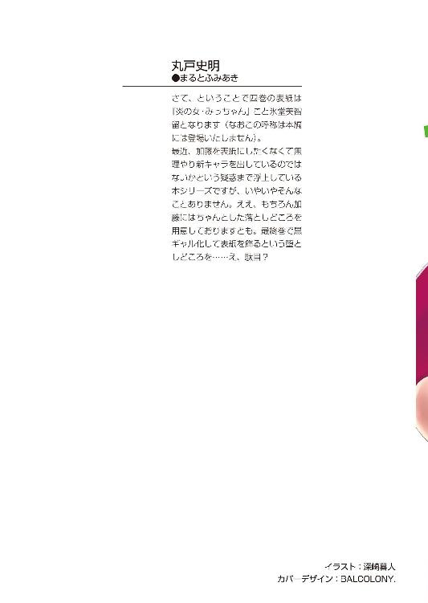
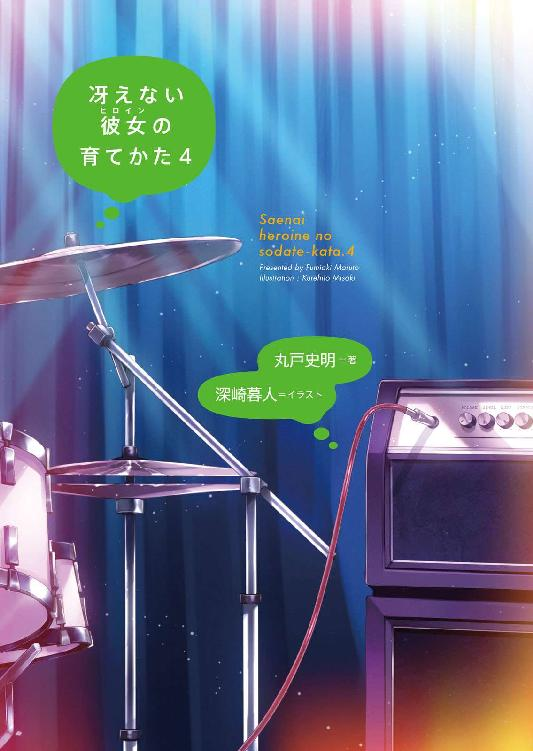
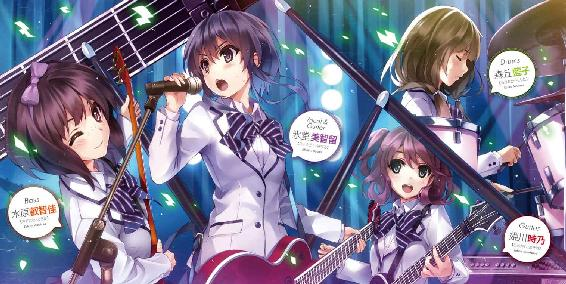
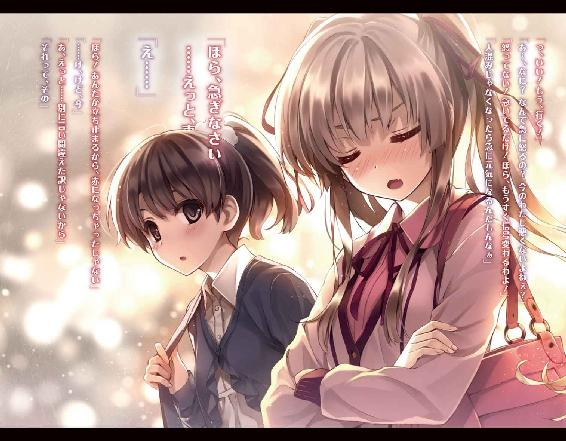
冴えない彼女の育てかた４
丸戸史明

富士見ファンタジア文庫
本作品の全部または一部を無断で複製、転載、配信、送信したり、ホームページ上に転載することを禁止します。また、本作品の内容を無断で改変、改ざん等を行うことも禁止します。
本作品購入時にご承諾いただいた規約により、有償・無償にかかわらず本作品を第三者に譲渡することはできません。
本作品を示すサムネイルなどのイメージ画像は、再ダウンロード時に予告なく変更される場合があります。
本作品は縦書きでレイアウトされています。
また、ご覧になるリーディングシステムにより、表示の差が認められることがあります。
口絵・本文イラスト 深崎暮人
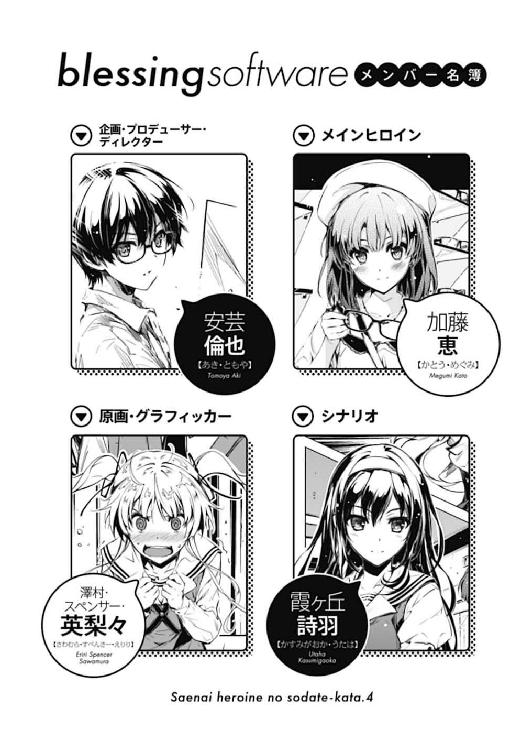
プロローグ
放課後の視聴覚室に差し込む夕陽が、少しずつ寂寥感を感じさせるようになる九月下旬......
「って、なによそれ⁉ 結局絵とシナリオ以外は何も進んでないってことじゃないの！」
......なんだけど、そんなほの暗さに似合う静寂を思い切りぶち壊すお馴染みの声が辺りに響き渡る。
「ちょっと倫也、そろそろゲーム組み始めないと、冬コミになんて間に合う訳ないわよ？ あんたその辺わかってんの⁉」
「そ、そりゃ、まぁ......」
最近、ずっとこの始まり方だから、誰の声だかわかるよね？ ほら、声音も髪の色もキンキラキンの人だよ。
「だいたい、なんでキャラデザも原画も背景も塗りも並行して全部やってるあたしの方が進んでるのよ？ おかしいでしょこんなの！」
「本当、おかしいわよね......澤村さんのここ最近のモチベーションの上がり方」
「なっ......⁉」
で、その金髪の少女の怒りに、水と油を同時に注ぐかのように、皮肉混じりで優しくて、冷たくて温かい絶妙なアクセントの声が被さる。
「夏コミが終わった辺りから作業の進み具合もクオリティも目に見えて違ってきてるのよね。それに毎日活き活きしてるし。一体、どんな嬉しいことがあったのやら......」
「そ、そ、それが夏休み前辺りから急にやる気になっちゃって、ずっと超速でシナリオ上げ続けてる女の言うこと⁉」
最近、ずっとこの流れだから誰のツッコミかわかるよね？ ほら、性格も髪の色も真っ黒な人だよ。
「私は曲がりなりにも商業を経験しているプロですもの。依頼を受けた案件に対して全力で臨むのはいつの場合でも同じ......」
「編集さんから聞いてるわよ。霞詩子の新シリーズ、立ち上げが遅れに遅れてるんですって？」
「............倫理君あなた澤村さんを不死川書店に紹介したわね？ やってはいけないことをしでかしたわね？」
「仕方ないんだよぅ町田さんにどうしてもって頼まれたんだよぅ！」
視聴覚室の窓側と廊下側、両隅に分かれて毎度戦う二人の美少女。
かたやラノベ編集部に戦力として目をつけられるイラストレーター、柏木エリこと豊ヶ崎学園二年、澤村・スペンサー・英梨々。
かたやラノベ編集部に名指しで原稿の遅さを嘆かれる主力作家、霞詩子こと豊ヶ崎学園三年、霞ヶ丘詩羽。
で、そんな二人にこうして挟まれている俺......
あろうことか、このオタク業界的有名人二人をメンバーに擁する同人ゲーム制作サークル『blessing software』代表、豊ヶ崎学園二年、安芸倫也。
俺たち三人＋αは、今年の春にこのサークルを設立し、高校生活の集大成とか、青春の思い出作りとか、若いうちの苦労は課金してでもしろとか、そういうのとはちょっと違う目的で同人ギャルゲー制作に乗り出した。
そしてそろそろ秋となった今、シナリオは終盤にさしかかり、グラフィック関係もなんとか目鼻がついた段階になって、とある制作進行上の問題が浮き彫りになったという訳だ。
「まぁ、澤村さんのあまりに子供っぽい挑発はこの際置いておくとして、確かにこの先の体制をどうしていくか考えないといけないわね」
「完全に言い負かされたくせにそれを認めない霞ヶ丘詩羽のみっともなさはそれとして、スクリプトとかＢＧＭとかどうすんのよ？」
「あんたら半年近くも一緒に活動してんだから少しは仲良くしてくれよって願いはいつでも持ってるけど、とにかく今はその件が最優先だな......特にスクリプト」
さて、それではここでこの二人の闘争の歴史......ではなく、俺たちのゲーム制作の概要について説明しよう。
俺たち『blessing software』が作ろうとしているゲームは、俗に言う紙芝居ギャルゲー......美少女が出てきて主人公と仲良くなったり、プレイヤーの見ていないところで二人きりでナニなことをしたり、ちょっとだけ仲違いしてハラハラさせるも結局元の鞘に収まったり、でもヒロインを巡って男のライバルとか登場させると今は色々と叩かれるんでそっち方面は配慮したりする......えっと、別にそういうのは言いたいことの本質じゃなくてだな。
つまり、可愛い女の子が画面に表示されて、面白い台詞やモノローグがテキストや音声で表現されて、情緒豊かな音楽がシーンを盛り上げて、で、そういった一つ一つがマウスやコントローラーのボタンを押すことで制御される、いわゆるアドベンチャーゲームと呼ばれるものだ。
巨大なモンスターが暴れ回る超大作ＲＰＧとか、目にも止まらぬ速さでキャラクターを操作する格闘ゲームとか、やり込みがい十分のパズルゲームとかとは違い、絵やテキストの素材があれば、後はそれを組み合わせて実行させるための、まぁ、そこそこ簡単なプログラムを組むだけで作ることができる。
さらに最近では、一からプログラムを組むまでもなく、出来合いのゲームエンジンを動かす簡単な命令文、いわゆる〝スクリプト〟さえ書ければ、この手のゲームはそこそこ作れる。
ただ、簡単とは言っても、それはやっぱりプログラムな訳で、ある程度の専門知識が必要なのは言うまでもなく......
「で、倫也、あんたスクリプト組んだことは？」
「消費型オタクにそれを聞く？ 聞いちゃいますか！」
翻って俺こと安芸倫也。
プロとかスペシャリストとかエキスパートとかいう肩書きに憧れる高校二年生。
この『憧れる』ってところが重要なんだ......追いかけないって意味で。
「男の子って、一度はＲＰＧツ○ールにハマるものじゃないのかしら？」
「もちろんやってたよ！ モンスター一体作り上げたところで力尽きたけどな！」
そう、男の子たるもの、一度は『○ープス○ーティー』や『ゆ○にっき』なんかに触発され、あの有名ゲーム制作ソフトに手を出すところまでは既定路線だ。
そして『本当に簡単にゲームが作れる』と信じていた男の子のほとんどが、そのテキスト入力のめんどくささとか、戦闘バランス調整の難しさとか、容量との厳しい戦いとか、テストプレイして気づく自分の才能のなさとかに心折れ、手元にあったＦ○とかＤ○とかプレイし始めて『あ～やっぱよくできてるわ～』などと思考停止するところまでも既定路線だ。
ただ、つい今までは、これでいいんだと思ってた。
だって俺は、天才や名人や変態（褒め言葉）の仕事をブヒブヒ啼きながら味わい尽くす消費豚。
才能豊かな頭脳と引き替えに健康な体を備え持ち、溢れ出る創造性と引き替えに迸る感受性豊かに育った平凡な少年だ。
そう、それでよかった......自分でゲームを作りたいなんて衝動に囚われるまでは。
「じゃあ、スクリプトのできる人を連れてくるしかないわね。アテはあるの倫理君？」
「俺にこれ以上の人脈を期待しないでください......」
そして、そんな消費系オタクの俺に唯一残されていた友人（こっちが勝手に認定しているのも含めて）という資産の方も枯渇気味。
......ていうか、壁サークルのイラストレーターと累計五十万部のラノベ作家を連れてきただけで、やれることは今後三〇年先まで含めてやり尽くしたような気がする。
「あのさ、安芸くん」
「あらかじめ言っとくけど、あたしネットで公募とかは絶対にお断りよ。どんな『自分の担当全然進まないくせにやたらと打ち合わせの誘いばっかきて念のため他のメンバーに聞いてみたらやっぱりあたしにしか声掛けてない粘着ストーカー』が来るかわからないし」
「わからない割にはえらく具体的だなおい」
多分それが、完全覆面同人作家柏木エリ誕生の瞬間だったんだろうな......
「えっとさ、わたし考えたんだけど」
「確かに、世間体を偏執的なまでに気にする超絶隠れオタク女にとっては、見ず知らずの人の加入は危険ね。けれど私にもスクリプトができる知り合いのアテはないし」
「っ......ま、まぁ、一人も友達いないから世間体なんて気にする必要ないハイパー根暗女の人脈なんて誰も期待してないから安心していいわよ」
「二人ともメンバー集めを心配するのか互いの憎悪を燃えたぎらせるのかどっちかにしてよ⁉」
どうしてこの二人は、一つの話題でわざわざ二種類の胃痛を与えてくれようとするのか。
「そのスクリプトっての、わたしがやるよ」
「何はともあれ八方塞がりね......どうするの倫理君？」
「結局、最後はあんたが何とかするしかないのよ倫也」
「けど、知り合いにアテもない、公募もできないとなると一体どうすれば......ってちょっと待って！ 今加藤がなんか言った！」
と、まるで徹夜で討論を戦わせたかと思うほど疲れ切った俺たちの脳に、天啓のようにハッキリとした声が届いた。
「......えっと、今じゃなくて結構前からなんか言ってるんだけど、わたし」
「あ、そうだっけ？ 悪い悪い」
いや、どうやらさっきからずっと届いていたらしいんだけど、全然意識してなかったせいで聞こえなかったようだ。
最近、というか出会ってからずっとこのオチだったから、誰のことかわかるよね？ 態度も存在感もフラットな人だよ。
「だからさ、わたしがやるよ、それ」
「お前、それってまさか......」
「うん、スクリプトってやつ」
さっきから、俺のちょっとだけ後ろでいつも通り適当に暇を潰していたモブ的クラスメイト、加藤恵こと豊ヶ崎学園二年、加藤恵。
......いい加減ハンドルネームくらいは付けてもいいかもな。
「あのな加藤、お前、スクリプトって何やるかわかってるのか？」
「えっと、よく知らないけど、とりあえずパソコンでカタカタやるんでしょ？」
「お前はコンピューター関係に全然ついていけない団塊世代のおばあちゃんか......」
夏休み前に、ショートボブからショートポニーへと適当に変身した髪型は、今はそのままショートポニーと普通のポニーの中間くらいのさらに適当なものへと進化して、見事なまでに周囲に埋没している。
まぁ、金髪ツインテールと黒髪ロングという、目立ちすぎる周囲の方が悪いという意見はとりあえず参考にさせていただくけど。
「てゆっかさ、わたし、絵も文章も書けないし、もちろん音楽も作ったことないし」
「それがどうしたんだ？」
「でも、パソコンの使い方なら授業でちょっとやったから、出来そうなことってそれくらいしかないんだよね」
「な......っ」
と、まぁ、そんな外見的無特徴の話はともかくとして......
「そんなわけで、あとは音楽だけど......ね、今度の学園祭でバンドやってるコたちに声掛けてみるってのはどうかな？」
あまり劇的には見えないけど、これは歴史的瞬間だ。
オタク系のことなんか何もわからず、たいして興味もなく、ただ俺に引きずり込まれただけの加藤が、初めて自主的にゲーム作りに関わろうとした、記念すべき日。
「加藤......」
「ん？ なに？」
だから俺は嬉しくて嬉しくて、叫び出したくなる衝動を抑えて静かに声を絞り出し......
「お前はっ！ ゲーム作りをっ！ ナメているっっっ」
「え～」
などということは特になく、その、世の中甘く見すぎな態度にブチ切れた。
「絵が描けないから、文章が書けないから、曲が作れないから......そんな理由で、ゲームの骨組みとも言えるスクリプトを組もうなんて、そうじゃないだろ......そうじゃないだろう！ なぁ⁉」
「そ、そうなの？」
「スクリプトってのはなぁ、演出ってのはなぁ......絵と文章と曲というバラバラの素材を、一つのゲーム作品として完成させる、ものすごく重要なポジションなんだよ！」
「あ～......うん」
「何もできないから仕方なくやるようなことじゃないんだよ......逆だよ、絵にも文章にも曲にも精通してる人間でないとできないんだよ！」
俺の本気の激昂に、加藤がフラットに黙り込む。
その、全然堪えてなさそうな表情は少し気になるけど、それでもきっと、言葉を失うくらいに俺の言葉に感銘を受けたということで......
「一番最初に世の中ナメ切ったような企画書を出してきたのはどこの人だったかしら？」
「何もできないからって全部を丸投げしようとする奴と、どっちが人間として出来てると思う？」
「とにかく！」
加藤が静かになった代わりに湧き出した余計な雑音を遮ると、俺はもう一度皆の方を向いて、強い決意とともに宣言する。
「......こうなったら仕方ない、スクリプトは俺がやる」
「できるの安芸くん？」
「少なくとも加藤よりはな！」
消費型オタクとしての自分はナメられても仕方ないけど、男のコとしての俺をナメてもらっちゃ困る。
今までだって、センスのないのを全部努力でカバーしてきたんだ。
なにより俺には、寝る間も惜しんで続けたバイトの経験がある！
......まぁ、その経験が勉強によるものじゃないのは一部の大人には不評だけど。
「最初からそう言ってればちょっとはサマになったものを......ねぇ澤村さん」
「霞ヶ丘詩羽の言う通り。ギリギリにならないと人も集めないわ何もやらないわ最低」
「だいたい、誰が、いつまでに、何をやるかをきちっと決めるのがディレクターである倫理君の役目なのに」
「そもそも人手が足りなければどこかから連れてくるのがプロデューサーである倫也の仕事だっていうのに」
「せっかく人がやる気になったのに後ろからチクチク刺さないでよ⁉」
なんか今、この二人が仲良くなる方法を見つけた気がしたけど、それを実践するには色々と自分の精神的事情がヤバそうなので気づかぬふりをしつつ......
「とにかく！ みんな今後ともサポートよろしくな！」
と、俺は、大きな声と笑顔で宣言する。
なぜなら俺は、このサークルの代表にして、プロデューサー兼ディレクター。
ゲーム制作の最終責任者なんだ。
だから、たとえ辛くても、悲しくても、常に笑顔で、前に進もう。
だってまだ、銀行とか流通とか未払いとか、そういう大人の事情に触れなくてもいい、失敗を恐れずに済むお年頃なんだから......
「ま、かなり読ませるシナリオ書いてるつもりだから演出は不要だと思うけど」
「ユーザーは『ヘタクソな画面効果なんかやめてもっと絵を見せろ』って言うかもね」
「あんたら自信満々だな......」
それに俺には、そんな俺の空元気に、ただ苦笑で応えてくれる最高の仲間たちがいる。
勝てる、勝てるんだ......いや、夢オチじゃなくてマジで。
「いいぜ、受けて立つ......最高のゲーム、作り上げてみせる！」
「あのさ安芸くん、それで結局わたしは何をすれば？」
「ああ、加藤は消去法で音楽担当ということで」
「え～」
てなわけで、ゲーム制作サークル『blessing software』は今日も平常運転です。
第一章 ラブコメだったら一冊に一度はお風呂シーン入れましょうよ（編集）
「ただいま～」
玄関を開けていつものように声を掛けても、真っ暗なリビングからはいつものように誰の声も返ってこない。
家に帰り着いた今はもう六時を回っているけど、今日も親たちは仕事に遊びに付き合いにと、忙しくも充実した日々を送っているに違いない......俺と同じように。
そう、これが噂の超放任主義家庭、安芸家の日常。
こんなふうに、ほぼ毎日、家に帰っても夜遅くまで誰もいない。
食事は作り置きか、出来合いの総菜を冷蔵庫からかき集めて適当に済ませる。
それ以外はずっと自室に閉じこもるので、親と顔を合わせる日の方が稀だったりする。
「......先に風呂にするか、汗かいたしな」
ま、そんなわけで多少独り言が多くなる傾向はあるけれど......
それでも、親との断絶を恨んでひねくれたりとか、それをダシに同じ境遇の女の子を口説いたりとか、自分の屑な行動の正当性をアピールしたりとか、そんなみっともないことはしない。
だいたい、不自由のない生活させてくれるだけで大感謝じゃないか。そんなことでいちいち不満言ってたらバチが当たるだろ。
なんてことをつらつらと思いながら、洗面所の扉を開け、洗濯機の上に鞄を置き、服を脱ぐ。
鞄を置いたとき、ドスンといういつもより大きい音が響いたのは、ちょっと遠回りして大型書店で買ってきた本のせい。
ほとんどの同人ゲームで使われている某フリーエンジンの教本は、噂通り、まさに人を殺せるレベルの分厚さだった。
これで実は前編だけとかどんだけ......
「ふぅぅぅぅ～」
蛇口をひねり、熱いシャワーを全身に浴びつつ、今日のサークル活動での決定事項に思いを馳せる。
自分がとうとう、クリエイターという未体験ゾーンへ突入したその瞬間を振り返る。
今までずっと憧れていた、称えていた、そして見守っていた人たちと同じステージへと上がった事実をかみ締める。
温度高めのお湯のせいか、湧き上がる高揚感のせいか、体を心地よい熱さが駆け巡る。
意外なことに、思ったよりもずっと高いモチベーションを持っている自分がいる。
多分風呂から上がったら、夕食もそぞろにスクリプトの勉強に入り、そのまま徹夜でサンプルプログラムと格闘することになるだろう。
「あ......」
ただ、もちろん、不安がない訳じゃない。
まるで今までの高揚感を必死に打ち消そうとするかのように、背筋を徐々に不安が駆け上がる。
そう、なんと言っても......
「やべぇ、今日『ザンスカールＶ×Ｇ』の最終回だった......」
今週から、今まで見続けてきた夏アニメの最終回ラッシュが始まる。
なのにこのままでは実況スレの祭りに参加できないという、かつてない不安だ。
さらには、このまま作業に入ってしまうと、秋アニメを全切りせざるを得ないという、人知を超えた恐怖だ。
全話録画して時間稼ぎをしたとしても、それら一クール×数十シリーズを消化する余裕は、今年はもう残されていない。
冬コミで秋アニメの話ができないオタクなんてビッグサイトに行く資格ないだろ......
でも、そう考えるとさ、商業の最前線で大量の仕事をこなしつつ、それでいて放映終了直後のアニメヒロイン凌辱（らぶらぶ系でも可）同人誌まで出してくる作家の人たちは、一体どうやってアニメを見る時間を捻出しているんだろうな？
......そういえば、ファンタスティック文庫編集部の町田さんも言ってたな。
『たとえ電話に出なくてもいい（本当はよくない）。ただ、そうやって連絡も付かない状態なのにツイッターでアニメ最新話の感想をつぶやくのは精神衛生上悪いからやめてほしい』と......
「......ふぅ」
などと、いつまでも悩んでいてもしょうがないので、とりあえずシャワーを止める。
二次創作同人もやっている商業作家の仕事に対する意識の問題について......ではなく、俺のこれからの生き方については、部屋に戻ってから大いに考えよう。
そう決意して、俺が浴室の扉に手を掛けようとした瞬間......
まるで自動ドアのセンサーが反応したかのように、その扉が音もなく開いた。
「あれ？ なぁんだ帰ってたんだトモ」
「え......」
俺の方が『なぁんだ帰ってたんだ母さん』と言うべきはずのこの状況......
かと思ったら、そこにいたのは俺の母親ではなく、さらに言えば父親でもなく。
「ゴメン、誰もいなかったから勝手に上がってた。おばさんに電話したら鍵の置き場所教えてくれたし」
けれどその人物は、普通に家族みたいにフランクに接してきた。
年は俺と同じくらい、背丈も俺と同じくらい、けれど性別は正反対。
へそが出るくらい丈の短い黒のタンクトップに、かなり短めのジーンズのショートパンツ（ホットパンツって言うんだっけ？）という、思いっきり部屋着っぽい服装。
つまり高校生くらいの、ラフな格好の、結構背の高い女の子という訳で。
......なお、言っておくが俺は全裸だ。
「うわわわわあきゃあああぁぁぁ～～～！」
そんな訳で、俺は盛大に女の子っぽい悲鳴を上げて、その場にしゃがみ込んだ。
これは......なんというアンラッキースケベイベント。
「......どしたのトモ？」
で、こんな異常な状況にもかかわらず、目の前の女の子はきょとんとした表情で、相変わらず全裸のままの俺の姿をまじまじと眺める。
その、明らかにこっちのことを知っている風情の女の子相手に、俺は......
「み......美智留っ！」
「久しぶり～、お正月以来だね～」
正しく名前を呼んで、そのイトコのことを思い出した。
だいたい、一度でも話した相手の名前忘れるとかそういう失礼なことしないだろ普通。
※ ※ ※
オタクの創作世界に、お風呂イベントというものがある。
アニメやラノベ、ゲーム等の、ラブコメ要素がある作品にはつきものの、インパクトと萌えとエロの全てをくすぐる重要かつ定番のイベントだ。
それだけ効果が大きく、そして便利であることから、作品問わず多用されるが、それでもユーザーを満足させるためには、守らなければならない多くの約束事がある。
突発的であること、勘違いやミスによる発生で、当事者に悪意や作為がないこと。見た側は慌てること。見られた側は恥ずかしがること。そして、かなり際どいところまで露出してしまっていること。
あと、作品のレーティングによってはギリギリ踏みとどまっていること。なお最近では一般作品でもそのギリギリ感がかなりヤバいところまで後退しているような気がするがまぁそれはおいといて......
何より一番の約束事......というかあまりにも当たり前すぎる前提として、見る側が男性、見られる側が女性というのがある（ＢＬ、乙女系は少し事情が異なるが今は割愛）。
「あっはっは、ごめんごめん。でもそんな恥ずかしがることないじゃん」
「お前はもっと恥ずかしがれ！ 見る側も羞恥心を持てよぅ！」
......あるんだけど、入ってくる側で、しかも脱いでなくて、さらに全部見ておいて、ついでにまるっきり平常心とか、セオリー全部無視しやがったよこの女。
これじゃまるで加藤並みのイベントキラーじゃないか。
「にしてもすっごいオタクっぽい部屋だね～、トモ、あんたまだピコピコ卒業してないの？」
などと、ＩＴに関する理解度まで加藤並みだ......
あとＰＳＧ音源の奥深さもわからん奴がピコピコとか言うな。
「で、何しに来た美智留？」
「うん、それがさぁ、聞いてよトモ」
......さて、ここでさっきイトコ呼ばわりしたっきり放置していた人物紹介に戻ろう。
こいつの名は、氷堂美智留。
俺と同い年で、隣県の女子校に通う二年生。
俺の母親がこいつの父親の妹という、まぁ割とどこにでもある普通のイトコ関係にある。
互いの家が電車で一時間以上離れているせいで、こっちで会うことはほとんどない。
けれど、長野県にある氷堂家の実家で、盆と正月の年に二度は必ず会うくらいの典型的な親戚づきあいを......いや最近は夏コミがあるから年に一度だけだな。
これで冬コミが正月にずれ込んだら俺たちはもう二度と会うことは......頼むよ準備会？
と、まぁ、そんな、血も付き合いもそこそこな関係にもかかわらず、俺たちは子供の頃から自他共に認める、仲のいい友達を続けてきた。
なんでそうなったかっていうと、年齢的に近い親戚が俺たち以外にいなかったことと、お互いに物怖じしない性格で、人見知りとかいう言葉の意味すら知らなかったことと、そして......
「あ、事情を話す前にノド渇いたからこのコーラもらうね？」
「待て、それ俺の飲みかけだ。ちゃんと冷蔵庫から新しいの取ってくるから......」
「別にぬるくてもいいよ？ いただきま～す」
「いや、だからそういう意味じゃなくて......」
こんな感じに、間接キスとかそういうイベントフラグ的なものを全然意識も認識もしない、こいつの明け透けさにある。
まぁ、そういう意味なら、俺の周りの女性陣の中では、非オタであるという面も含めて一番加藤に近いのかもしれない。
ただそれでも、やっぱり加藤とは決定的にキャラ立ちの強さが違うわけで。
というのも......
「ふぅ、ごちそうさま......それでさ聞いてよトモ！ 父さんったらさ、酷いんだよ？」
「酷いのは今のお前の格好だ」
「ん？ どこが？ いつも通りじゃん？」
「いつも通り過ぎるわ！」
服装についてはさっき紹介した通りのタンクトップにショートパンツという、思いっきりの露出度。
そんな格好で、俺のベッドの上で思いっきりあぐらをかいて座っている女の子を想像して欲しい。あるいはピクシブに上げてくれても可。
あ、イメージする上で情報が足りないなら補足するけど、タンクトップは黒一色の薄めかつ短めのやつで、肩は当然ながらお腹もへその辺りまで素肌むき出しな上に、さっきから動くたび、そのトップに位置するボタンのような突起がほどよく揺れ......こいつ絶対ノーブラだよ。
さらにショートパンツはかなり短く切れ込み、太股のさらに上の方、ちょっと丸みを帯びているところまで素肌が見えてしまってて......それであぐらをかいているせいで、こっちの視点次第では隙間から何かが見えてしまう危険性もあったりして。
......まぁ、ここまで執拗に説明する必要があるのかについては置いとくとして。
「上に何か羽織れ！ いや上だけじゃなく下も！」
「いや～、制服以外はこれしか持って来てないんだよね～」
「だったら俺のジャージでも貸すから」
「やだよジャージなんて余計恥ずかしい。あんなの体育以外で着れるわけないじゃん」
「......お前の言ってることは正しいけどそれ以上いけない」
おわかりいただけただろうか。
今の俺の視界がどれだけアレでナニなものであるかが。
加藤じゃ絶対にこうは行かないだろ？ なぁ？
「だいたい、長野のお祖父ちゃんちでもいっつもこんなんだったじゃん。今さらなに言ってんの」
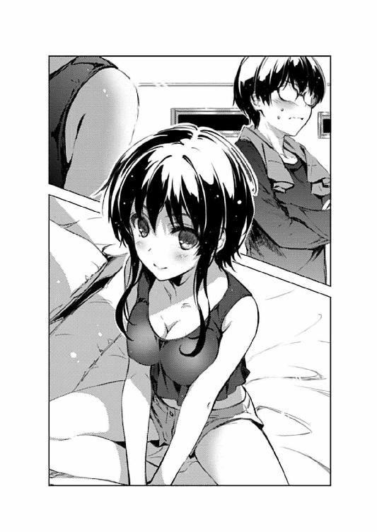
「今さらだから言うんだろうが......」
ナニしろ......いや、何しろここでは親戚一同が誰もいない二人きり。
俺たちの年も、今や幼稚園児でも小学生でも中学生でもない高校生。
第二次性徴なんかとっくの昔に過ぎてるし。
......どうやら目の前の奴は、第二次性徴過ぎたのは体の方だけみたいだけど。
「とにかくちゃんとした服を着て、ちゃんと机の前に座れ。でなければ事情も聞かずに追い出す」
「なにその委員長みたいな台詞。オタクのくせに」
「オタクだからこういう状況を軽く受け流せないんだろうが！ わかれよ！」
まだ詩羽先輩みたいにわざと悪戯してくるなら、あっちも引きどころをわきまえ......てないけど、なんとか言えばわかってくれるけど......
こういう、女子校で養殖された天然モノは駄目だ。
いや言ってることが変なのはわかってるけど駄目なんだよ......ムズムズする。
※ ※ ※
「正月んとき言ったじゃん？ 高校に入ってバンド始めたって。女の子たちだけで」
「あ～、そういえばそんなこと言ってたな......まだ続けてたんだアレ」
「しっつれいだな～！ 始めてまだ一年でやめるわけないじゃん」
「いや、だってお前飽きっぽいだろ。それも思いっきり」
「今度は違うんだって！ 思いっきり本気なんだって！」
「あ、そ」
などと生返事したものの、美智留の場合、その言葉を今すぐ信じることも難しい。
何しろこいつは、昔からバレーだの演劇だのバスケだの、すぐに色々な部活動にハマっては半年も経たずに投げ出すという、一クールごとに嫁を替えるアニメファンといい勝負の飽きっぽさを誇っていたから。
「でさ、先週学園祭だったんだけど、その時のライブがすっごい盛り上がってさ......もう、伝説のステージとかみんなに呼ばれちゃってたりして！」
「女子校で良かったな......共学なら男女関係のもつれで崩壊してるぞ、そのバンド」
いや単なる一般論だけど。
「でさ、そんとき、何かライブハウスの関係者がステージ見てたみたいで、ちょっとウチでやってみない、みたいなスカウトってゆうか、そういう流れになっちゃってさぁ」
「お前確かギターだったよな？」
「それとついでにボーカルもね」
「......思いっきり花形だな」
自分が率いるバンドが学園祭で大人気を博し、さらにライブハウスデビューとか、他の奴が言い出したなら妄想乙で済ませるところだが、美智留の場合、その言葉を今すぐ否定することも難しい。
何しろこいつ、バレーでは万年一回戦負けのチームを地区大会準優勝に導き、演劇では県大会入賞、バスケではギリギリ全国大会を逃がすところまで勝ち進むなど、勉強以外なら何事にも多大なる才能を発揮しやがる。
だから、学園祭程度なら伝説のステージくらいお手のものだろう。
......俺と同じ血を引いてるくせにマジムカつく。
「そんで、そこまで腰据えてやるんなら何かと入り用になるかなって、親に援助を頼んでみたんだよね......」
「ああ、もうその先の光景が目に見えるようだ......」
「そしたら父さん『そんな話全然聞いてない』って怒り出しちゃって......そりゃそうだよねぇ、今話したんだもん」
「話せよおい、バンド始めるときに話してやれよ！」
正月に俺がバンドの話を聞いたときも、氷堂のおじさんおばさんは、美智留の新しい趣味について全然知らなかった。
なんという『大人はわかってくれない』症候群......すごく厨くさいです。
それでいて、この背丈でこのフランクさでこの才能で......まぁ、この容姿だ。
そりゃ学校では滅茶苦茶モテるだろうなぁ......なにしろ女子校だし。
「ま、そんなこんなで、こういうことになっちゃったって訳」
「......なんか急に話が飛んだけど、自分で補完できるからまぁいいか」
氷堂のおじさんが、会うたびに口癖のように俺に言ってくる台詞がある。
『ウチの美智留も、倫くんみたいに素直で聞き分けが良くて、勉強のできる子だったらどんなによかったか』ってやつだ。
まぁ、俺に関しての評価は九割以上が誤解と偏見に満ちた実際の商品とは異なるイメージなんだけど、おじさんが言いたいのはそっちじゃなくて、つまり......
「つまり、また家出してきたんだな、お前？」
「ご名答～」
美智留の、この家庭内での態度の方なわけで。
というわけで、こいつってば親にとっては、ちっちゃな頃から悪ガキで、一五で不良と呼ばれてる。
実はちょっとでも客観的に見れば、全然ナイフみたいに尖ってない、単に適当に生きてるだけの極楽トンボなんだけど......いや親としては一人娘がそれじゃマズいのか。
「にしても、なんでウチなんだよ？ 今まで来たことなかったろ？」
「それがさぁ、雅美おばさんが今月からヨハネスブルグに赴任になっちゃって、マンションも引き払っちゃってて......」
「それは大変だな......お前よりもおばさんの安全が」
雅美おばさんってのは、美智留の親父さんや俺の母さんの妹で、未だ独身のまま都内の高級マンションで悠々自適な生活を送っていた、まぁこいつにとっての駆け込み寺みたいな物わかりのいい豪快な女性だった。
そっか、今まで親との緩衝材になってくれてたあの人までいないのか。確かに大変だ。
「というわけで、しばらくの間世話になるよ？ トモ」
......きっとこれからは、主にウチの家族がその重責を担うという意味で。
「いや、やっぱマズいだろ？」
「え～、なんで？」
「だってさ、一応、なんつ～か、同じ年頃の男がいる家だぞ？」
「同じ年頃の男ったって、トモじゃん」
「そうやって一言で男のプライドを傷つけた上にプレッシャーをかけないでくれる？」
「あ～、違うって。だから親戚で、家族みたいなものだからって意味じゃん」
「いや、だからお前、イトコってのは......」
「イトコがなに？」
「そ、それは......」
「......？」
まさか以前、加藤に熱く語って聞かせたあの警告がそのまま俺の状況に当てはまるとは、これはなんというブーメラン。
まさに人の振り見て我が振り直せというか、きっとあなたは戻ってくるだろうというか。
「えっと、だから、お前、イトコ同士ってのは、オタク的には色々と微妙な血縁でだなぁ......あひゃひゃひゃひゃひゃひゃひゃっ⁉」
などと、イトコとして、男として、オタクとして逡巡している俺の首筋に、突然生冷たくも柔ら固い感触が襲い来る。
だから日本語としておかしいのは俺の動揺の強さを表しているってことで。
「だ～か～ら～、そうやってゴニョゴニョ独り言言ってないで真面目に話を聞けってば～、うりゃうりゃ」
「真面目に聞いてるだろ......うひひひひぅっ⁉」
「人の話を聞くときは、ちゃんと相手の目を見ろって教わらなかったか～？ このっ、このっ」
「や、やめ、やめ......んほぉぉぉぉっ⁉」
......まぁ、アレだ。恥ずかしながら白状すると、俺はさっきからずっとベッドに背を向け、美智留の姿を視界に収めないまま会話をしていた訳だ。
だって仕方ないんや。こいつ、俺が何度言っても服装も姿勢も改めないんだもん。
「ほら、こっち向け～、向けってば～」
「や、やめっ......や～め～ろ～よ～！」
なのに美智留は、その俺の配慮に満ちた態度が逆に気に入らなかったらしく、俺の背中から首筋にかけて直接攻撃を仕掛けてきた。
見えてないからどういう姿勢なのかはわからないけど、どう考えても、俺の体に触れているこの感触は、爪先だ......
それが俺の背中をつついたり、頭を蹴飛ばしたり、首筋を撫でてきたりとやりたい放題。
......ちょっと待て、それってギャルゲー的にはもうピロートークレベルじゃん。
「ほ～ら参ったか～、うりうりうり～」
「うわあぁぁぁんっ、やめてよぅみっちゃ～ん！」
「だったらこっち向く！ でないと子供の時みたいに足四の字だよ？」
「今それやられたら足だけじゃなくて色々固まるから！」
※ ※ ※
最後の方、俺たちの子供の頃からの主従関係が暴露されてしまったような気がするが、それはまぁさておき......
その後、俺の両親が帰ってきた深夜になって、安芸家、氷堂家を交えた電話会議が厳かに執り行われた。
結果、心優しく、適当で、事なかれ主義の我が両親は、『ほとぼりが冷めるまで』というハッキリしない期間だけ、この紛うことなき不良娘を預かることに決めやがった。
自分たちは全然登場しない......いや家に寄りつかないくせに、なんて無責任な。
第二章 そういえば、イトコ同士って結（ｒｙ
「ふああああ～」
「ずいぶん眠そうだね安芸くん？」
「まぁ、ちょっとな......」
視聴覚室のいつもの席で盛大にあくびをする俺に、隣に座った加藤の、文字ヅラだけ気遣いに溢れた、けれど口調が全然心配そうじゃない声がかかる。
「もしかして徹夜？ 頑張るのもいいけど程々にね。栄養ドリンクの効き具合って値段に比例するらしいから気をつけた方がいいよ？」
「......有益な情報ありがとう」
そんないつも通りな、のほほんとした声と内容の励ましに無理やり気合を入れ直し、俺はもう一度必死に液晶画面を睨み返す。
「うあ」
......が、やっぱりさっぱり頭に入ってこない。
画面にはスクリプトのコード......要するに文字と数字と記号がずらりと並び、凄い勢いで俺の理数系嫌いを刺激する。
ほんと、どうしてこの文字の羅列があんなエロいゲームに......いやエロくないエロくない俺たちの作るゲームは健全だ。やっぱ疲れてるんだな俺。
前回のサークル活動から一週間過ぎた一〇月初旬。
それはつまり、例の〝台風〟がやってきてから一週間過ぎたということで。
ちなみにその台風は、未だに勢力衰えぬまま本州にどっかと停滞していたりする。
そう、俺のこの眠気は、実はスクリプトの勉強のせいではなく、夜な夜なイトコの女の子にちょっかいかけられる気弱な男の子の憂鬱と密接にリンクしている訳であり......
「加藤さんの言う通り、無理は駄目よ、倫理君」
「あれ？」
と、理由はどうあれ眠気でボロボロの俺をふたたび励ます声に振り向くと、いつの間にか俺の隣の席で心配そうに見つめている相手が、ショートポニーから黒髪ロングに替わっていた。
で、さっきまでそこにいたはずの加藤はと言えば、とっとと窓際に移動して、何の意図もなさそうにスマホをいじっている。
......本当、自分のポジションを人に譲る時のさりげなさは完璧だな。
「あなたのゲーム作りに懸ける情熱はもう十分伝わっている。けれど体を壊して作業が止まってしまっては元も子もないのよ？」
「詩羽先輩......」
で、こちらは本気で心配そうな視線と声を妙にアピールしながら、詩羽先輩がさり気なくなく、俺の肩に手を添える。
......この色々と満々なわざとらしさに気づいてるくせに、ふわりと漂ういい香りと、耳をくすぐる心地よい囁き声に、俺はくらくらせざるを得ない。
眠気で死にそうなときにこの心地よさは反則やで。
「ちょっと見せてみて。私でも少しは役に立つと思うの。実は以前、知り合いの作家が外注でゲームシナリオを請けたとき、いつの間にかクライアントに無償でスクリプトまで押しつけられていて、泣きながら一週間徹夜で仕上げたのを手伝ったことがあるから」
「いいよ先輩、これは俺の担当だから。ていうかそういう嫌過ぎる話はやめてよ」
しかもこの人、わざとらしくても言っている内容は健気そのもので。
まぁ、多少生臭くはあるけど。
「もう、見てられないわね......いいわ、後は私が家でやっておくから今日は帰りなさい」
「だから駄目だって詩羽先輩......先輩は話だけ作っててくれればいいんだってば」
さらに多分、噓でも何でもなく実践する気満々なのが余計タチ悪く。
俺よりもよっぽど徹夜を重ねて、俺よりもよっぽど忙しく働いてるくせに。
これって、内助の功というより全助の功、というかヒモを養う人気作家？
......あ、いかん、眠気のあまり、思考がギャルゲー主人公の暗い闇に侵されてきた。
「でも倫理君、あなたこのままじゃ......」
「だいたい俺、先輩のラノベ新シリーズの方だって超絶楽しみにしてるんだぜ？」
「え......？」
「なのに、いつまで経っても一巻出ないし。どうしてそんなに遅れて......って、それ、全部俺のせいなんだろ？」
「それは......そんなことないわよ」
「だから、やっぱり頑張る......だって、このままじゃ、俺が先輩の作家人生を壊しちまう......そんなの一生かけても償いきれないよ」
「り......倫也君？ い、今の台詞もう一度」
「あ～......ごめん。眠くてわけわかんないこと言ってるかも、聞き流して」
「録音ボタンは......録音ボタンはどこ⁉」
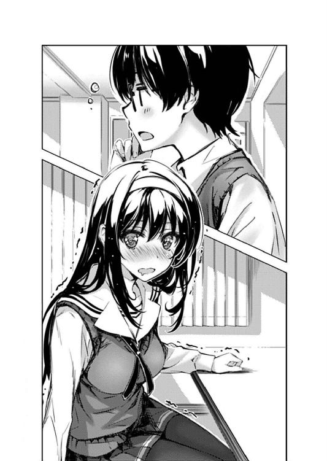
あれ、でもこれきっと夢だよな？ 何しろ現実ならシャレにならないくらいヤバいことを言ってるような気がするし。
うん、そうだ。多分これはハーレム系いちゃらぶエロゲー世界に入り込んでしまった俺という幸せな設定の夢で......
「ちょっと霞ヶ丘詩羽！ 黙って聞いてれば、あんた、男に人生メチャクチャにされる尽くし系不幸女のふりするのやめなさいよ！」
「ああっ！ 倫理君の動かぬ証言を録音するはずが、いきなりキンキンの雑音が入ってしまった......」
ほら、やっぱりこれは夢だ。
きっとこの後、割り込んできた女の子も参戦しての３Ｐ展開に移行するんだぜ？
※ ※ ※
「えっと、ここの立ち絵は『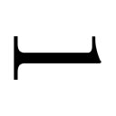』がいいかな？」
「でもさ澤村さん、このシーンの巡璃の心情って、ちょっと違うんじゃないかな？」
「ん？ それってどういうこと加藤さん？」
「ここってさ、巡璃が、別のヒロインのところに行こうとする主人公の背中を押すシーンだよね？」
「まぁ、シナリオ的にはそういう解釈みたいだけどさ......」
「だったらさ、普通、こんな清々しい笑顔なんかしないんじゃないかな？」
「う～ん、なるほど、確かにちょっと物わかりのいいコっぽ過ぎるかな」
「だからさ、ここはちょっと悲しそうに笑う『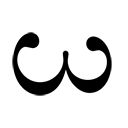』にすべきじゃない？」
「そうね、それも一理あるかな。じゃ、そういうことで、倫也」
「おう......」
英梨々と加藤の、なんだかとても熱の入ったディスカッションを経て、とうとう俺の重要なミッションが始まった。
......スクリプトのソースの中に『』と埋め込む機械的な作業が。
あ、一瞬で終わった。
「じゃ次のシーン行こうか......加藤さん、背景指定どうなってる？」
「えっと......シナリオには『街中』ってなってる」
「具体的なロケーションの指定はなしか......シナリオ担当のやっつけ仕事ぶりが目に余るわね」
「え、え～と、あはは......」
こんなふうに、春には全然接点のなかったこの同級生二人が、一つの目的に向かって仲睦まじく力を合わせているなんて、今までのことを考えると実に胸熱だ。
......俺がまったく介入できていないことを除けばな。
え～なにこれ？ スクリプト担当って演出も自分で指定するんじゃないの？
こんなふうに言われた指定を単純にコードに組み込むだけの簡単なお仕事なの？
せっかく五スタドリもするリアル栄養ドリンクで華麗な復活を遂げた俺なんなの？
そのエネルギーは俺の指先にしか必要じゃなかったの？
などという、俺の心の中の叫びに同調するかのように......
『シナリオに問題があるならすぐ直すのに......こんな場所に閉じ込められていなければ』
と、詩羽先輩の恨み節みたいな声が、教室内に響いた。
......視聴覚室内の全スピーカーから。
なお、肝心の詩羽先輩本人はとその姿を探せば、ガラス一枚で隔てられた放送室の窓越しに、恨みがましい視線でこっちを睨んでいたりする。
で、そこの機材群を使ってマイクパフォーマンスで介入しているという訳だ。
「サークル内の風紀を乱す輩はそこで一人楽しくシナリオでも書いてればいいのよ。スピーカーを切ってくれれば貧乏ゆすりも高笑いも聞かずに済むから一石二鳥だし」
『私は何もしてない......ただ倫理君に口説かれてただけなのに』
「あああごめんなさい口説いてません許してください！」
先ほどの夢オチ（じゃなかった）騒動のあと、先輩は放送室へ収監、そして俺は二人の保護観察官に囲まれる執行猶予二時間という判決が下った。
......まぁ、それら一連の処分を決定、執行したのは金色の一人だけだけど。
というか、このサークルは懲罰意識が高すぎると思うんだ。
「まぁ、真面目な話、演出関係はあたしと加藤さんで何とかするから」
「えっと、だから俺の出番......」
『でもこれから先、一番ネックになりそうなのは澤村さんじゃないのかしら？ 原画も背景もＣＧも全部一人でやろうなんて愛が......じゃなくて荷が重すぎると思うのだけど』
「男に......じゃなくてシナリオに入れ込むあまり、他の仕事がおろそかになってる作家様に言われたくないわね」
「マイク越しでまで喧嘩とか、なんでそうプロレスが板についてんだよあんたたち！」
よかった、俺の出番、こんなに早く訪れたよ......
などと俺が、安堵かつ寂寥の涙をこぼそうという瞬間......
「おっと」
俺の、胸ポケットのスマホが二度ほど揺れた。
どうやら電話じゃなく、メールの着信らしい。
俺は、送信元の心当たりとか深く考えず、何気なくスマホを取り出してメールを開き。
「え......」
そして、慌ててその画面を右に傾けた。
そう、英梨々の視界に入らないように。
Ｆｒｏｍ:美智留
Ｓｕｂ:今日、何時に帰る？
『こっちはもう帰ってんだけどさ。
晩ご飯ピザ取らない？』
『まったく、何を過剰反応しているのかしら澤村さんは。私なんて人畜無害で悪意もなく、敵としても雑魚としか言いようがない矮小な人間なのに』
「あ～はいはい、さすがは読者をフィクションの世界に引きずり込むのがお仕事の霞詩子先生におかれましては噓をつくのにひとカケラの罪悪感もお持ちでないようで～」
ふと英梨々の方を窺うと、とりあえずこっちの状況には気づかずに、相変わらずスピーカー越しに心冷え切るやり取りを続けていた。
なので俺は、ほっと胸をなで下ろしつつも、慎重にスマホの画面の角度を固定しつつ、英梨々に見えないように返信を打とうとして......
「......あ」
「ひぃっ⁉」
その画面の真正面、ガン見できる位置に鎮座していた加藤と至近距離で目が合った。
『本当のことなのに......だいたいあなた、私たちにとっての最大の脅威がなんなのか、まだ理解してないの？』
「はぁ？ すぐそうやって訳わかんないこと言ってはぐらかそうとする。だからあんたは......」
視聴覚室と放送室のバトルは、まだ続いている。
「ごめん、つい視界に入っちゃった」
「お、おう......」
だからまだ、俺と加藤の微妙に気まずい雰囲気には気づかれていない。
ならば今は、この不測の事態を何事もなかったかのように収束させなければならない。
俺は爆弾処理班のように慎重に、小声で加藤と交渉を続ける。
「そ、それでだな、加藤、この件については......」
「あ、それは安心してよ。誰からのメールだったとか、どんな内容だったとか、さすがにそういうこと人に話したりしないよ。マナー違反だもんね」
「そ、そうか、ありがとう......でもそれってメールの中身、全部見たってことだよな？」
「あ～......うん」
「なるほど、それは興味あるわね加藤さん。あんたもメールの中身見てみたいでしょ霞ヶ丘詩羽？」
『ええ、是非とも何が書いてあったのか詳細に教えてもらわないといけないわね』
「............え？」
「............え？」
そして俺は、今になって致命的なことに気づいた。
爆弾処理において最も重要なのは、慎重さでも静粛さでもなく、電光石火のスピードであったのだということに......
※ ※ ※
「そう、倫理君のイトコなんだ。この美智留さんって人」
「う、うす」
そろそろ陽射しがだいぶ斜めに傾いた、相変わらずの視聴覚室。
そんな場所で、整然と並べられていた机を全部後ろに寄せ、出来上がった広い空間を、今度は仮想法廷ならぬ仮想取調室と見なして俺たちが事情聴取に明け暮れているのには......まぁ、どういう訳かは今までの展開で十分にわかってるよね？
「今、倫理君の家にいるの？」
「は、はぁ」
「いつから？」
「い、一週間ほど前から」
「どうして？」
「か、家族と喧嘩して家出してきたみたいで」
「そう......それは可哀想に。きっと自暴自棄になっていることでしょうね。それこそ、行きずりのイトコと流されるままに、みたいな」
「ちょっと待ってイトコって親戚だよもうその時点で行きずりじゃないよ⁉」
教室の真ん中にぽつんと置かれた机一つ。
そこに向かい合って座るのは、重大事件の容疑者扱いされている俺と、こういう事件の時には無類の強さを発揮する〝落としのウタさん〟こと霞ヶ丘詩羽刑事。
......さっきまで収監されてたはずなのに入れ替わりの激しい署だなここは。
なお、取り調べ机からちょっと離れたところに置かれたもう一つの机には、記録係の澤村・スペンサー・英梨々巡査が陣取り、スケッチブックに鉛筆を走らせている。
あとついでに、隅にまとめられた机の一つに適当に座り、相変わらずスマホを適当にいじっている加藤恵ギャラリーもいることを付け加えておこう。
「じゃ、質問を続けるわね。年齢は？」
「同い年だよ、一六」
「誕生日は？」
「......えっと、それって聞く必要あるの？」
そんな緊迫した状況で、詩羽先輩の繰り出してくる質問は、えらく通り一遍で、あまり意味のないものに思えるものばかりだった。
「......実はあまり必要性を感じていなかったのだけれど、今の倫理君の表情と答えで、是非とも聞いてみたくなったわ」
「っ......」
......けれどやっぱり、そこは〝落としのウタさん〟の狡猾なテクニックだった。
関係なさそうな質問でも、全てこちらの反応を見て色々と探っていたんだ。
「もう一度聞くわね......誕生日は？」
「じゅ......一二月一八日」
「え......」
「ちょっと待ってよ倫也、その日って......」
俺がその日付を言った瞬間、詩羽先輩が息を吞むのと同時に、今まで黙っていた英梨々までもが驚きの表情で口を挟んできた。
そう、なぜならその日は......
「......なんの日だっけ？」
「俺の誕生日と同じ日なんだよぅ！」
他の三人が一気に緊迫した中、加藤のまるで状況を飲み込めてない問いかけが、場の雰囲気を一気にぶち壊す。
「あ、そっか、そういえば昔一度だけ聞いたかも。ごめん安芸くん」
「もう、頼むぜ加藤、ちゃんと空気を読んで......」
「ちなみにわたし、先月誕生日だったけど」
「ごめんなさい許してください今度フォローしますから！」
加藤恵、九月二三日生まれ......
今思い出した。そしてもう二度と忘れる訳にはいかない。
そして、詩羽先輩の尋問は、その後も苛烈さを増していき......
「同じ誕生日の上に......同じ病院で生まれた、ですって？」
とうとう話は、俺と美智留の生い立ちの秘密にまで迫っていた。
「えっと、長野の実家の近くにかかりつけの産婦人科があってさ、ウチの一族はみんなそこで生まれて、しばらくは実家に預けられるんだよね」
......いや、別に秘密なんてこれっぽっちもないんだけどね。
「じゃあ、幼少期どころか、生まれたときからの幼なじみってことかしら？」
「ん～、まぁ、そうなるかな？」
「っ......」
なんか今、ちょっと離れたところで〝ボキッ〟て鉛筆の芯が折れるような音が聞こえたような気がしたけど......
「生まれた日も、生まれた場所も、そして引き継ぐ血も同じだなんて......これはもう、倫理君の幼なじみの頂点に君臨する、まさに原始の幼なじみということね？ 他のパチモン幼なじみとは関係の深さが違うということね？」
「いや、別に......でも、ま、そうかな？」
「～～～っ！」
なんか今、ちょっと離れたところで〝ビリッ〟て紙が破れるような音が聞こえたような気がしたけど......
「あああああぁぁぁぁぁ～」
ついでに、誰かが描きかけの絵を台無しにしてしまったような断末魔の叫び声が聞こえた気がしたけど......って。
「さっきから何やってんだよ英梨々......」
「澤村さん、少し静かにしてくれないかしら？ うるさくて尋問できないでしょ？」
「ぱ、ぱチ、パチモ......っ」
そう、詩羽先輩の尋問は、苛烈さを増していた。
......なぜか一番ダメージを受けていたのは容疑者ではなかったけれど。
「つまり、まとめるとこういうことね？ 今、倫理君と同居中のイトコ、氷堂美智留さんは、なんと年齢も生まれた日も生まれた病院も一緒という、原始の幼なじみだった......」
「はうっ......」
「うん、まぁ」
もうあっちは突っ込まないことにした。
「ところがあなたたちが生まれた夜、その病院で火災が発生。そして救助作業の混乱で、あろうことか二人の赤ちゃんは取り違えられてしまう。一八○度変転してしまった二人の数奇な運命は、やがて再びこうして交わることになる......」
「いや取り違えてないから！ 生まれたときに性別わかってるから！ そもそも火事なんて起きてないから！」
「じゃあ、こういうことかしら？ 倫理君のお母さんと氷堂さんのお父さんの禁断の恋の末に生まれた二卵性双生児。生まれてすぐに引き離された二人の兄妹は偶然再会し、互いの関係を知らず愛し合うという、親子二代にわたる禁断の物語......」
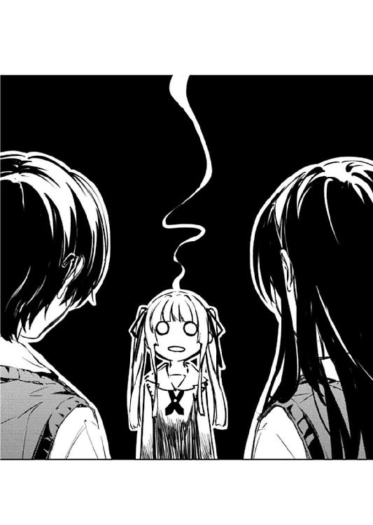
「だから人を倫理呼ばわりしておいて周囲の状況を真逆に設定するのやめてよ⁉」
......もうこっちにも突っ込みたくなくなってきたよ。
「これは......使える」
「何に⁉」
そう、突っ込みたくはないんだけど......
「何にって......そんなの、過去編の瑠璃シナリオに決まってるでしょ？ ふふっ」
「ああっ、やっぱりぃぃぃ～！」
でも、今になってキーボードを鬼のように叩き始めた先輩の目の血走り具合を見ているとそうも言ってられないんだよ......
「ずっと悩んでいたのよ......瑠璃を主人公の実妹にすることで、確かに二人が愛し合う上での背徳感や絶望感を盛り上げることができる。けれどそれは、同人とはいえ一般作品で超えてもいい壁なのか？ もしかしたら、ギリギリアウトになってしまわないか⁉」
「家に帰ってやろうね？ 今妄想を垂れ流すのはやめようね先輩⁉」
「逆に！ イトコ同士なら血縁的にも余裕でセーフ......しかし近親ネタが溢れる巷のギャルゲーに慣れ切ったユーザーにはその程度の関係性などぬるい！ ぬるすぎる！」
「誰か......誰か止めて！ 英り......っ？」
と、英梨々に助けを求めようと振り向くと、なぜだか奴は机に突っ伏したまま力尽きたようにぴくりとも動かない。
そんなにショックなことでもあったのかよ......
「ならば、ならばっ！ イトコという関係性のままでも、別の因縁を追加することによって後ろめたさを積み上げることは......できる、できるわっ！ そう、それが同時にこの世に生を受けたことによる感覚共有、血の繫がりと、場の繫がりと、時の繫がりが、さらに大きな心の繫がりと、そして相反する背徳感を盛り上げる......ふ、ふふ、見えてきた見えてきた見えてきた......スーパーハッピーエンドにして超絶バッドエンドへの道筋が見えてきたわ！ ふっふっふっふっふ......あ、あはっ、あははははっ」
「た、助けて加藤......先輩を、先輩を止めてっ！」
そう、俺が頼れるのは、どんな時でもフラット......冷静さを忘れない加藤恵ただ一人。
消去法？ 聞き慣れない言葉ですね？
「あのさ、安芸くん」
「お、おう？」
と、加藤は俺の期待通り、慌てず騒がず、俺の目をじっと見つめて、言い含めるようにしっかりと言葉を紡ぐ。
「同い年のイトコってさ、あまりにも頑強な恋人フラグだと思うんだけどどうかな？」
「加藤ぉぉぉぉ～⁉」
こいつ、あのときのこと覚えてやがった......
第三章 いいか？ 先読みするなよ？ ちゃんとラストで驚けよ？
「ん、んぅ......すぅ、すぅぅぅぅ～」
「......う～む」
ここ一週間ずっと寝不足気味の上、サークル活動ではあらぬ嫌疑をかけられ、そんなこんなでくたくたになって辿り着いた、午後八時を回った俺の部屋。
「ん、んあ......んふふふふ～」
手探りで壁のスイッチを入れると、部屋の中に浮かび上がったのは、ベッドの上で実に安らかに寝息を立てる、俺の寝不足の元凶。
......こうも幸せそうに惰眠を貪っているのを見ると殺意が湧くな。
「ん、んぅ......」
相変わらずタンクトップにショートパンツという軽装が、さらに寝相の悪さと相まって、お腹丸出しどころか下乳全開と言ってもいいレベルまでたくし上げられている。
「っ、こら、起きろ美智留！」
「ん～？」
......なので、殺意以外のものが湧く前に早いとこ居住まいを正させねば。
「ふあぁぁぁ～、ずいぶん遅かったじゃんトモ」
「サークルあったからな」
「ならメールよこしなよ。あんま遅いから晩ご飯先に食べちゃったよ？」
と、美智留が指差した机の上には冷めきったラージサイズのピザが１／３ほど......っておい、その分配比率はどうなんだ？ あとそもそも食い過ぎだろ。
「お前、こんな時間にグースカ寝てるから夜更かしするんだろうが」
「いや～、夜更かしするからこんな時間に眠くなるんだとも言えるよね～」
ま、今さらその程度の文句を言ったところで堪えるような奴じゃないってことはこの一週間で......いや、この一七年弱で嫌というほど身に染みている。
なので、もはやいちいち大げさに突っかかるようなことはしない。
これ以上、余計な体力を浪費させられてたまるか。
「だいたい、人のベッドで寝るなと何度も......客間に布団敷いてあるだろ？」
「あ、そういえばベッドにすっごい長い髪の毛が落ちてたよ～？」
「......適当なこと言ってんなよ」
「ちぇ～、引っかからないか～」
「そもそも、俺にそんな甲斐性があるわけないだろ」
あ、危なかった～！
そうだよな、大丈夫だよな......詩羽先輩が使った後も何度かシーツ洗ったはずだし！
「え～、それは違うと思うけどな～」
「違うって、何がだよ？」
「トモがモテないのって、甲斐性とかじゃなくてオタクなんかやってるからじゃん」
「何言ってんだ、モテるモテないにオタクは関係ないぞ」
「そんなことないって、トモ、普通にやってれば絶対モテるって」
あと追加、この一七年弱で身に染みた、良くも悪くも親戚だなと感じる瞬間......
こいつ、身内びいきが結構酷いんだよな。
「その絶対的自信がどこから来るのか知らんが、論破してやろうか？」
「え～、どうやって？」
「お前、非オタのくせに彼氏いないだろ」
「な、なんでわかる⁉」
「同い年の男の家に転がり込んでる時点でお察しだろうが！」
こいつこそ、百合に目覚めれば凄い勢いで入れ食いなのにもったいない。
まぁ、それが本人にとって幸せかはさておき。
......って、これも身内びいきに入るのか？
「や、や～、それとこれとは話が別だし！ こっちはほら、今はバンドに夢中で恋愛なんかって感じだしさぁ」
「それは俺も同じだ。オタク活動に夢中で今は三次元なんか......」
「え～もったいないじゃん、せっかくの青春だよ？ なんならウチのメンバーのコ紹介しようか？ まぁ、トモが脱オタするならだけど」
「男いらないくらい夢中になってるバンドのメンバーに男あてがおうとか、どういう矛盾した了見なんだよ⁉」
さらに追加、この一七年弱で身に染みた、良くも悪くも他人だなと感じる瞬間......
それがこの、『非オタはわかってくれない』的な了見の狭さ。
美智留が安芸家の居候となって一週間。
俺のオタク的生活空間は、毎日少しずつ浸食を受け続けていた。
最初に異変に気づいたのは、遠慮も何もあったもんじゃない同居二日目の土曜日。
その日、俺がいつもの秋葉原巡回を終え、両手いっぱいのオタグッズとともに至福の表情で帰宅すると、部屋の中が見違えるほど綺麗に整理整頓されていた。
まぁ、それだけ聞いたなら、これから一緒に住むことになった美智留が気を利かせて家事全般を引き受けてくれたんだろうという好意的な解釈もできないでもなかった。
......その一方で、俺の部屋中のオタグッズが玄関先で特大のゴミ袋一○袋にまとめられ、さらには美智留の持ち込んだギターやらアンプやらが部屋にきちんと設置されている状況を目の当たりにしなければ、だが。
その、これが母親なら家出、妻なら離婚、同棲中の彼女なら泣き寝入りせざるを得ない暴挙に、さすがの俺もブチ切れて、くんずほぐれつの大喧嘩に発展した。
なお、その喧嘩の際の肉体的濃厚接触の数々を列挙すると羨ましがられるかもしれないが、本当に痛い技もたくさんあるんだから同情して欲しい。
まぁ、確かにイタ気持ちいい技も相当数あったことは認めざるを得ないけど。
......まぁ、そんなこんなで、結局、それらグッズの○ックオフ行きは食い止めたものの、美智留が持ち込んだ荷物の浸食までは食い止めることができず現在に至る。
「さってっと、それじゃ眠気覚ましに一曲♪」
「......アンプに繫ぐなよ？ 俺もやることあるんだから」
「わ～かってるって！ ちゃんとヘッドフォン使うから」
それからもこいつは、練習と称して機材の設置されている俺の部屋に深夜まで入り浸り、吞気にギターを弾いては俺の睡眠時間を順調に削ってくれている。
深夜アニメ視聴のため、安芸家で一番防音設備が充実しているこの部屋をギター練習に使うのは理屈では正しいんだけど、それはあくまで居候側の理屈でしかないよな？
などと心の中で愚痴をこぼしつつ、俺はデスクに座り、ＰＣのディスプレイに向かう。
「なにトモ、またピコピコ？」
「お前のジャカジャカと同じだ」
「ちぇ～、んじゃ、ジャカジャカ行きま～す♪」
互いの無理解を笑い飛ばし、美智留がベッドの上でギターをかき鳴らす。
と、そこから聞こえるのは、擬音通りのジャカジャカ弦が鳴る雑音だけ。
別に、俺がギターに対して無理解だからって訳じゃなく（いや、それもあるけど）、そもそもアンプやヘッドフォン越しに聴かないと、エレキギターの本当の音色はわかるわけがない......らしい。
それもあって、美智留はよく『ちょっとこれ聴いてみなよトモ』と、ヘッドフォンを押しつけようとするけど、俺は今までそれを頑なに拒み続けてきた。
それは、今のこの状況を決して容認しているわけではないという、無言の抵抗の意思を示すため......いやむっちゃ有言でも抵抗してるけど。
あと、向こうも俺のゲームやアニメを『やだよそんなオタクっぽいの、時間の無駄じゃん』と頑なに見ようとしないので意固地になっているというのもある。
......まぁ、美智留も案外、同じ理由で意固地になってるのかもしれないけど。
「～～♪」
ＰＣで作業をしている間にも、美智留のギターの音とハミングの声が部屋中に響く。
ずっと、まともに向き合おうとしなかったその音色は、本音を言うと、俺がこの部屋で過ごすのの邪魔にならないくらい、小さくて、優しくて、そして心地よい。
ゲームをやっていても、アニメを見ていても、そしてスクリプトを打っていても、時には寄り添うように、時には引っ張るようにその場面に溶け込んでゆく。
一度なんか、その心地よさのせいで、美智留のギターを聴きながら眠ってしまったことすらある。
そして朝が来て目覚め、俺の真横で無防備に寝ていた美智留を見つけた日から、俺はこいつを部屋から追い出すまで眠れなくなってしまった訳でして......
「あれ？ ちょっとなにこれ？」
「ん？」
と、ちょっとだけ物思いにふけっていると、いつの間にかギターの音は止み、その代わりに、美智留の声が至近距離から俺の耳に飛び込んできた。
またこいつは、俺のことを全然男とか意識しない感じで、俺の背中に張りつき、俺の肩に顎を載せつつディスプレイを覗き込む。
「これってもしかして......あたし？」
「うん、まぁ......イメージ画だけどな」
いや、正確にはディスプレイに表示された一枚の線画を......
「ちょっとトモ、どういうこと？ あんた、なんでこんな絵描いてんの？」
「いや、描いたのは俺じゃないんだ」
そう、これを描いたのは俺じゃない。
これはサークル活動の時、机に突っ伏して倒れていた英梨々の手に握られたダイイングメッセージ。
どうやらあいつは、詩羽先輩の俺への尋問の端々から、美智留の様々な身体的特徴を聞き取り、最後の力を振り絞ってこのモンタージュを作り上げたらしい。
最初に見たとき、毎日顔を合わせている俺ですら言葉を失うくらい特徴を良く摑んでて、伝聞だけでこれを描き上げた英梨々の底知れぬ観察力にビビった。
すまん英梨々。俺はお前のことを見くびっていたのかもしれない。
......なんでこんなどうでもいいことに死力を尽くしたのかはさっぱりわからんけど。
「なぁ、凄いだろ美智留？」
「............」
見事なまでに自分そっくりで、しかも美麗にまとめたイラストを、会ったこともない人間が描き上げたという俺の説明の間、美智留は言葉を失っていた。
「オタクってのは、これほどのものを、想像力だけで描き上げる力があるんだぞ？」
作り手がオタクであろうとなかろうと、受け手がオタクであろうとなかろうと、本当にいい作品の前では、人は必ず心動かされる。
そう、俺は今まで、そんな瞬間を何度も目にしてきた。
だから今度だって......
「お前はオタクを馬鹿にするけど、その感性や才能は、お前たちが憧れるアーティストにだってヒケを取らない......」
「トモ、あんたこれ何に使うの？ まさかとは思うけど、夜のオカズとか......？」
「え？ もしかして今の俺のイイ話全然聞いてなかった？ 単に退いてただけ⁉」
......あ～、確かに何度も目にしてきたけど、そういえば、その性癖や欲望にドン退きするケースも何度か目にしてきたっけ。
ちょっと露出度が高かったのと、萌え寄りの絵だったのがマイナスポイントだったか？
でも露出度高いのは公式設定通りだから仕方ないやろが！
「にしてもトモさぁ、実物がいるのにわざわざ絵にしてから使おうなんて、ちょっと二次元に寄りすぎじゃない？」
「使うわけないだろ馬鹿野郎！ だいたい二次元なら一八歳未満でも手を出していいとか本気で思ってんのか⁉」
「え、怒りのツボってそっちなんだ？」
みんな、メディアごとに設定されたレートはしっかり守ろうな！
今後の美少女系業界の健全な発展のためにも！
「でもさ～トモ、あんたもそろそろそういうの卒業したら？」
「ほっとけ」
で、美智留はその後も萌えキャラ化された自分が何だかんだで気になるらしく、『うわ～』とか『ひゃ～』とか言いながらＰＣの前に張りついていた。
......結局、今日も家での作業はできそうにないな、俺。
「家に引きこもってアニメ見たりゲームやってばっかじゃなくてさ～、もっと外に出ようよ、もっと人と触れあおうよ！」
「お前は一昔前のロックスターか」
で、そんなふうにオタクイラストを堪能しながらも、なぜか口から出るのはオタク否定だったりするのがよくわからない。
「あいにくだけどな美智留。俺は確かにオタクだけど、友達の数だったらイケメンにだって負けないぜ？」
「でも彼女は？」
「今はそんなことにかまけてる場合じゃないんだよ⁉」
夏前には年上の黒髪美女に、夏休みには同い年の金髪美少女にかまけてた気もするけどそれはまぁおいといて......
「それに、俺には夢がある。それを実現するまではオタクを卒業する訳にはいかないな」
「へ～、どんな？」
「よくぞ聞いてくれた......それはだな、俺の思い描いた、最強のギャルゲーを作り上げることだッッッ」
「え......」
その、俺の荒唐無稽な、けれど心の底からの本気の言葉に......
いつの間にか、美智留の視線はＰＣの画面から離れ、まっすぐ俺の顔に注がれている。
その表情は真剣そのもので、今の俺の言葉をどう受け止めるか、本気で考えてくれているようだった。
だから俺も、その美智留の真剣に応え、二人は同じ表情のまましばらく見つめ合う。
そして、吟味に吟味を重ねた美智留の言葉が、ゆっくり開かれた口から紡がれ......
「......もうギャルゲー業界に未来はないって聞いたけど？」
「そんなことないもんっ！」
一瞬心臓が止まった。いや誇張じゃなく。
「どのみち仕事にする気じゃないでしょ？ 将来のこと考えなよ。趣味だけで生きてく訳にもいかないじゃん」
「おおおお前は俺のオカンか⁉」
「おばさんとか何も言わないの？ 進路決めるまであと一年だよ？」
そういえばこいつ、親には不良呼ばわりされてるけど、昔から俺や年下の親戚には妙に面倒見良かったよなぁ......
にしても、なんで家出娘に説教されてんだ俺？
※ ※ ※
「ふぅぅぅぅ～」
蛇口をひねり、熱いシャワーを全身に浴びつつ、俺は、先ほどの美智留との会話を思い浮かべる。
『俺、ちょっと風呂行ってくる......前みたいに勝手に入ってくるなよ？』
『なら三○分以内に上がってよ。見たいテレビあるから九時には何がなんでも入るよ？』
『な......』
あ、いや、そっちじゃなくて......
いやそっちも十分注意しなくちゃならないけど。あいつのことだから俺が入っててもマジでそのまま乱入してきそうだし。ていうか中一まではそうだったし。
まぁ、とにかく今俺が考えるべきは、あいつの暴虐ぶりについてだ。
一つ、そもそもひとんちに居候してるのに、我が物顔で振る舞うその言動。
一つ、年頃の男子と一緒に暮らしてるのに、まったく配慮しないその態度。
一つ、心配してるんだろうけど、オタをやめさせようとする余計なお節介。
もはや我慢の限界......このままじゃ、俺の夢に赤信号が灯ってしまう。
ただでさえ、やっとスクリプトが動き出したばかりで、音楽に至ってはまるっきり決まってなくて、黄信号が灯ったままだっていうのに。
ここでサークル代表の俺の作業が滞ってしまったら、あんなに一生懸命手伝ってくれたり、あんなに一生懸命邪魔しないでいてくれるメンバーたちにも申し訳が立たない。
「......よし！」
気合とともに、力強い手つきでシャワーを止める。
今週末、美智留には内緒で氷堂のおじさんのところに行こう。
そして俺の窮状を正直に打ち明け、氷堂家の問題は氷堂家だけで解決してもらおう。
おじさんやおばさんは困った顔をするかもしれないけど。
美智留には『裏切り者ぉ～！』と蔑まれるかもしれないけど。
それでも俺は、自分の夢を大事にしたい。
たとえそれが、イトコの夢を切り捨てる薄情な選択だとしても......
そう決意して、俺は浴室の扉に手を掛けて......
「よし、誰もいないな、今だ！」
なんで自分の家の風呂でこんなに用心深く振る舞わなくちゃならないんだという理不尽な思いを抱きつつ、俺は慎重にタオルで下半身を隠しつつ洗面所へと躍り出た。
※ ※ ※
「あれ......？」
洗面所で急いで体を拭き、パジャマを着て部屋に戻ろうと階段を上りかけたとき......
その空間には、聴き慣れない音が漂っていた。
「あいつ、アンプに繫ぐなって言ったのに......！」
今、家にいるのは俺と美智留だけ。
だからそのメロディは、もちろん二階の俺の部屋から漏れてきてる訳で。
しかも、いつもの弦をかき鳴らす単調で小さな音だけじゃない。
アンプを通して流れる、複雑で繊細で、けれど音量の大きなエレキギターの旋律が。
「くそっ」
舌打ちとともに、俺は急ぎ足で階段を駆け上がる。
もう我慢できない。今すぐ追い出してやる。
自分勝手もいい加減にしろ。どれだけ人のこと振り回せば気が済むんだ。
何がバンドだ。何がライブだ。何が夢だ。
こんな、ただうるさいだけでしかない雑音をかき鳴らしてる奴が......
「......ぇ？」
その旋律は、まるで桜舞い散る坂道を歩く少女のように。
夏の木々に、蟬の鳴き声が次から次へと染み入るように。
秋の空に、高く深く儚く優しく吸い込まれていくように。
冬の庭に、降り積もる雪が優しく受け止められるように。
変幻自在に音を変え、色を変え、情景を変えて......
俺の耳を、からかってきた。
傍若無人で、明け透けで、お節介なはずのその音が。
※ ※ ※
「ト、トモ......？」
「............」
一五分後。
俺が、ゆっくりと部屋の扉を開いた瞬間。
ベッドの上で、ものすごく楽しそうにギターを爪弾いていた美智留と目が合った。
「あ、あ～！ ええと、これはその......」
と、次の瞬間、こいつにしては珍しく、結構真面目に狼狽した。
「いや、たまにはちゃんとアンプから音聞いとかないとさ～、ヘッドフォンだけだと、自分の音が人にどう聞こえてるのかわかんなくなるんだよね～」
さすがに、俺だけじゃなく近所にまで迷惑掛けてることには負い目を感じてるらしい。
「......怒ってる？」
その目は、いつもより卑屈で、弱気で、ちょっとだけ甘えが混じってて。
「美智留......」
けれど俺は、美智留のそんな態度も、言葉も、何も頭に入らないまま。
今はただ、自分の夢だけを最優先にした。
「俺と一緒に、最強のギャルゲーを作らないか？」
「............は？」
もちろんドン退きだった。
第四章 一週間でスクリプト習得とかないから
「というわけで、手前がサークルの原画担当の澤村英梨々、奥がシナリオ担当の霞ヶ丘詩羽先輩」
「............」
「............」
残暑もだいぶ落ち着いてきて、陽射しと風がちょうどいいバランスで吹き照らし、とっても気持ちのいい日曜日の昼下がり。
「んで、こっちが音楽担当の氷堂美智留」
「............」
そんなぽかぽか陽気の外から窓一枚隔てて、いつもの倍以上の人間で賑わう俺の部屋。
「それじゃ、後は若い人同士......じゃなくて女子会のノリでご歓談いただくということで、邪魔者はこれにて退散......」
「で、トモ、なんなのこれ？」
「それはこっちの台詞だと思うのだけれど？ 倫理君」
「うあ......」
本日はお日柄も良く、ここにお集まりいただいた皆様方の前途もますます......などとはとても言えないギスギスした空気と声が部屋に響く。
どうやら今日のミーティングは、この天気とは裏腹に、嵐の予感もはらんだ予断を許さない展開になりそうな予感がする。
「い、いやだからさ、俺ちゃんと事前に説明したよね？ 今日は新しく決まった音楽担当との顔合わせも兼ねた進捗ミーティングだって」
「確かにそういった話を拝聴はしたけれど、私、納得はおろか理解もしてないわよ？」
詩羽先輩は安定の冷温停止。
「そもそも『新しく決まった』とか『音楽担当』とか、なに勝手に暴走して勝手に自爆かましてんのよトモ」
美智留は必殺の投げっぱなしジャーマン。
「ト、『トモ』......？ なにその子供の頃から呼び慣れてそうな自然なあだ名。『倫理君』みたいな無理やり後付けされたような薄っぺらさが全然感じられない......」
そして英梨々は......一人だけ明後日の方向に迷走したまま帰ってくる気配がない。
まぁ、それはともかく、そんな感じで中央のテーブルに陣取り、正面を凄く意味ありげな視線で睨みつけ......見つめる英梨々と詩羽先輩。
で、その正面で強烈な視線を受け止めきれなさそうなのが、ベッドに背中を預けて床に座る俺。
さらにその後ろ、俺のベッドを我が物顔で占拠し、いつも通り悪い姿勢のまま、悪い目つきで客人をもてなす美智留。
ただ美智留に関しては、今日はさすがに悪いのは姿勢と目つきだけで、一番問題になりそうな服装に関してはちゃんとわきまえている。
ノーブラがはっきりわかるくらい薄いヘソ出しタンクトップではなく、ちゃんと肩もお腹も隠れる半袖シャツ。
さらには半ケツも辞さないショートパンツではなく、しっかり膝丈までのハーフパンツ。
とりあえず、ここまで気を使っておけば露出度周りでの騒ぎにはならないだろうという、俺の周到な政治工作......
「ところでさぁ、トモ、せっかく買ってもらって悪いんだけど、やっぱこの服窮屈だから着替えていい？」
「美智留⁉」
「......どういうことなの倫理君」
......は、あっさりと当事者によって台無しにさせられた。
「し、私服まで買ってもらうとか......なにその思いっきり家族として受け入れられてる状況。貢ぐばかりで何のリターンもない年上女の惨めさとは雲泥の差......」
「澤村さん、自分の敗北感から逃避するためとはいえちょっと無理やりすぎない？」
あ～、こっちはもう俺の手の届かない領域に行ってそうなので考えないことにしよう。
「お待たせ～、飲み物とお菓子用意してきたよ」
「か、加藤......」
と、そんな一触即発......というか、集合した途端に『はい解散～』みたいな空気になりかけたところに、そのギスギスした空気すら読まない、フラットな声が参入する。
そう、彼女こそ我が『blessing software』の最終兵器、つまり五番目のメンバー、加藤恵。
いや加入は俺に次いで二番目なんだけど。
ついでにまだメンバーが五人に増える保証もないんだけど。
「へぇ、そっか、この人が安芸くんのイトコなんだ？」
「ああ、うん、こいつが氷堂美智留、よろしくな」
とにかく今のこの状況では、加藤の普通さや、一般性、何の変哲もなさは......いや普通に社交的なところはものすごい救いだった。
なにしろ、あまりに社交的なおかげで、俺の家に着くなりさっさとキッチンに入っておもてなしの準備を始めるくらいだし。
だいぶ俺の家を自由自在に使いこなすようになったな、加藤......
まぁ、それでも、あれだけ敵意むき出しだった二人が一気に毒気を抜かれて大人しくなったのも、こいつのフラットさが伝染してくれたおかげだろう。
なので加藤にはどれだけ感謝してもしきれない。
「へぇ、安芸くんから聞いてはいたけど、ほんと背高いね。スタイルいいなぁ」
「い、いや、そんな......そう？」
そして美智留も、その加藤の「普通」の社交辞令に、さっきまでとは全然違った柔らかい態度で応える。
って、まぁ、そりゃ、相手が敵意むき出しにして来なけりゃこんなもんか。
「あ、それで美智留、こっちがサークルの......えっと......」
「加藤恵です。よろしくね氷堂さん」
「あ～、そっか......あんたがトモの彼女だっけ？ よろしく～」
「え？ あれ？」
「............倫理君」
「............どういう説明したのよ倫也」
「いや誤解だ！ 単なる聞き違えだよぅ！」
そう、俺は加藤のことをただ、サークルの『ヒロイン』って説明しただけだ。
それを美智留が勝手に『彼女』と自動変換しただけなんだ。
......まぁ、知り合いの女の子を『ヒロイン』呼ばわりする奴、俺以外に知らないけどね。
※ ※ ※
【誠司】「なんか妙に懐かしいって言うかさ......初めて来たはずの街なのに」
【巡璃】「気のせいでしょ。記憶に残るような特徴なんか何もないトコだよ？」
【誠司】「そんなことないって！ こういうの、今まで感じたこともなかったし」
【巡璃】「そう？ まぁ、人それぞれだからいちいち否定しないけどね」
【誠司】「だから例えばさ、この出逢いも」
【通行人】「ちくわ大明神」
【誠司】「その運命の中の、一連の流れなんじゃないかなって思ったりしない？」
【巡璃】「ううん、全然、まったく、これっぽっちも」
【誠司】「誰だ今の」
「......安芸くん、なんか辻褄の合わない会話が入ってるよ？」
「あ、そう？ バグかな？ とりあえずデバッグシートに内容書き出しといて」
そんなわけで関係者が全員揃い、本日の議題について熱い論争が始まろうとする中......
いつも通り、話し合いにまったく参加する気のない加藤は、今日もとある最新作ギャルゲーを絶賛プレイ中だった。
「それにしても、思ったよりちゃんと動いてるね。すごいよ安芸くん」
そう、最新だ......何しろ組んだばかりの俺のスクリプトのテストプレイなのだから。
「ま、教本の上巻に載ってる最低限の機能は大抵マスターしたしな」
「......この分厚い本を？ 全部？」
「必要なところは一通り。ただ下巻の方はまったくの手つかずだけど」
こんなふうに、ＰＣの前は普段のサークル活動っぽいほのぼのした空気が流れている。
ただそれは、この部屋における大砂漠の中のオアシス。
あるいは、最近の喫煙者にとっての喫煙スペース。
つまり、あまりにも限られた辛い現実からの逃げ場。
だって、ここから一歩でも外に出ると......
「......なんでトモの周りって、よりによってこんなオタク女ばっか集まってんの？」
「私たちはちゃんとやるべきことをやった上で趣味に時間を割いているわ。少なくともあなたのように学校をサボったり家を飛び出したりして親に迷惑かけてないし」
「ひぃっ⁉」
ほら、ギスギスしすぎでしょこれ？
「だいたい、あんたたち実は売れっ子なんでしょ？ わざわざこんな弱小サークルでやる意味ないじゃん。なんでわざわざトモを巻き込むかなぁ」
「どうやら致命的な認識違いがあるようなので訂正しておくけれど、私たちを巻き込んだのは他ならぬ倫理君の方なんだけど......まさに『遠くの親戚より近くの他人』を地で行く情弱ぶりねイトコさん」
「なっ......」
「そもそもあなた、たまたま家出してきた先の親戚の男の子が、たまたま自分と相容れない育ち方をしていたのが、たまたま気に入らなくてわめいているだけにしか見えないわね。ほんと大人げない」
「な、な、な......」
ここまでは『いや、詩羽先輩も十分大人げないと思いますけど......』と突っ込んでしまいそうなくらい、口喧嘩......いや、討論では圧倒的に先輩有利だ。
だが、しかし......
「ちょっとトモぉ～、この人あたしのこといぢめるよ～？」
「お前が先に喧嘩売ったのが悪いんだろ。あと詩羽先輩にしてみればこんなのまだ全然手加減してるぞ」
「ちょっと倫理君、あなた、どっちの味方？」
「え？ いや......」
「そんなの身内に決まって......って、あ～！」
「な、なんだよ美智留？」
「うっそ～、モンブラン狙ってたのに！ トモ、あんたなに一人で食べてんの！」
「一人でもなにも、一個ずつしかなかっただろ。お前イチゴショート食ってんじゃん」
「どっちも食べるつもりだったのに～！ 半分よこせ～！」
「あ～、お前、半分とか言いつつ栗ごと持ってくな！」
「わかったわかった、ほれ、イチゴショート半分あげるから。あ～ん」
「と言いつつイチゴもうないじゃん！ それただのショートじゃ......ん？」
「............っ！」
心の底から不機嫌そうな表情を見せているのは、完膚無きまでに叩き潰した方であり。
「あ、あ、あぁぁぁぁ～......」
廃人のように呆然とした表情を見せているのは、さっきから全然議論に参加できてない方であり。
「あ、あの～......二人とも？」
「へっへ～、も～らいっ」
「あ、こらっ、美智留......いや、そろそろ離れろ」
そして、俺の背中に全身で覆い被さり、人の食いかけのケーキを強奪して至福の表情を浮かべているのが、完膚無きまでに叩き潰された方であるという矛盾。
結局、口喧嘩......じゃない、議論の勝敗ってなんの意味もないんだな、やっぱり。
「あなたたち......場所をわきまえたらどうかしら？」
ああ、なんか先輩の貧乏揺すりが始まった......
「場所って......だってここ、トモの家じゃん？」
「そうね、倫理君の家ね......あなたの家じゃないわよね」
「けど、今はおじさんやおばさんに許可もらってる以上、あたしの家でもある訳だし」
「だいたい、いちいちそんな過剰なスキンシップに訴える必要があるのか疑問だわ。普通に話せば分けてもらえたはず」
「い～じゃん別に、イトコなんだし。だいたいおばあちゃん家なんて、おやつが出たら押し倒して三秒フォールした方が総取りってルールだったもんね～？」
「い、いや......そういうのは中学生くらいまでだっただろ？」
「そうそう、そん時くらいからトモが妙に恥ずかしがるようになってさ～、お風呂も中二から別々に入るようになっちゃったし」
「美智留それはっ⁉」
と、慌ててその言葉を遮ったが時遅く......
「......そう、どうやら野暮なことを言ってしまったようね。ごめんなさいね児ポ禁君」
「なにそれ誰それどゆことそれ⁉」
先輩の貧乏揺すりでとうとうテーブルまで揺れ出した......どんだけ苛ついてんですか。
「あ、あは、あはは......」
で、巻き込まれて英梨々まで小刻みに揺れてる......こいつ今日は使い物にならんかも。
※ ※ ※
「なぁ、頼むよ美智留。ほんの数曲作ってくれるだけでいいんだよ......あと打ち込みとＢＧＭ指定と、せっかくだから主題歌もついでにバンドとタイアップで......痛い痛い痛い」
「だ～か～ら～、あたしはオタク活動なんかに興味ないって言ってんじゃん！」
俺のしつこい......誠意を尽くした勧誘を、美智留は相変わらずヘッドロックでいなし。
「それはそうと、倫理君のモノの頼み方って誰に対しても言い方が同じなのね」
そして詩羽先輩は、相変わらず後押しの一つもしてくれない。
まぁ、美智留の変なちょっかいにだいぶ反応しなくなったのは前進......なのか？
「けどお前、あれだけいい曲作る才能があるのにもったいないと思わないのか？」
「だからその腕前はバンドに思いっきり活かしてるし。今さらゲーム音楽とかで二足のわらじを履く理由がわかんないし」
「そんなことないって！ ゲームの音楽の感性をバンドの方にフィードバックしたりさ、その逆だってできるだろ？ 曲の幅広がるじゃん！」
「素人が知ったふうな口を！」
「あとお互いのジャンルが煮詰まったときの現実逃避先になるし！」
「それって共倒れの未来しか思い浮かばないんですけど～！」
「大丈夫！ 美智留ならできる！」
ヘッドロックは、いつの間にかスリーパーに移行していた。
俺は、絡みついた美智留の腕を無理やり振りほどき、言葉を続ける。
「だってお前、今までだってなんでもできたじゃん！ ちょっとかじっただけですぐに俺を追い抜いていったじゃん！」
長野の実家の広い庭では、毎年のように手作りのバスケゴールやテニスコートやバレーコートが設置され、毎年のように同い年の女の子に叩きのめされる男の子がいて、そしてそれらの設備は翌年必ずオブジェ化するという歴史が繰り返されていた。
......一つでも本気で極めてればこいつはなぁっ！
「そんなお前がさぁ、子供の頃から憧れだったんだよ！ 俺の！」
「トモ......」
何をやっても勝てないイトコに嫉妬して、けれどすぐ飽きてやめてしまうイトコにやきもきして、また新しい世界でやっぱり輝くイトコに呆れつつも羨望の眼差しを向けた。
そんな、子供の頃からの、むき出しの親戚づきあいを、今は素直に叩きつけるしかなかった。
「......どうしていつもいつも、こっちの目の前で他の女を口説くのかしらね」
「......あたしもう帰る」
「あれぇ？」
素直に叩きつけることはできても、全方位に叩きつけることは難しいんだな。
「だからさ、二人とも、一度でいいから美智留のギター聴いてくれよ。絶対に何かインスピレーション湧くから！」
「そもそも倫理君だってまだ一度しか聴いてないんでしょう？ 一体、この人の音楽のどこにそんなに惹かれたの？」
「それは......とにかく凄いんだってば！ というより、懐かしいっていうかさ！」
そう、最初にその曲を聴いたときに湧いてきたのは、懐かしさだった。
喩えるなら、ギャルゲーが余裕で一〇万本とか売り上げて、アニメの一大供給元だった頃の、ちょっとバブリーで、ちょっとセンチメンタルな時代の匂いを感じさせてくれる、そんな感じ。
桜と孤島、夕暮れとひぐらし、海岸と鳥、雪と大木、思い出と交通事故......いや最後のはともかく、かつての名作のシーンが次から次へと、それもギターソロだけでなくオルゴールアレンジまで織り込み済みで蘇ってくる。
だから、元々そういう方向性を目指していた俺たちのゲームとは、超絶に相性がいいはずなんだ。
この三人の、絵とシナリオと音楽が一つにまとまった時、一体何が起こるのか......
俺は、それを見届けたいんだ。
「......あたしの音楽がオタクになんかわかるわけないじゃん」
「解散、はい解散」
「もうこれ以上話すことなんかないわよ倫也」
「だからちょっと待ってよぅ⁉」
話と絵と音楽については見届けたいんだよ......本人たちの関係の行く末は知らん。
「そんなことないって美智留。だって俺、超感動したし！」
「それはトモに非オタの血が眠ってるからだよ」
「そんなこと言ったら、英梨々なんて美術部のエースにして超お嬢様だぞ？ 詩羽先輩なんて万年学年一位の才媛だぞ？ 俺なんかよりもよっぽどリア充に近いんだぞ⁉」
「というかトモ、あんたどっちの味方よ⁉」
「決まってるだろ！ 俺はここにいる全員の信者だよ！」
「え～？」
「............」
「............」
と、それからしばらくの沈黙ののち......
「もう、諦めなさいよ倫理君」
「そうよ倫也、興味ない人間を無理やり誘ってもお互いが不幸になるだけでしょ」
そこには呆れつつも、なんか妙にスッキリした、ちょっと優しい表情の二人がいた。
「で、でもさ......」
「でもさ、そもそもサークルに入る前は誰も興味なかったよね？ ゲーム作りなんて」
「加藤？」
そして、意外なところから、もう一人の鋭い指摘が割り込む。
「あ、それとも、二人とも興味ないふりをしてただけだったのかな？ 今じゃ、もうここまで作っちゃってるのにね」
「......ちょっとちょっと、加藤さん」
「あんたこそ、どっちの味方なのよ？」
ずっと黙ってテストプレイを続けていた加藤が、いつの間にか俺たち三人の中心にいた。
「ねぇ安芸くん、なんかこれ、キャラの顔がおかしいよ？」
「え？ どれどれ？」
すると不思議なことに、今までのギスギスした雰囲気はなりを潜め、その周囲に人の輪......サークルが集う。
「ほら、なんかのっぺらぼうみたいに顔がなくなってる」
「うわ！ なんじゃこの気持ち悪い立ち絵は⁉」
「って倫也、あんたこれ表情パーツのサイズ間違えてるじゃない。遠景キャラ用の表情をアップの顔にくっつけてるわよ？」
「確かに、よく見たら顔の中心にものすごく小さな表情パーツが貼りついてるわね。シュールな絵面過ぎて正視に耐えないけど」
そんな、加藤のまったく空気を読まないバグ報告で、部屋の空気が一変する。
いつもの放課後の、ちょっとどころじゃない怒号と毒舌にさらされながらも、妙に楽しくて、嬉しい時間へと。
相変わらず中心にいる加藤は、何だかんだで役に立つこと何も言わないくせに。
それでも、いや、それでこそ......
このサークルの、そしてゲームの、そして俺のメインヒロインは、こうして肝心なところでいぶし銀の輝きを見せるんじゃないかって、最近は思うようになってきたり。
まぁ、メインヒロインがそのポジションってのはどうかと思わないでもないけど......
「......っ」
「やめい美智留」
いや、そうやっていい話で締めようにも、さっきから俺の背中にトウキックが何度もヒットしてるんだけどね。
※ ※ ※
「あ～もうっ、どうしてくれんのよ！ こいつがこんなオタクになったの、あんたたちのせいでしょ？」
「そう？ 私が出会ったときにはもう立派なウザ過ぎるオタクだったわよ？」
「え～と、わたしは一〇〇パーセント純粋に引きずり込まれた方の立場だって、胸を張って言えるけど？」
「あっ、あっ、それあたし！ 倫也を一番最初にオタクの道に引きずり込んだのはあたしとパパとママ！」
「......なんでそんなに嬉しそうなのよ澤村さん」
で、ウチのメンバーがいつもの調子を取り戻せば、今度は逆に、ウチのイトコがいつもの調子を見失っていく。
「子供の頃なんか、すっごく可愛くて素直だったのに！」
「って、今さらそんな大昔の話を持ってこられても......」
「うんうん、そうだったそうだった。入学式とか今でも覚えてる」
「......澤村さん？」
「どこ遊びに行くにも、『みっちゃん待ってよ～』ってトコトコついてきてさぁ」
「そ、そっか......あたしはついてく方だったからなぁ」
「ちょっと、澤村さん」
「でも、やっぱ男の子なんだよね......いざっていう時に頼りになるんだこれが！」
「あ......うんっ」
「だからそこで頰を染めてシンパシー感じてる場合じゃないでしょ澤村さん」
で、そんな彼女たちの会話は、いつの間にかサークル活動でもゲーム制作でもオタクの是非でもない、単なる昔語りのガールズトークになっていたり。
最初にこの流れから離脱したのは、ものすっごく嫌な感じで肴にされている当事者の俺。
続いて、そもそも俺の幼少時代にそんなに関心のない加藤がテストプレイに戻った。
こういうとき、こいつのこの淡泊さが女神の微笑みに見えるのは、きっとひいき目なんかじゃないと思うんだ。
「ある年の夏ね......いっつも後ろをついてくるトモがちょっと嫌になって、自分一人で山に登ったんだ。そしたらさ、運悪く崖で足をくじいて歩けなくなっちゃってね」
「え、それって大変じゃない」
「そうそう、山の夕暮れって早いじゃん？ 薄暗い森の中で、カラスの鳴き声がすっごく不気味でさ、飛び回る蝙蝠がめちゃくちゃ怖くてさ」
「う、うわぁ......」
で、ここにきてさすがに辟易したのか『駄目だこりゃ』のポーズとともに、詩羽先輩が残りの二人を見捨てて読書を始める。
「もう、助けを呼ぶどころか泣くこともできずに震えてたらさ......目の前の繁みがガサッゴソ動き始めたわけ！」
「そ、それって、熊とかイノシシとか......っ？」
「......トモだったんだよ。腕も足も、顔も切り傷だらけのさ......あたしのこと、どんだけ探し回ったんだよって」
「っ......」
「その後、トモにおぶってもらって山を下りたんだ......」
「お、おぶっ......⁉」
「あの頃、あたしより背が低かったくせに、一度も泣き言言わなくてさ......逆にこっちが泣けてきてさ、お祖父ちゃんの家に着くまで、ずっとわんわん泣いてたなぁ......」
「そ、それっていくつのとき......？」
「あ～、今思い出すと、なんか腹立ってきた～！ だいたい、あたしの泣き顔見られたのってあれが最初で最後じゃん！ こらトモ！」
「それって、何歳の時なのよっ？ どっちが先だったのよ倫也！」
「聞こえない聞こえない聞こえません！」
と、あまりに嫌な方向にヒートアップしそうになったとき......
「あ......」
加藤が、また絶妙なタイミングで水を差してくれた。
「ど、どうした加藤？ また何かバグでも出たか？」
だから俺はここぞとばかりに、また加藤に逃げようとして......
「動かなくなっちゃった、パソコン」
「え？」
なんだか、もっと嫌な言葉を聞いた。
「なんか、アンインストールコマンドを試してたら、急に画面が真っ青になって」
「ぇ............？」
後で調べてみたら、ゲームデータをアンインストールしたはずなのに、なぜかＣドライブのデータが全部消えていた。
復旧に、まる三日かかった。
第五章 背景使い回しはゲーム制作において必須の技術です
「ん～、やっぱないなぁ......」
ギターやアンプに浸食され、家電製品やオタグッズが先住権を主張し、さらに復旧のため分解されたＰＣのパーツがそこかしこに散らばる俺の部屋。
この、もはや何がどこにあるか全然わからない魔窟においては、つい先週までその辺で見かけたはずのブツですら、こうして発掘もままならないという状況に陥ってしまう......
「トモ、お風呂空いたよ～......って、なにやってんの？」
「探し物」
そんなバタバタした狭いスペースに、魔窟化の一端を担った元凶が、いつものように我が物顔で入り込んできた。
せっかく客間を用意してやってんのに、俺の親に遠慮してんのか、あっちは寝るときにしか使ってやがらねえ。
少しくらいこっちの部屋の持ち主にも遠慮して欲しいんだけど......こういうのも内弁慶って言うんだろうか？
「ふ～ん......手伝おっか？」
「いいよ、せっかく風呂入ってきたのにまた汚れ......ってなにやってんだお前は⁉」
「ん～？ 別に何もしてないけど？」
「俺が指摘してるのは今のお前の行動じゃなくて、寝間着にその服を選んだ、風呂に入る前のお前の判断だ！」
本当に、なんつ～か、こいつの俺への遠慮のなさは見るに堪えないモノがある。
だって、今の美智留の格好は......
「や～、だっていつもの服、さっきまとめて洗濯に出しちゃったし、残ってたのが制服しかなかったんだよね～」
「だったら全部着てろ！ 中途半端に一部だけ身にまとうな！」
「やだよそんな。風呂上がりに暑っくるしい」
そう、美智留はいつものタンクトップにショートパンツではなく、制服姿だった。
ただ、制服は制服でも、上着もスカートもネクタイも簡略化されてて、白ワイシャツだけしか装備してなかったけどな！
「そこに着替えが買って置いてあるからそれを着ろ！ 俺は外に出てる！」
だが、こういうこともあろうかと（本当はあってはならない）、事前に対策を打っている俺の危機管理能力も相当なものだと自分でも思う。
というか最近の色々な意味での危機感がヤバい。
「や～悪いねトモ。そのうちなんかお返しするわ」
「是非とも現金で頼む......」
そう、例えばここ最近、俺の小遣いはほとんど美智留の服飾費に消えている。
このままじゃ、ゲーム制作は音楽担当が決まる前に予算不足で頓挫しそうだ......
※ ※ ※
「よし、ちゃんと着替えたな」
裸ワイシャツ......いや、中途半端な制服姿の美智留を部屋に残し、色々と冷ますかのようにぬるいシャワーを一〇分以上浴び。
で、おそるおそる風呂から戻ってみると、美智留の格好は、やっと見れるレベルにまで露出度が下がっていた。
「うん、これなかなかいいかも。ありがとねトモ」
俺の用意したスウェットのパーカーとパンツは、前回のハーフパンツに比べるとなかなか高評価だった。
......そうか、こいつが色々と丸出しな服を好むのは、別に露出を楽しんでるわけじゃなくて、単に動きやすい軽装を好んでいるだけなんだな。勉強になった。
とにかく、これでめでたく防御力を増強することができた......俺の方の。
「で、結局探し物は見つかったの？」
「いや......でもまぁいいや。なくてもなんとかなるし、いざとなったら買い直すし」
「ふぅ～ん」
美智留は、探し物自体にはそれほど興味なさそうに、今日もベッドの上でギターを構える。
「あ、そうだ、今日はアンプ使ってもいいぞ」
「ホント？ トモ話せる！」
「その代わり、ご近所の迷惑にならない音量でな」
「わかってるって！ そんじゃ、氷堂美智留ワンマンリサイタル、いってみよっか～！」
「客もワンマンだけどな」
なんて軽口を叩き、あくまで仕方なく認めた形にしておきながら、その裏で俺は『計算通り！』的な至福の表情を浮かべる。
うん、やっぱりいい......
いつもながら美智留の曲は、どういうわけか知らないけど、ディレクターである俺の感情を絶妙に揺さぶってくる。
曲とともに目を閉じれば、ゲームの背景が脳裏に浮かび、そこにキャラクターの立ち絵が浮かび、さらに三行ウィンドウと情感的な台詞が浮かぶ。
そこでは様々な登場人物たちが笑い、泣き、恋をして、キスをして、けれどレーティングの関係上、その先の行為には発展しなくて。
そんな、楽しくて、嬉しくて、哀しくて切ない物語を、今、美智留のギターは間違いなく盛り上げていて。
だから絶対、こいつの曲は、詩羽先輩のシナリオと合う。
英梨々のグラフィックに寄り添える。
そして加藤の......えっと、まぁアレだ、少しはヒロイン力の向上に寄与するのかもしれない。
だからこそ俺は、今のこの状況が歯がゆくて仕方なくて、つい蒸し返してしまう。
「なぁ、美智留」
「ん～？」
「やっぱ俺、お前、欲しいよ」
「............初めての相手がトモかぁ。う～ん、興味ない訳じゃないし、あんたならそんな酷い思い出にもならなそうだし、まぁまぁ悪くない落としどころかもなぁ」
「うわちょっと待てちょっと待てちょっと待て！ 欲しいのはお前の曲だから！」
「うわトモ最低。今のはあたし悪くないよ？」
「ご、ごめん......っ」
うん、今のは間違いなく変な省略をした俺の方が悪いよ？
けどそこで、こんな現実的で生っぽい返事はマズすぎるだろう？
しかもそれが発覚しても、まだギターも止めずに普通に会話が続くところがもっとマズすぎるだろ。
これって『いや、実は今のは照れ隠しで......マジでいいの？』とか言っちゃえば軌道修正できるんじゃね？
「でさ、話戻すけど......どうしても駄目かな？ 別にバンド優先でも構わないんだけど」
「まだ諦めてないんだ......」
でも、それじゃ駄目なんだ。
こんな『土下座どころかなんとなくでやれちゃいそう』な展開は違うんだ。
こんな『ひと夏の思い出であっさり消化できそう』なお手頃感は違うんだ。
これはギャルゲーやラノベ的じゃない......どっちかっていうと文芸的な文法だ。
「諦められる訳ないだろ......俺の夢のためなんだ」
「トモ......」
でもさ、どう考えても文芸系の方が愛とか恋とかのない退廃的なセックスとか描いてて人の倫理に外れたことやってるのに、どうしてきっちりがっちり恋愛した末に最後まで到達する萌えオタ御用達作品の方が迫害されるんだろう......あんなに健全なのに。
「それに、そんな俺の馬鹿げた夢に乗っかってくれた、大切な仲間のためだ」
「............」
......とか、口ではサークルへの熱い想いをぶちまけつつ、頭の中でこんなどうでもいい持論展開をしてるのは美智留にとても失礼だと思うのでそろそろ終了な。
「だから、だからさ、美智留」
「こっちにだって大事な仲間がいるんだよ」
「え......」
「トモがあのコたちを大事にしてるのと同じくらい......ううん、それ以上に今のメンバーが大切なんだ」
と、真面目モードに入ろうとした俺を、美智留は一瞬で叩き折ってくる。
「ちょうど一年前、あのコたちが遊びで弾いてた曲にすっごいハマっちゃって、こっちから無理やり押しかけて......それ以来、ずっと大事な仲間なんだ」
それも、思ったよりも熱い反応で。
「なのに、あたしのせいで今、解散の危機なんだ......悪いけど、今はそっちに力を貸してる余裕なんかこれっぽっちもないんだよ」
「美智留......」
そういえばこいつ、ギターでボーカルで、バンドのスタープレイヤーなんだった。
それが親バレのせいで活動停止中......ひいては解散の危機。
つまり、おじさんを説得しない限り、自分の夢を摑むことはできない訳で。
あとついでにそっちが解決しないと、いつまで経っても俺の部屋の解放と、安定した睡眠と、精神の安寧は訪れない訳で。
「親父さんと、まだ話してないのか？」
「......実は、してる」
「え？」
「一応、今週に入って二回くらい話したかな」
「はい？」
それは、なかなかに衝撃的な発言だった。
......もう二週間も居候されている側としては。言えよおい。
「実は今日も学校帰りに一度実家寄ってからこっち帰ってきててさ......」
「ならそのまま実家帰れよ！ なんでわざわざこっち戻ってくんだよ⁉」
ていうかそれって全然親とコミュニケーション取れてんじゃん。
ちっとも断絶してないじゃん。どこが不良娘なんだよ。
「それは......まだこっちでやることがあるし」
と、少しどころか相当に意味ありげな上目遣いの視線でこっちを見る美智留。
えっと、ヤることって実家に戻る前の思い出作りとかそういう類じゃないよね？
「そ、それで......なんとかなりそうなのか？」
「うん......条件付きだけど、バンド続けてもいいって」
「そっか......そっかぁ！」
美智留がもたらしたその知らせは、本人だけでなく、俺にとっても僥倖だった。
なにしろ、図らずもさっき本人が言った通り、こいつのバンド活動さえ認められれば、それだけこっちに参加してくれる可能性も高くなる訳で。
「で、その条件ってなんだ？ おじさんたちをライブに招待してお前の歌で感動させたら勝ちとか？」
「いや、そんなアニメみたいな熱くて単純な展開とか現実にはないから」
「まぁいいや、俺もできる範囲でなんでも協力するぞ！」
「ん？ 今なんでもするって言ったよね？」
「『できる範囲で』とも言ったぞ？」
うん、大丈夫、こいつの口車対策は十分だ。
何しろそれだけでひとんちに二週間も居座る奴なんだから気をつけないと。
「条件は全部で三つ......一つめはちゃんと学校に通うこと、二つめは留年したらバンドをやめること」
「......甘いよおじさん」
そんなの同人イラストレーターでも商業ラノベ作家でも余裕でクリアできてる条件なんだけど......ていうかそれで成績トップを維持するあのひとは逆に化け物だけど。
いや、まぁいいや。条件は緩ければ緩いほど、美智留を引きずり込むには有利に働くから、文句を言う筋合いじゃないな。
「で、三つめは......マネージャーをつけること」
「マネージャー？ 素人バンドにか？」
けれど三つめの条件は、ちょっと今までのものとは毛色が違ってた。
「ま、要するにさ、女の子だけでライブハウスに出入りするってのが心配らしいんだよね、うちの親」
「ああ、それはわかる。ロックといえばドラッグとセックスだもんな」
「あんたそれ偏見ありすぎじゃない？」
「オタクといえばロリコンと性犯罪とかいう認識と何が違う？」
「てことはロックに対するその認識が偏見だってことも認めるんだね？」
「......話を戻そう」
何しろ、ここを掘り下げると色々と洒落にならない怒号が飛び交う事態になりかねない。
「つまりさ、お目付役が必要だってことなんだよ」
「ああ、なるほどね」
ライブともなれば大抵は夜。
しかも、ライブハウスともなれば酒も出る。
そりゃ、高校生の女のコたちだけで出入りさせるのは、ドラッグとセックスがなくても心配だよな。実際はあるけど。
「そういうわけだからさ、トモ......」
これは確かに、今までの条件と比べると少しめんどくさい。
それでも、オタクを長いことやってるせいで、その細い繫がりをたぐり寄せるやり方だけは知っている。
同人の知り合い関係から始めて、歌い手とかボカロサークルとかまでたぐっていくと、そういう人たちを紹介してくれるところが見つかるかもしれない。
それに、美智留たちを同人業界と繫げておくと、これからの話も付けやすいだろう。
うん、ここは一肌脱ぐのが得策だな。
「ん～、わかった、とりあえず心当たりを探してみるわ。音楽関係はあんま詳しくないけど......」
「いやいや何言ってんのマネージャー？」
「............はい？」
いや俺、一肌脱ぐとは言ったけど、生皮剝ぐとまで言ったつもりは......
※ ※ ※
「いやいやいやいやいや！ 何言ってんのお前⁉」
「何言ってんのはトモの方だって！ そんな、見ず知らずの大人の男なんかありえないでしょ！」
そして一〇分後......
美智留のバンド活動再開のための、第三の条件を巡る攻防は、まだ続いていた。
「これから知り合っていいところも悪いところも知ってけばいいじゃん！ 誰だって最初は初対面だろ！」
「そんな婚活してる余裕ないし！ それにトモは生まれたときから初対面じゃないからバッチリだし！」
というかさっきからもう五ループくらいしてるし、この言い合い。
「だいたい未成年の高校生がついてたところで安心だなんて言えないだろ？」
「ううん、少なくともウチの親はそれでＯＫだったよ？」
「なに？」
「父さんも『倫くんがついててくれるんなら安心だ』って太鼓判だったんだから！」
「ちょっとちょっと⁉」
おじさん、俺が言うのもなんですが、その信頼は間違ってますよ？
こいつ、立ち合いは強く当たったら、あとは流れでお願いできちゃいそうですよ？
「け、けど美智留、お前のバンドメンバーのコたちだって、ロックのことなんか何もわからないオタク男が付きまとってたら嫌だろ？」
「大丈夫！ 豊ヶ崎の男子ってだけでウチのコたちならオールＯＫだから！」
「どんだけ男に飢えてんだよお前の学校⁉」
ていうか逆に、ウチの学校ってそんなブランドだったのか？
いや、まぁ、外交官の子女が通うくらいだからそうなのか？
俺はただ、一番校則が緩そうな私立ってだけで選んだから知らなかった......
「だから頼むよトモ......あんただけが頼りなんだよ」
「み、美智留......」
みっちゃん......と呼んでしまいそうになるくらい、俺を見つめるその瞳には、幼い頃に見た純粋さと必死さと甘えを思い出す光が宿っていた。
思えば昔から、この目を見てしまったら、もう同い年のイトコの頼み事を断ることはできなかったような気がする。
これこそ、いつも強気で、勝気で、自信家のこいつが、土壇場になるまで抜かない伝家の宝刀にして最終兵器だ。
けれど......
「......ごめん、やっぱ俺には無理だよ美智留」
「なんで⁉ トモってば、あたしが騙されてドラッグ漬けにされて売り飛ばされてもいいの⁉」
「お前やっぱりロックに対してそういう認識持ってんだろそうなんだろ！」
やっぱり、今の俺には、荷が重すぎる。
「俺にはサークルが......『blessing software』があるんだよ」
「トモ......」
なによりも大事な夢と、なによりも大切な仲間がいるから。
「それに、やっぱ、ロックとかバンドとか、非オタ活動なんて俺には無理だよ」
いや別にロックが怖いからとか、二次元は抵抗しないからとか、そういうことじゃなくてだな......
なんていうか、生まれつき魂の色が違うっていうか。
これがアニソンバンドとか声優ライブとかならよかったんだけど......
「あんた、さっきまであたしにサークル入れって言ってたよ？」
「う......」
「非オタに、オタになれって言ってたんだよ？」
「......ごめん」
そして、相手に言われてみて初めて気づく、俺の熱意の暴走の、最悪の結果。
気づかないうちに、どれだけ俺、美智留を傷つけていたんだろう。
※ ※ ※
「結局、お互い譲れないままだね」
「悪い」
「謝らなくてもいいよ。『お互い』って言ったよ？」
「美智留......」
言い合いに疲れたのか、美智留はもう一度ギターを取り出して静かに弾き始める。
その、やっぱり俺にとって琴線に触れる音色が耳から染み入る中、俺は呆然と天井を見上げていた。
結局俺たちは、お互いに問題を抱えてて、その解決にお互いが必要で......
けれど話し合ううちにわかったのは、お互いの問題のうち、どちらか一つだけしか、どちらかが折れることによってしか解決しないという現実だった。
「で、どうするトモ？」
「どうするって......」
「力尽くでこっちを巻き込む？」
「そんなこと、できるわけないだろ？」
美智留を俺のサークルに巻き込めば、美智留のバンドが崩壊し。
「じゃあ、こっちに入る？」
「そんなこと以下略」
そして、美智留のバンドに俺が巻き込まれれば、俺のサークルが崩壊する。
もう、このまま二つのチームの緩慢な死を迎えるまで放っておくしかないのかな？
誰も幸せになれない、誰も楽しくない、誰も嬉しくない、そんなつまんない未来を受け入れるしかないのかな？
いや......
「させないよ？ 共倒れなんか」
「美智留......」
と、そんな俺のネガティブな思いを読み取ったかのように、美智留が決意に満ちた声を絞り出す。
ふと、もう一度美智留の表情を見つめると、ギターの弦を睨みつけるその瞳には、決意の光が宿っていた。
それは、さっきまでの最終兵器ではなく、いつも通りの通常兵器。
子供の頃から、いつも俺を引っ張っていた、自信と強気と自信に満ちた決意の光。
そうか......
美智留は、まだ諦めていないんだ。
なら、俺も前を向ける。
一人じゃどうしようもないことでも、二人なら......
いや、お互いのサークルやバンドメンバーも含めた八人で知恵を出し合えば......
「あ、あのさ、美智留！」
「だから、倒れてもらうよ、トモ」
「え......？」
そんな、俺の根拠のない前向きの姿勢は......
もう、美智留の側には受け入れる余地はないみたいだった。
「本当はこんな方法、取りたくなかったんだけどね......トモには気持ちよく入ってもらいたかったから」
「き、気持ちよく入って⁉」
いやさすがにそれは深読みしすぎだ誤解だ考え過ぎだ。
「あたしは何もしない......あんたたちのサークルが崩壊するのを待つよ」
「な......」
「できれば、さっさとこっちに来て欲しいけど、ギリギリまで待つよ」
「美智留......っ？」
「そっちは冬に間に合わなければ終わりなんだってね......でも、こっちはもうちょっと粘れるよ？」
その証拠に、今、美智留の口から出てくる言葉たちは、無気力で、シリアスで......
「曲を作る人がいなければトモたちの企画、頓挫するんでしょ？ だったら意地でもやらない」
「待てよ......」
そして、真っ黒で。
「だってね......トモがあたしを欲しいって言うように、あたしはトモが欲しいんだ」
「待ってくれよ、美智留......」
「それで、この際だからあんたもパ～ッとオタクやめちゃおうよ？ リア充になっちゃおうよ？」
「なぁ、もう少し考えようぜ？」
いつも俺の味方でいてくれた。
いつも、俺のジャイアンでいてくれた、イトコの女の子は、もう......
「二人とも......いや、みんなが幸せになれる方法、考えようぜ？」
「けど、なんだかんだ言って、これが一番みんなが幸せになれる選択だと思うよ？」
「どういうことだよ......」
「だって歪だよあのサークル。みんなが無理してトモに合わせてるじゃん」
「ぇ......」
今は、はっきりと俺の敵に回った。
「英梨々ってコは、サークルに参加したせいで、他のイベントに出られなくなった」
「そ、それはっ！」
それは、あいつが自分で決断したから。
冬コミまでは、もう一冊も本を作らないって。
俺たちのゲームに、全力を捧げてくれるって。
「詩羽って人は、サークルに参加したせいで、いつまで経っても新作が出せなくなった」
「そんなこと......そんなことっ！」
それは、あのひとがすごく入れ込んでくれたから。
サブヒロインまで、誰一人手を抜かずに書くって。
俺たちのゲームを、凄い作品にしてくれるって。
「トモ、あんたが言ってたんだよ？ あの二人は、ウチのサークルにいるのが不思議なくらいの凄い作家なんだって」
「っ......」
「だったら、トモのわがままで縛ったりしない方が、いいんじゃないの？」
ゲーム制作が進んで、俺の夢がカタチになってくるにつれて......
俺の中で、想像もしたくないのに湧き上がってきてしまう一文がある。
冗談でも口に出したくない。
ネットで、絶対に見かけたくない。
けれど多分、いつかは必ず目にしなくちゃならない。
誹謗中傷かもしれないし、単なる真実かもしれない、それは......
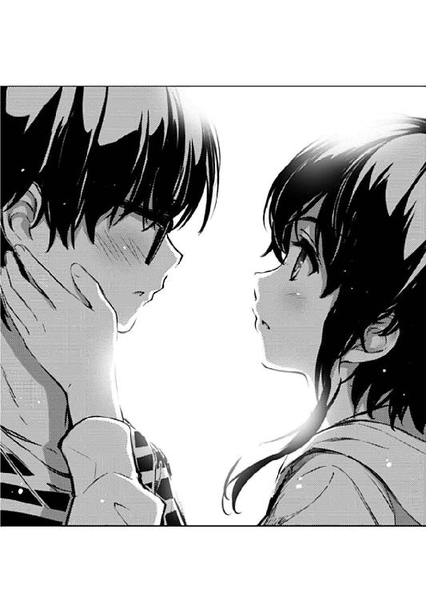
『柏木エリと霞詩子の無駄遣い』
「勝負だね、トモ......」
「みっちゃん......」
なんか、つい最近、どこかで聞いたことのあるお馴染みの宣言とともに......
「あたしがトモのモノになるか、トモがあたしのモノになるか......」
美智留の手が、俺の頰に触れた。
「どっちが押し倒すか、勝負だよ？」
第六章 同じレーベルだとネタの貸し借りがしやすくていいよね
「オタっ君ばいばい～」
「おお、ばいばい......」
金曜の午後......
今日の最後の授業とホームルームが終わり、誰もが次の活動場所......部室だったりファーストフード店だったり等身大シーツと抱き枕カバーが出迎えてくれる暗く締め切ったままの自室だったりへと向かう三時過ぎ。
そんな、大抵の生徒たちにとっては、一週間でもっとも心浮き立つはずのその時間帯に、俺は気力を失ったように、机に突っ伏したまま皆が帰るのをぼんやりと眺めていた。
「倫也、また来週な～」
「ああ、さいなら」
外は見事なまでの秋晴れ。
開けっ放しの窓からは、ちょっと涼しめの爽やかな風が吹き込む。
そんな、大抵の日本人にとっては、一年のうちでも相当に快適な日に、やっぱり俺は全然やる気のない表情でため息をついた。
あ、ちなみに今帰りの挨拶して消えてった男子クラスメイトＡだけど、今さら覚えてる奴がどれだけいるかは知らないけど上郷喜彦だったぞ。
「それじゃ安芸くん、さよなら」
「ああ、じゃあな......」
そんなふうに俺が、まだ夕方前にもかかわらず黄昏れているのには、まぁ、それ相応の訳がある。
その訳とは......
「ってちょっと待て加藤」
「ん？」
などと、脳内であと五分ほどモノローグをかまそうとした矢先、さっさと教室を出て行こうとする女子クラスメイトＢ......ではなく加藤を呼び止めた。
「お前、なんでそんな自然にフェードアウトするんだよ？」
「だって授業終わったし、ずっと教室にいてもやることないよね？」
「いや、そういう意味じゃなくてな......」
なんていうか、そろそろメインヒロインの自覚を持って欲しいところなんだけど。
この、内から外からほとばしるような自己顕示欲の薄さは、いつか覚醒することがあるのだろうか。
......いや、そんなことよりも。
「今日、金曜だろ？」
「金曜だね」
「いや、だから......サークルの日だろ？」
そう、いつもなら、俺の方から強引に加藤を拉致り視聴覚室へと連れ込み内側から鍵を掛けて下卑た笑いを浮かべる金曜日。
いや笑顔の表現については他のサークルメンバーがそう言ってるだけだけど。
まぁ、それはともかく、いつもみたいにさっさと誘わなかった俺も悪いけど、毎週同じパターン繰り返してんだからせめて声くらいは掛けてくれても......
「あれ、でも今日って自主活動でしょ？」
「え、噓？ 俺そんなこと言ってないよ？」
「わたし、そう聞いたけど」
「誰に？」
「えっと、安芸くん以外の誰か？」
「それって疑問形になるほど候補がたくさんいるとは思えないんだけど？」
「なんか澤村さんも霞ヶ丘先輩も忙しいみたい。てっきり安芸くんのところにも話が行ってると思ったんだけど」
「そ、そう......？」
今初めて聞いた......
わかりやすいサークル瓦解の法則 その７
〝代表にだけ連絡がない〟
「そんなわけで改めて、それじゃあね安芸くん」
「い、いや加藤ちょっと待って⁉」
一瞬頭の中に浮かんだ嫌な法則性を必死に振り払いながら、俺は加藤に追いすがるように一緒に廊下に出る。
「なぁ、今からちょっと豆食いに行かないか？」
「......それって普通の人には喫茶店への誘いに聞こえないよ？」
「いいじゃん行こうぜ？ なんならエビフライ頼んでもいいし」
「何が『なんなら』なのかよくわからないんだけど」
自分でもわかっているし、気分良くないし、情けないんだけど......今の俺は、嫌な感じでしつこい。
さっきまで完全無気力で過ごしてたくせに、誰にも近寄ろうとしなかったくせに、ずっと一人でいたいと思っていたくせに。
「な、いいだろ加藤？」
それでも、相手の方から離れて行こうとすると、その寂しさに押し潰されそうになる。
「ごめん、わたし今日はもう別の用事入れちゃったんだ」
「え......」
けれど、そんな俺の子供じみたワガママも、今日の加藤には通用しなかった。
......いや、今日の俺だから通用しなかったのかもしれない。
だって、いつもの俺なら加藤〝ごとき〟、どんな時でも押し切れるという絶対的な自信があった。
......いや、それっていつもの俺の方が何倍も迷惑なのかもしれないけど。
「今度埋め合わせするから。さよなら」
「あ......」
いつも通り、ふらっとフラットにフラットな廊下を去っていく加藤を、今日の俺は止められない。
いつもの何倍も止めたいのに、止められない......
※ ※ ※
「ただいま......」
そんなわけで、いつものサークル活動もなく、どこかに寄る気力もない俺は、まだ日が沈むずいぶん前に、等身大シーツと抱き枕カバーが出迎えてくれる暗く締め切ったままの自室へと帰り着く。
いや、シーツや枕カバーは居候に片付けられてる上に、部屋の中はちゃんと明るいけど。
で、そんないつも以上に普通っぽい部屋の中、俺は誰に遠慮することも、誰を恐れることもなく、黙々と私服に着替える。
そう、もう今は、この部屋で、誰を気にすることもない。
一昨日の、あの言い争い以来、俺と美智留は、お互い別の部屋で過ごしてる。
いや別に同棲解消とか痴話喧嘩とかそういう類のものじゃなくて。
ただ、それでもちょっと喧嘩っぽかったし、同居気味だった生活パターンがなくなってしまったのは事実だ。
美智留は、学校から帰ったら客間に籠もるようになり、二階へは決して上がってこなくなった。
風呂も飯も、きっちり俺とは時間帯を分けて、ほとんど顔を合わせない。
たまに洗面所とかで遭遇したときも、『お、おう』『ん......』くらいのやり取りを交わすだけ。
そしてなにより、ギターの音色が聞こえてこない。
ウチの親に迷惑を掛けるわけにはいかないと思っているのか、それ以外の理由なのかわからないけど。
っていうか、なんだよあいつ、やろうと思えば普通に居候らしい態度取れるんじゃん。
今までどんだけ無駄に遠慮してなかったんだよ。
そんなわけで、こうして俺は、めでたく自分の部屋での自由を取り戻した。
もはや誰にも遠慮することなく好き放題やれる。
溜まったアニメを見ることも、積みゲーをプレイすることも、未読のコミックを読むことも......そしてなんと、すでに以前消化したそれらの作品をもう一度見返すことだって思いのままだ。
いやいやいや、そんな計算し尽くされた現実逃避に思いを馳せるのはやめろ。
それより何より、今まで美智留のせいでなかなか着手できなかったスクリプト作業を飛躍的に進めることができるじゃないか。
やっと本腰据えて、ゲームを作ることができるじゃないか。
「ふぅ～」
そんな、全ての自由を取り戻した部屋の中で......
俺は、大きくため息をつくと、ＰＣを立ち上げるでもなく、ベッドに寝転がる。
何しろ、ここもようやく取り返した聖域だ。
ここ数日ほど、ずっと夜中の三時頃まで占拠されてて、ここに寝転がれるのは朝起きるまでのほんの数時間だった。
けれど今は、真っ昼間からこうして独占することができる。
昼寝だって、うたた寝だって、二度寝だって思いのままだ。
「ん......」
......だから今は、その幸せを享受する。
最強のゲームの完成形が目の前にあるのに、それを完成させようとしない。
最強のスタッフが目の前にいるのに、彼女たちを動かそうとしない。
夢が、目の前に見えているのに、それを摑もうとしない。
※ ※ ※
「............」
「......さん」
「......すぅ」
「加藤さん」
「ふぇっ？ あ、あれ......今、何時？」
「えっと、三時をちょっと回ったかな？」
「ごめん澤村さん、教えてもらってる方が寝ちゃうなんて」
「徹夜慣れしてないんだからしょうがないよ。それにもう何時間ぶっ続けで......」
「あ、霞ヶ丘先輩からメール来てる」
「......あの女もよくもまぁこんな遅くまで付き合うわね」
「ええと......やっぱり前のシーンの背景は『（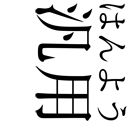）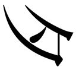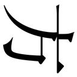』だって」
「そう、それじゃこっちの背景リストの......ほら、このファイル名ね」
「わかった......えっと、ここに入れればいいのかな？」
「そうだけど」
「さて、これで残るは最後の別れのシーンかぁ」
「......ここの背景は『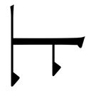』だから」
「ありがと、澤村さん」
「別に......」
「............」
「ね、加藤さん」
「ん～？」
「どうしてこんなこと？」
「だってスケジュール押し気味だし」
「そういう胃の痛くなる現実の話じゃなくて、どうしてあなたがって意味」
「えっと、それはほら、わたしもちょっとくらいはお祭りに参加してみたくなったっていうか......みんな楽しそうだし」
「裏では血反吐吐いてるけどね」
「あはは、そこまで頑張るのは無理だけど、みんなの輪の、ほんのちょっと外側くらいにはいたいかなって」
「加藤さん......」
「あとは......ちょっとしたネタ振りっていうか、意地悪してみたくなったっていうか」
「なにそれ？」
「ね、澤村さん......」
「え？」
「このシーン、やっぱり『』にしようよ」
「どうして？ 普通、こんな場面で清々しい笑顔なんか......」
「見栄、張るよ......女の子なら、さ」
※ ※ ※
「あ......」
目が覚めると、辺りはとっくに真っ暗になっていた。
カーテンを開けたままの窓からは、大きめの月とビルの照明が、部屋の中にかすかな光をもたらしていた。
時計を見ると、四時四五分。
この暗さだから、もちろん午後じゃなくて、午前の。
......てことは俺、一二時間くらい寝こけてたことになるのか。
「ふあぁぁぁ～」
灯りをつけ、頭を振りつつベッドから起き上がる。
思いっきり惰眠を貪ったはずなのに、全然寝れた気がしない。
体は寝る前より疲れ、頭は相変わらずぼうっとして。
......そして、そんなヘタれた俺の原因となった嫌な記憶は、ちっとも薄れてはくれず。
『勝負だね、トモ......』
あの時の、美智留の表情が、すぐに頭の中に蘇ってくる。
お互い語られなかった言葉が、耳鳴りのように頭の中に響いてくる。
ごめんね、ふざけんな、たのむよ、しょうがないじゃん、いいじゃん、いやだよ、おねがいだよ、なんでわかってくんないの......
負けたら終わり。勝ったら虚しすぎる。
そんな、どちらかのチームが活動不能になるまでの消耗戦にして殲滅戦。
本当に、どうしてくれるんだよ......
なんてはた迷惑な家出娘で、なんて魅力的な作曲家なんだよ。
あいつが家出してこなければ、俺にギターを聴かせなければ。
そしたら俺は、今ごろはあいつの夢が壊れかけているのを知らず、今よりも少しハードルの低い自分の夢を追い求めていたんだろうか......
「っ......」
倒したくない敵、負けたくない自分。
そして、このまま勝ってしまっていいのかわからない、味方。
どうしたらいいのか、どうしたいのか。
......やっぱり、自分一人じゃ結論は出ない。
誰かに話を聞いてもらわなくちゃ、一緒に悩んでもらわなくちゃ、ここから先には進めない。
でも、誰に......？
一．初めて憧れた、長い間断絶してた、けれど離れることはできなかった幼なじみ
二．いつも自分を守ってくれた、甘やかしてくれた、優しく叱ってくれた先輩
三．同じクラスの友達
「う～む......」
何かこう、さらっと並べてみると際立つな......
せっかくここまで思い切り深刻に思い悩んでたのに色々と台無しというか。
だから、うん。
「......とりあえず、加藤だな」
気軽に身軽にお手軽に、俺は台無し女こと三番のクラスメイトＢを選ぶ。
全然当事者じゃない、まるで利害が絡まない、さっぱり本音を隠さない。
しかも昨日振られたばかりだし、いい感じで断られ慣れてる。
どんだけすげなくされても『よし明日だ明日』と切り替えられる。
ついでに......近づけば近づくほど、安心できる。
「えっと、あいつのアドレスは......」
もしかしたら、あいつのことだから、こっちが本気で悩んでいても、あっさりスルーしてしまうかもしれない。
そん時は正座をさせて説教だ。
俺がどんだけ真剣で、深刻で、本気なのか、何時間も休憩なしで叩き込んでやろう。
たとえそれで問題が解決しなくても、俺のストレス解消にはなるだろう。
「あれ？」
などと意気込んでスマホの画面を開いたら......
その当の生贄......いや人身御供......いや相談相手から、メールが届いていた。
着信時間はほんの数分前の午前四時三○分。
おい、こんな時間にメールとか、着信音で起きたらどうするんだ。なんて非常識な奴だ。
※ ※ ※
【誠司】「なぁ、巡璃」
【巡璃】「ん～？」
【誠司】「本当にいいのか？ その、俺......」
【巡璃】「誠司くん......」
【誠司】「行ってもいいのか？ あいつの......瑠璃のところに、あいつの〝時〟に」
【誠司】「行って、戦って......そして、この〝時〟から逸れてしまっても、いいのか？」
【巡璃】「............」
【誠司】「巡璃、俺は......」
【巡璃】「本音を言うとね、わたし、あなたのそういうところにはウンザリだよ？」
【誠司】「うわごめんなさいごめんなさい！」
【巡璃】「なんでも勝手に決めてきて。でも結局曲げなくて。あと全然言い訳しなくて」
【巡璃】「でもね、でも......」
【巡璃】「わたしは、そんなふうに、自分の信じた道を暴走するあなたが、残念ながら大好きみたいなんだよね～」
【誠司】「巡璃......？」
「加藤......？」
加藤から届いたのは『ＰＣのメール確認して』というサブジェクトの空メールだった。
で、ＰＣを立ち上げてメールを確認すると、今度は一行のＵＲＬだけ。
続いてそのＵＲＬをクリックすると、今度はファイルのダウンロードが始まって。
ダウンロードファイルを解凍すると、そこに入っていたのはスクリプトの実行環境。
フォルダ名は『blessing software』。
それは、俺たちのゲームの、新しい試作品だった。
つまり、このスクリプトを組んだのって......
「まさか、あいつ......」
その瞬間、俺の中でほんの少しだけ引っかかっていた謎が、解けたような気がした。
先週、皆が俺の家から帰ってから、見つからなくなっていた一冊の本。
それは、俺が加藤に『もう読破した』と吹聴してたスクリプトの教本の上巻で。
「......借りパクすんな馬鹿」
言ってくれれば上下巻まとめて布教してやったのに。
【巡璃】「あなたはさ......結局、わたしが何を言おうと、自分の決意を曲げたりしない。ううん、わたしだけじゃなく、誰がなんて言おうと、ね？」
【巡璃】「だからね、そんなとき、わたしはさ、こう思うことにしたんだ」
【巡璃】「あなたは、もしかしたらわたしのいないところに行ってしまうかもしれない」
【巡璃】「それは、とても哀しいことだけど」
【巡璃】「でも、わたしは、あなたがあなたらしくいられることが、こんなにも嬉しい」
【巡璃】「そして、もしもあなたが選んだ世界にわたしがいれば、きっとそれが、わたしにとっての一番の幸せ」
【巡璃】「だから後は祈るだけ」
【巡璃】「その世界に、わたしがいられる未来を、ね？」
最後に、笑顔で、最高の笑顔で。
巡璃は、『ばいばい』と手を振った。
「っ......」
これは、まさかのクライマックス直前。
最終章の一つ前、巡璃と誠司の別れのシーン。
ぶっちゃけてしまえば、巡璃ルートと瑠璃ルートの分岐前の、この作品でもっとも盛り上がるシーンの一つ。
この時点では、巡璃は自分の中に瑠璃が眠っていることも知らなくて、消えてしまうかもしれないのは誠司じゃなくて自分だと知らないままとか、そんな設定のアヤまでもが複雑に絡み合った、屈指のクライマックスだ。
さすが詩羽先輩。無音のテキスト表示だけなのに、畳みかける情感豊かな台詞に震えが止まらない。
そして、さすが英梨々。巡璃の憂いのない満面の笑顔がとんでもなく眩しくて、床を転げ回るしかない。
ここにあいつの......いや、感動的なＢＧＭとか入ったら、俺、号泣する自信ある。
けれど今、俺が泣きそうになっている一番の理由は、それらの物語からの要素じゃなくて......
「加藤......」
現実の、俺たちの制作現場のシチュエーションの方だった。
だって、加藤だぞ？
俺に強引に引きずり込まれただけの、単に暇だからサークルに参加しただけの、いつもフラットにオタクと向き合っていたはずの、あの加藤だぞ？
そんな、いつもいるくせに幽霊部員扱いされるあいつが、たったワンシーンとは言え、こうしてゲームを作り上げた。
どう考えても一生懸命のそれ以上頑張らないと無理な所業を、最後までやり遂げた。
「あ......」
思わずスマホを手にして、そして改めて今の時間を思い出し躊躇する。
今、電話してもいいだろうか？
ついさっきまで起きてたんだよな？
それとも今は、力尽きて眠っているだろうか？
でも、すぐに感想言いたい、話したい。
加藤の声、聞きたい。
「......あれ？」
......とか思ってたら、この先のシーンは明らかに加藤の声だった。
音声はなかったけど、絶対に加藤の台詞だった。
【巡璃】「それはそうとさ誠司くん、あれはないんじゃないかなぁ？」
【誠司】「あれって？」
【巡璃】「ほらあれだよあれ、幼なじみのイトコ同士が惹かれあう瞬間のエピソード」
【誠司】「え......？」
【巡璃】「田舎で親戚が集まったときに、女の子が山で迷子になって、日が暮れそうになって、それをイトコの男の子が探し出して、最後はおんぶして山を下りて......」
【誠司】「あ......っ」
「あ......っ」
それは、思い起こせば七月の上旬頃。
イトコの圭一君と仲良さそうだった加藤に、イトコ同士の恋愛の可能性と危険性を説いた、あくまでもフィクション〝だったはず〟のたとえ話。
さらに思い起こせばつい最近。
どこかで、まるっきり類似のエピソードが歴史上の事実として暴露されたような。
そう、他ならぬ我がイトコ、美智留の口から......
【巡璃】「結局のところ、あれってあなたの実体験だったんだね」
【誠司】「い、いや、それは......」
【巡璃】「つまり誠司くん、子供の頃にイトコの彼女と惹かれあって、久しぶりの再会と思いがけない同居でその時の気持ちが一気に燃え上がっちゃってるって自分で認めるってことだよね？」
【誠司】「うわああああああああ～～～っっっ」
「うわああああああああ～～～っっっ」
あのときのブーメラン、本当に返ってきた～！
※ ※ ※
「誠に申し訳ございませんっ！」
「......いい加減、頭あげたら？」
土曜の朝七時ちょい過ぎ。
こんな早朝でも余裕でやっている上に、やたらと年配客で賑わっているいつもの喫茶店。
コーヒーにサービスでついてきたトーストとゆで卵に加え、小倉トッピングとエビフライの追加オーダーがテーブルに所狭しと並ぶ中、俺は加藤に深々と頭を下げ、心の底から許しを請うていた。
本当は反省の深さを示すためにデニッシュのソフトクリームトッピングも頼もうかと思っていたのだが、それは彼女に慌てて止められた。
あ、もちろん豆はデフォな。
「そもそも、あれは霞ヶ丘先輩の書いたシナリオ通りだし、わたしはただ、絵とテキストを組み合わせただけだし」
「いやストーリー的には前後の脈絡まるでないよね最後のシーン？ 明らかに恣意的に追加されてるよね⁉」
「さあ、何のことかな？」
あの後、夜が明けるのを待って、おそるおそるメールしてみたら、加藤はその一○分後に俺の家の前にやってきた。
どうやら昨夜は英梨々の家でミニ合宿だったらしい。
なんか俺の知らない間にずいぶん仲良くなったなこの二人。
これで加藤は『クラスメイトＢ』から『英梨々の友達Ａ』へと堂々の昇格......いや下がってるそれ格下がってるから！
......って、いや、今本当に言いたいのはそういうことじゃなくて......
「ありがとうな」
「だから、何のこと......って、さすがにそれはわざとらしいか」
加藤のとぼけた声に、ほんの少し照れが混じっているような気がして、俺はゆっくりと顔を上げ、相手の表情を見つめた。
......うん、声音どおりの顔してる。
「にしてもまんまと騙された。昨日なんかさっさと帰っちまうし」
「別に騙した訳じゃないよ？ 忙しくてサークル活動どころじゃなかったのは本当だし」
「この......」
と、俺は、加藤唯一の萌え記号（しかも後付け）であるポニーを引っ張ることで感謝とツッコミの両方の意を表そうと......
「何してるの？」
「いや、ちょっと......」
思ったんだけど、あまりに不自然な挙動だったせいか、加藤に不穏な視線で警戒されたからやめた。
やっぱり、額を『こいつぅ』的に指でつついたり、髪の毛を『このぉ』的に手のひらでわしゃわしゃしたりする方が自然なのか？
いや、でもそれってリア充かハーレム系主人公でしか通用しない手法だよな。
※ ※ ※
「そっかぁ、お互い大変なんだね～」
「まぁ、あっちの場合は自業自得とも言えるけどな」
「こっち側についてもその要素が強いと思うけど？」
「え～」
朝食が済み、テーブルの上の皿がほとんど片付けられ、デザートにデニッシュのソフトクリームトッピングを頼もうとしてまた止められて。
そんな穏やかなひととき、滑らかさを取り戻した俺の口は、今までの鬱憤を晴らすかのように次から次へと言葉を吐き出していた。
「それでさぁ、どうするの安芸くん？」
「さぁ、どうしようか？」
「どのみち、ゲーム作りはやめないんだよね？」
「やめる気はないけど、今のところ、美智留の自爆テロを避ける手段もないんだよな～」
それも、あまり前向きじゃない、愚痴と言われる類のネガティブな言葉の洪水を。
徹夜明けの加藤は、そんな俺のつまんない繰り言を、まるでこっちに気を使うことなく、あくび混じりで聞き流し。
だから寝過ぎて元気いっぱいの俺も、遠慮せず何度も加藤を叩き起こし、また同じ話を最初から繰り返す。
「それでもさぁ、氷堂さんをあきらめる気はないってことだよねぇ？」
「お前らはあいつの曲を聴いてないからそういうことが言えるんだよ！」
「だから聴かせてよ～。安芸くんがすっごい煽るから、ずっと楽しみにしてるんだよ？」
「......実はここに、美智留に内緒で録音した音源があってだな」
「え～、ちょっと、そゆこと早く言ってよ～」
だって、そこまでしても、こいつと話したいから。
何の解決にならなくても、こうしてダラダラと話すことが、いつか必ず俺のエネルギーになるって信じてるから。
「その前に、やっぱ追加オーダー頼んでいい？」
......だってもう、こんなに腹が減ってきた。
※ ※ ※
「ん～」
「どうだ？」
「なんか、懐かしい感じがするね、この曲」
「だろ？ だろ！ 泣けてくるよな⁉」
「ふあぁぁぁ～......うん、そうだね～」
「......紛らわしいタイミングであくびすんな」
イヤフォンから流れる美智留のギターの音色を片耳ずつで共有しながら、俺たちはまだ、午前のひとときをぼんやりと過ごしてた。
「なるほどなぁ......うん、この曲があのシーンに入るといいよね～」
「加藤に言われるまでもなく、最初から俺はそう考えてたんだよ！」
「ま、安芸くんがそう思うんならそうなんじゃない？」
「加藤の中でもそうだよなそうなんだよな⁉」
「どうせわたしが何を言ったところで、自分がこうと決めたら人の話なんか聞かないよね？」
「そっちだって、俺がこうと決めたらいっつもほったらかしじゃないか」
「一度スイッチの入った安芸くんを止めるとか、そんな無駄に体力使う真似なんかできないよめんどくさい」
「お前......言うようになったなぁ」
「ふふっ」
「......あれ？」
いつも通り、完全にフラットで、微妙に素っ気なくて、適当に投げやりなその立ち振る舞いは、安定の通常版（特典なし）のはずなのに......？
「ん？ なに？」
でもなんか、ほんの少し優しげに、気持ち柔らかめに、ほのかにくすっと笑う表情が......ちょっとやばい。
「今なら俺、少しだけなら萌えられるかもしれない......加藤に」
「わ～よかったね～......とでも言えばいいのかな？」
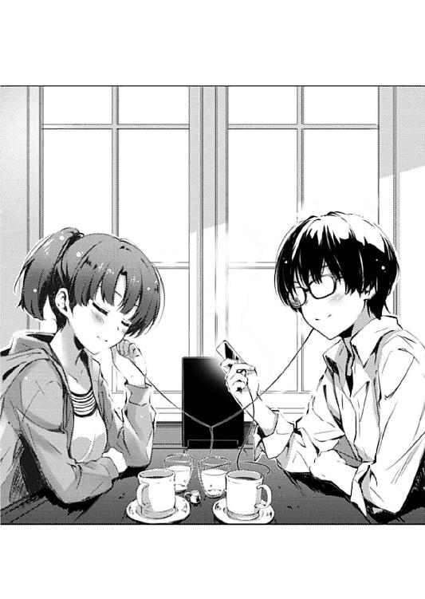
「違うっ！ そこは思いっきり頰を染めて『な、なに言ってんのよっ！ バッカじゃないのっ？』だ！」
「え～そんな澤村さんみたいな熱いリアクション無理だよ」
「お前、不用意に敵を増やすなよ」
前に俺、加藤のことを『土下座して頼めばやらせてくれそうな女の子』と評したことがあった。
......まぁ、友達に対してその評価を下すことの人間的是非は今は置いておくとして、そんな無防備さや、それでいてこっちをその気にさせない反応の薄さが、こいつのメインヒロイン化にとって高い障壁になっていると思っていた。
けれどそこに、親戚バイアスによる真の無防備さを備えた、その気もないのになんとなくやっちゃいそうな、まるで実写版ギャルゲーヒロインのような美智留がやってきた。
そのせいというかおかげというか、今になって加藤の二次元的魅力が少しわかってきたような気がする。
「だいたい、安芸くんの言い方がメタ過ぎてちっとも褒められてる気がしないんだよ」
「え～、そうかぁ？」
「あとほんのちょっとだけさり気なく、ほんのちょっとだけカッコいい台詞を言った方が印象いいと思うんだけどなぁ」
「それって具体的には？」
「ほら、霞ヶ丘先輩の書くイケメン主人公みたいに」
「え～やだよリアルであんな恥ずかしいの」
「不用意に敵を増やさない方がいいよ？」
そう、『土下座して頼めばやらせてくれそうな』ってのは、そこに土下座をして頼むという、ある程度の障壁があるんだ。
『ちょっと頑張ればなんとかなりそう』ってのは、『ちょっと頑張らなくちゃ振り向いてくれない』ってことなんだ。
「けどさぁ、安芸くんって、あの二人には時々恥ずかしい台詞言うよね？」
「い、いや、そりゃ......だって、あの二人と加藤ごときを比べるのは失礼じゃないか？」
「それはそうなんだけどさ」
「それはそうなんだ......」
そこにはなんとなくでは済まされない、ほんの少しの愛や恋のこもった、ちょい萌えやちょいイチャがあって。
過剰じゃないけどなくもない、心拍数が五パーセントくらい跳ね上がる、そんな安心感のあるときめきが加藤らしくて、俺は......
「さてと、このお店にもだいぶ長居したね。そろそろ......」
「じゃあ次はランチだな！ なに頼む？ 俺としてはコロッケがお薦めなんだけど」
「......せめて別のお店に移動しない？」
なんて、こんな身も蓋もないこと、口だけでなく頭の中でも言ってるって知ったら、こいつはどんな反応するんだろう。
いや、怒ったところでたかが知れてるところが、さらに好きなんだけどな。
※ ※ ※
「え......」
で、その夜。
ウチの客間で退屈そうにゴロ寝していた美智留を、久しぶりに俺の部屋に招いた。
つい先日までの、過剰なまでの馴れ馴れしさが影を潜め、少し居心地悪そうにしてる美智留に、俺はその決心を告げた。
「ああ、俺、美智留のマネージャー、やるよ」
ついさっきまで加藤と一緒に過ごし、色んなこと話して、何度も曲を聴き返して......そうして出た結論が、これだった。
「マ、マジで⁉」
「ああ、おじさんとも話したよ......美智留のことよろしくって言ってた」
もちろん、迷いもあった。
今まで積み上げてきたものを全て失ってしまうかもしれないって恐怖もあった。
それでも俺たちは、美智留の奏でる旋律の中に見つけた、ほんの少しの可能性に賭けてみることにしたんだ。
「だから、そろそろ家に帰れ......大丈夫、俺は約束は絶対に破らない」
「トモ......っ！」
美智留の声のトーンが、ほんの少しとは言えないくらい跳ね上がる。
「その代わり、やるとなったら容赦はしないぞ？ お前らがブレイクするまでステージに立たせまくるからな？」
「あ、ああっ！ 絶対に成功してみせるよ！」
そして、まるで憑き物が取れたかのように、久々に晴れ晴れとした笑顔を見せる。
身内びいきかもしれないけど、なんだかんだで、こいつの邪気のない笑顔は掛け値なしに魅力的だと思う。
「メジャーになってみせるよ！ そんでトモには絶対に不自由な思いさせないから！ 特に女のコ方面！ ほら、あたしたちのファンやバンド志望のコたちを『プロデューサーに紹介してあげるから』って言葉巧みにホテルの部屋に連れてってあげたりとか！」
「お前やっぱりロックに対して......いや、もういい」
......まぁ、その底辺女子校生っぽい言動さえなければもっと良かったんだけど。
「そんなわけで美智留、まずは他のメンバーのコたちにも会いたいんだけど......」
「ああ、紹介する、紹介するよ！ みんな結構可愛いし、それにフリーだし。あ、一人だけ彼氏持ちいるけど、トモがどうしてもそのコがいいってんなら別れさせるし！」
「嫌な政治的配慮するな！ 俺が言ってんのは普通の顔合わせだよ！」
「別に遠慮とかしなくていいのに」
どうやら俺のバンドマネージャーとしての最初の仕事は、こいつの言論統制だな。
このままデビューさせたりしたら、すぐにブログやツイッターで炎上しそうだ。
「これから一緒に活動していくんだし、ちゃんとお互いのことを知っておかないとな。もちろん性的じゃない意味で」
「そんなに本気で取り組んでくれるんだ......？」
「美智留よ......俺が勉強以外で手を抜いてるのを見たことあるか？」
「っ......」
ベッドの上で呆然と佇む美智留を置き去りにして......なんて事後みたいな状況説明はともかく、俺は立ち上がる。
「話はそれだけだ。俺、風呂に入ってくるから」
「あ......背中流そうか？」
「いいから！ お前はギターの練習でもしてろ！」
本当にもう、色んな意味でどこがボーダーなのか全然わからんな、こいつは。
だって......
「ごめんね......」
「やめろって、そういうの」
だって、こんなにもらしくない態度まで取りやがる。
「勝手なこと言ってごめん。ワガママばっかでごめん......トモの夢、潰すかもしれなくて、ごめん」
「覚悟の上で喧嘩売ってきたんだろ？ なら、もういいよ」
「トモ......っ」
声は、トーンだけでなく発音までおかしくなってきて。
そして、頭を深々とベッドにこすりつける。
馬鹿かお前。女が土下座とかないだろ。
それって普通、こっちが頼み込むときのポーズだぞ？
そんなしおらしい表情とか見せられると、色々と辛いからやめてくれよ。
「おやすみ、美智留」
ドアを閉じ、やっとあいつの視線から解放された俺は、ガチガチに固めていた表情を緩め、膝から崩れ落ちる。
「は、はは......」
これでもう、後には引けなくなった。
だから、心の中でだけ、本音を漏らす。
なぁ、美智留よ。
こっちこそ、ごめんな。
俺は約束は破らない。それは約束する。
けれど覚悟しろ。
おまえをオタクにしてやるけど、俺はリア充にならない──
第七章 ちょ⁉ 最終章で新キャラ三人とか！（深崎）
「澤村さん、早く早く。信号変わっちゃうよ？」
「待ってよ加藤さん......少し休ませて」
「って、まだ五分も歩いてないのに」
「ちょっと人に酔った。だいたいなんなのこの街。人が多いわうるさいわ濃いわでもうたくさん」
「へぇ、澤村さんのことだから安芸くんみたいに毎週通ってるかと思ったけど」
「あたし普段は外出なんかしないもん。基本、通販以外で買い物なんかしないし」
「相変わらず学校のイメージと全然違う引きこもりっぷりだね」
「そういえば風の噂で聞いたことあるわ。世界最大の通販女子eririn.com、通称konoama......」
「......次にその名を口にしたら弁護士を雇うわよ霞ヶ丘詩羽。もちろん通販で」
※ ※ ※
人通りが激しく騒がしい外からひとたび建物の中に入ると、そこは静まりかえっていた。
とはいえ、どうせそれも今だけで、ここも数時間後には耳をつんざくほどの大音量に包まれることになる。
それは街の音ではないけれど、人々のパワーとエネルギーが奏でる音と言ってしまえば同じことなのかもしれない。
「今日は全部で六組出演予定で、お前たちの出番は一番最初な」
「てことは、あたしたちは前座みたいなもんってことだね」
そんな、とある街のビルの地下。
入り口の看板に『CLUB G‐MINE』と掲げられた小さなライブハウス。
「みたいじゃなくて紛れもない前座だよ。それも急遽出られなくなったバンドの代役として、主催者に頼んで無理やりねじ込んでもらった」
そして、俺がマネージャーを務めることになった美智留たちのバンド『icy tail』の初舞台の場所。
そう、あと数時間で幕が開く。
美智留の、仲間たちの、初めてのライブステージの。
「何しろお前ら『icy tail』は、初ライブで知名度もない、実績もない、ファンもいない、だからチケットにもチラシにもＨＰにも載ってない」
「つまり、あたしら目当てで来る客はいないってことか......」
「けれど、そんな条件を吞んだからこそ、こうして最速デビューできたんだ」
そんな小さなライブハウスの、さらに小さな楽屋には、今は俺と美智留の二人しかいなかった。
他のメンバーは、今はステージ上でリハーサルのためのセッティング中だ。
「まぁ、まさか一週間でライブに漕ぎ着けるとは思ってなかったよ。さすがはあたしのイトコだね、トモ」
「やると言った以上は全力でやる。お前らが成功するための最短距離を駆け抜ける。今回のライブは、その第一歩だ」
『icy tail』のマネージャーを引き受けてから一週間、俺は全力で動いた。
まずは、もともと声を掛けてくれていたライブハウスと交渉したところ、色々と準備を含めて、デビューまで二か月はかかるという話だった。
けれど俺は、そのハコの経営者の『大きく育てたい』という親心に感謝しつつも、もっと速く......それこそ最速で駆け上がる道を選んだ。
自分の持てる全ての人脈を使って、それ以外の色々な〝力〟も駆使して、全力で各方面に働きかけて、今日のこの日と、このイベントと、この『CLUB G‐MINE』での公演を摑み取った。
そう、こいつらが、この日に、ここで演る必要があったから......
「なんか、人が変わったみたいだね、トモ」
「怖気づいたか？ 今ならまだ降りることもできるぞ？ 何しろお前たちが出るなんて誰も知らないんだからな」
挑発するように、ちょっと厳しめの言葉を美智留に投げかける。
けれどそれは、噓でも誇張でもなく、単なる現実だ。
もし今こいつがここから逃げ出しても、ちょっと開演時間が遅れるだけで、ライブは滞りなく進むだろう。
ただ、そんなことをしたら、もう二度と美智留たちにチャンスは訪れない。
与えられたチャンスをモノにできない奴らは消えていくしかない。
そんなのは、どこの世界でも常識だ。
そうだ、いくら延期してもバグ満載でも借金投げ出して逃げても別会社を立ち上げてしれっと再チャレンジできるなんてギャルゲー業界だけだ。
けれど俺はそんなギャルゲーが好き......話が逸れたので元に戻そう。
俺の、そんな挑発めいた厳しい一言に、けれど美智留は......
「怖気づく？ 誰が」
いつも通り、軽く微笑んで応える。
「知名度なんて、今日伝説を作っちゃえば済む話。実績なんて、これから引っ張りだこになるんだからすぐできる。ファンなんて......来た客が全員なってくれる」
「......その呆れるほどのビッグマウス。さすがは俺のイトコだな」
口だけでなく、こいつの強心臓はさすがだ。
味方にいれば、これほど頼りになる奴はいない。
......巻き込まれる側にいるとたまったもんじゃないけれど。
でも思えば、この呆れるほどの度胸のよさがあったからこそ、こいつは今まで何をやってもその才能を開花させてきたんだろう。
まぁ、あとは、この強さに他のメンバーがついて来られればいいんだけど。
と、噂をした瞬間、楽屋のドアが開き、サイドポニーの女の子が顔を覗かせる。
「そろそろリハ始まるよ？ ミッチー」
......このスタミナのない天才３Ｐシューターみたいなニックネームは、別に美智留がバスケをやめた不良だからって訳じゃなくて、名前をもじった以外に意味はないそうだ。
最初に聞いたとき『よくできてるなぁおい！』と感心したのが馬鹿みたいだ。
「ん、わかった、すぐ行くよトキ」
なお、美智留に声を掛けてきた、ちっこい彼女の方のニックネームも、別に四兄弟の次男だからではなく、単に本名が姫川時乃だからという、とても明確にして単純な理由かららしい。
ついでに、残りのメンバーのニックネームはエチカとランコ。
最初、メンバーをこの順番で紹介された俺は、『なんだよジャ○プ黄金期縛りじゃないのかよ⁉』とかツッコミを入れたけど、美智留にはまるで理解してもらえなかった。
「それじゃトモ、行ってくるね！」
「ああ、頑張ってこい」
「まだ頑張る必要はないよ、リハーサルなんだからさ」
と、やっぱり美智留はいつも通りまるで緊張することなく、呼びに来た時乃......トキも置き去りにして、躍るように楽屋を出て行く。
まぁ、あの様子なら大丈夫か。
と、俺が颯爽と去る美智留の背中を見送っていると......
「ねぇアッキー、ホント大丈夫？」
横からちょっと高めの震え声......いや、緊張でビブラートがかかった声が届く。
ちなみに、この『アッキー』ってのが、俺のこのバンドにおけるニックネームと決まったのは顔合わせ初日のことだった。
いつも美智留が使っている『トモ』って呼び方は、既にメンバーにいる彼女『トキ』と被るからという理由で採用されなかった。
けれどそれは表向きで、本当は高度なガールズコミュニティ的な判断があったと聞くが、それが何を指すのかは誰一人として教えてくれなかった。
「美智留も言っただろ？ まだリハだよ、気軽に行けよ、トキ」
ま、それはともかく、俺は、まだちょっと顔が青ざめてるふうの美智留のバンド仲間に、励ましの意味も含めた声を掛ける。
さっきも言ったけど、彼女の名前は姫川時乃。通称トキ。
美智留と同じくギター担当で、美智留が入る前はボーカルもやってたらしい。
サイドポニーで、メンバーの中で一番背が小さくて、今でも『icy tail』のマスコット的存在だ。
「いや心配してるのはリハのことじゃなくてさ」
その身長や見た目に似合ったちょっと高めで早口な声は、俺たちオタクにとってはアニメ声優っぽくて耳に心地いい。
「じゃあなんだよ？ 今まで散々練習してきたんだろ？ もっと自信を持って......」
「いつミッチーに本当のこと話すのよ？」
「......思い出させんなよせっかく忘れかけてたのに」
けれど今、そんな高くて可愛らしい声から発せられた言葉の中身は、せっかく高揚してた俺の精神を瞬間冷却するのに十分の内容だった。
「だってここまで来ちゃったらバレるの時間の問題だよ？」
それはまるで『バンド内不倫が発覚しそうな浮気男と泥棒猫』みたいな会話だったけど、もちろん俺にそんな甲斐性があるわけもなく。
「ま、具体的にはあと一時間もないだろうな」
「頼むよアッキー？ ホント君だけが頼りなんだからね？」
ただ、だからといって大した心配事じゃないという判断も間違いで、俺たちが抱えているのは、下手をするとこのバンドの存亡にも関わる深刻な秘密だった。
「とりあえず、全てはリハが終わってからだ......」
それだけの......一週間近く、ずっと抱えてきた秘密を明かすには、こっちにも覚悟ってものが必要だ。
美智留に、今まで以上に、圧倒的にボコボコにされても心折れないという覚悟がな......
※ ※ ※
「ふう、やっと着いたよ、『CLUB G‐MINE』」
「ここがあの女のライブハウスね......」
「そんな怖い顔しないで霞ヶ丘先輩......って、あれ？ 澤村さんは？」
「ちょっと休憩って、そこのエ○セル○オールに入っていったわよ」
「え～、開演前にみんなで楽屋に顔出すよって言ってたのに」
「私も今から書店巡りしてくるわ。まだ十分に時間あるでしょう？」
「二人とも、もう少し団体行動できるようになりません？」
「......団体行動できてないのはどちらの方かしら加藤さん」
「ん？ 何のことです？」
「だって、勝手に決めてきた......私たちに何の相談もなく」
「え～と、それって......」
「倫理君があのイトコのコのマネージャーになったこと。サークルよりバンドを選んだこと。そして、今日がそのバンドの記念すべき初ライブだということ」
「勝手に決めてきたのは安芸くんですけど......」
「でも、倫理君のその決断を、あなただけが知っていた。あなただけが、倫理君に『いいよ』って言えた」
「あ～、だからそれは、『二人には余計な心配かけたくない』って安芸くんが言ったから......」
「それって、『加藤さんには余計な心配かけ放題でも構わない』って意味にも取れるけど？」
「だってほら、澤村さんや霞ヶ丘先輩だと、作業止めてでも安芸くんのために一生懸命頑張っちゃうじゃないですか？ その点わたしなら元から役に立ってないし」
「その『お互いわかってる感』が気に入らない。引っかかる」
「え～と......」
「......ごめんなさい。単なる独り言。私が今言ったことは忘れて」
「は、はい......」
「それじゃ、開場時間の三○分前には必ず戻るから。ちょっと失礼するわね」
「霞ヶ丘先輩って、もしかして結構めんどくさい？」
「安心して。澤村さんはもっとめんどくさいわよ？ あなたたち最近仲いいようだけど、あまり親しくすると後で地獄を見るかもね」
「......わたしが今言ったことも忘れて欲しいんですけど」
※ ※ ※
「は～い、ＯＫで～す！ お疲れさまでした～」
「ありがとうございました～！」
エンジニアのマイク越しの声が客席の奥から届くと、舞台上の四人の間に、ほっとした空気が流れる。
で、その声を受けて、舞台の上の人々や機材が慌ただしく動き始めた。
「それじゃ次のバンド準備して～」
そう、これにて俺たち『icy tail』のリハーサルは終了。
本当に、驚くほど順調に進行し、何事もなく終わった。
というわけで、舞台袖で彼女たちの演奏を堪能しつつ、いつものようにノスタルジーに浸っていた俺のもとに、次から次へとメンバーのコたちが駆け寄ってくる。
そこに浮かんでいる表情は、まさに今のリハーサルの結果そのままで。
「やったやったやったね！ バッチリ！」
一番最初に舞台袖に出てきて満面の笑みを浮かべたのは、トキこと姫川時乃。
人より時間の感覚が短そうな、小さくて高くて速いリアクションで興奮を爆発させると、そのまま楽屋の方に駆けていく。
もし羽根があったら、一秒間に五〇〇回は羽ばたかせるだろうな、あのコは。
「いけそいけそ、うん、思ったより全然アリだったわ～」
続いて出てきたコも、トキよりは冷静だったけれど、心の底からにじみ出る興奮は隠しきれない様子だった。
『icy tail』ではベースを担当する、エチカこと水原叡智佳。
ショートの髪を揺らし、そばかす顔に笑顔を浮かべ、ウィンクを一つかますと、軽い足取りで楽屋の方へと去っていく。
バンドの中で一番軽くてお調子者で、唯一の彼氏持ちって噂もあるけれど、少なくともその実力は確かだ。
「............うん、ＯＫ」
さらに続くのは、いつも三人の中で一番冷静で無口なこのバンドのリーダー。
その感情を読み取ることはなかなか難しいけれど、それでも、彼女はいつも噓をつかないから、言葉を聞く限りでは満足してるみたいだった。
ドラム担当の、ランコこと森丘藍子。
長い髪をおさげにし、まるで最強キャラのように目を閉じたままの彼女は、今のリハの感触を嚙み締めるように、両手をぎゅっと握って、ゆっくりと通路を通り過ぎる。
そんなふうに、三人三様の女のコたちが俺の前を通り過ぎ、そして......
「よう、お疲れ。完璧だったな」
「だから、まだリハだって言ってるだろ？」
「っ、て～！ 痛ぇよおい！」
そして最後に、俺の差しだした手を全力でぶっ叩くのは、もはや俺にとってはお馴染み過ぎるイトコの居候。
『icy tail』の花形、ボーカル＆ギター、ミッチーこと氷堂美智留。
なんか冷静を装ってるけど、リハでますますテンションが上がったのが見て取れ過ぎるのが笑える。
まぁでも、あからさまにテンション上がるのも仕方ない。
ここ数週間、おじさんとの確執で満足に練習もできないどころか、バンド解散の危機だったんだ。
それがここ一週間で大きく状況が変わり、バンド解禁の上ライブ出場、そしてこうして全員準備万全の態勢で臨むことができた。
......ホント、この後の反動が怖いくらいだ。というか怖すぎる。
けれどこれで、全ての準備が整った。
ここからが本当の戦いだ......美智留のじゃなくて、俺の。
※ ※ ※
「ねぇねぇトモ、今出てったコ、すっごい衣装だったね～」
「そ、そうか？」
俺たちが入ると同時に、次のリハの人たちが出て行き、また身内だけになった楽屋。
すれ違いざま相手のバンドと軽い挨拶を交わしていた美智留は、どうやら向こうのボーカルらしい女のコの姿に興味津々の様子だった。
「だってなんか猫耳みたいなカチューシャつけてたよ？ 服だってピ○クハ○ス系でめっちゃヒラヒラで......まさかあれで歌うつもりなのかなぁ？」
「あ～、うん、どうだろうな～、アリっちゃぁアリじゃないか？ なぁみんな！」
そんな、何も知らない無垢な視線から逃げるように、俺は他の三人の方へと無理やり話を振る。
「わ、わたしは全然おっけ～だと思うよっ！ ひ、人それぞれだもんねっ」
「えっと、そそ、そのと～り。そもそもあたしら、自分のことで精一杯だし～」
「............」
と、振られた三人の方も、ちょっとばかり困ったように視線を泳がせつつ、必死に無難な回答をひねり出すことに終始した。たった一人、ランコを除いて。
......こういうとき無口キャラっていいよなぁ。
「それじゃ......本番前の、最後のミーティング行こうか」
「あ、うん」
けれどそんな、ちょっとした雑談モードに入りかけた場を、俺が引き締める。
本番までまだ少し時間はあるけれど、色々な準備を考えたらもう余裕はない。
※ ※ ※
「......あと、今回の衣装は各自ロッカーの中に用意してあるから、このミーティングが終わったらすぐに着替えてスタンバイしててくれ......ここまでで何か質問はあるか？ ないなら俺からは以上だ」
で、それから五分もかからず、俺の話は終わった。
だいたいは今まで伝えたことのおさらいだったし、メンバーのみんなに関しては今さら事務的なことを確認してる場合なんかじゃないだろう。
「それじゃ最後に......ランコの方から一言あるか？」
「............ミッチー」
「いいの？ ランコ」
「............ん」
不言不動のリーダーは、最後の最後まで実質的なリーダーに丸投げっぽかった。
けれどまぁ、この関係性が『icy tail』の真骨頂なんだろう。
美智留が引っ張り、トキが騒ぎ、エチカが茶化し、ランコが黙る。
そんな四人で、今まで幾多の苦難を乗り越えてきた......多分、きっと。
だから、後はいつも通り。
「じゃあ、みんな手を合わせて」
五人で円陣を組み、中央で全員が右手を重ねる。
まずは美智留、続いてトキ、エチカ、ランコ、そして最後に俺。
「今日が初めてのライブだけど、あたしは全然緊張してないよ？」
ここからは、美智留の大好きな、体育会系精神論だ。
「ちなみにさ、あたしが一番ドキドキしたのって、いつだと思う？」
「えっとえっと、学園祭のときっ？」
「残念、外れ」
「え～、じゃ～なによ～？」
「正解はね、みんなと初めて出会った日」
「............」
「みんなの音に触れて、仲間になりたいって思って、話しかけて......これから何度ステージに上がっても、あんなに緊張することはないだろうなぁって思う」
美智留の静かな声が、みんなの気持ちを解きほぐしていく。
多分、彼女たちの心は今、一年前の学校の音楽室に飛んでいるんだろう。
「そんなわけだから、今日のこの日は、全然特別でもなんでもない。これからたくさんあるステージの、そのうちのたった一つだよ」
そして、その言葉が終わりに近づいたことを察知して、全員が顔を上げる。
みんながみんな、決意に満ちてて、そして十分にリラックスした、理想的なテンションの表情だった。
「だから、みんなも気楽にね......それじゃ行くよ！」
「お～」
最後に、美智留が思いきり手を下げると、みんなの気合の声とともに、円陣が解かれた。
もう、成功は約束されたようなものだ。
知名度も、実績もないバンドだから、お客の反応は読めない。
もしかしたら、どれだけ熱い演奏を聴かせたところで、全然ノってくれないなんてこともあり得る。
それでも彼女たちは今、多分、決して折れない心と、どんな状況でも心から楽しむ精神を身につけることができたんだと思う。
「じゃあ、俺は外に出てるから......着替え終わったらまた呼んでくれ」
だから後は、見守るだけ。
その熱くて、楽しくて、そして......最高に俺好みのステージを。
「トモ！」
「ん？」
楽屋を出ようとしたところで、また美智留に呼び止められる。
「ありがと......本当に、ありがとね......っ」
振り向くと、何をトチ狂ったのか、感極まったようにその瞳は潤み......
そして、その瞳には俺しか映っていなかった。
「ありがとうは全部終わってからにしろ......でないとお前、後悔するぞ？」
照れ隠しもほんの少し含めた憎まれ口っぽい言葉とともに、俺は楽屋の扉を閉めた。
※ ※ ※
「ほらほら二人とも、楽屋こっちだよ？ 早くしないとライブ始まっちゃう」
「......やっぱりあたし行かない」
「もう澤村さんってば、ここまで来て大人げないこと言わないでよ」
「ほっといてよ！ 行かないったら行かないのっ！」
「だから誤解なんだって、安芸くんは......」
「今の澤村さんに何を言っても無駄よ、加藤さん」
「霞ヶ丘先輩......」
「今まで澤村さんは、自分が一番古い幼なじみだということだけが、唯一の、最後の、ほんっとにちっぽけな拠り所だったのよ......その前提が同じ病院で生まれたイトコの出現で全て崩れ去り、しかもそのイトコに彼をあっさり奪われてしまった今、もはやそのアイデンティティを支えるものは何もない......ほんと無様でみっともなくて、まるで落ち武者みたい......ふふっ、ふふふっ......」
「あ～！ 知り合ってたった一年しか経ってないくせに、やたらとありもしない因縁をゴリ押ししてくるヤンデレ黒髪呪い人形が何かわけわかんないこと言ってるみたいだけど全然聞こえないわ～！」
「あ～もうっ、二人とも内輪もめはやめてよ......大丈夫、安芸くんを信じて」
「今までの彼の言動とか見ててどこを信じろと言うのかしら？」
「あいにくだけどそれに関しては霞ヶ丘詩羽の意見に同意しすぎて草生えるわね」
「......あと急に団結するのもやめてよ」
「だって......」
「ねぇ？」
「ほら、そろそろ行くよ？ 安芸くん、氷堂さん、お疲れさま～......」
『トモぉぉぉ～！ あんたを殺してあたしも死んでやる～！』
『うわあああぁぁぁぁぁぁ～！ やめろぉぉぉ～美智留～！』
「うわっ......」
「なに、今の？」
「さぁ？」
※ ※ ※
「トモぉぉぉ～！ あんたを殺してあたしも死んでやる～！」
「うわあああぁぁぁぁぁぁ～！ やめろぉぉぉ～美智留～！」
耳をつんざくような絶叫と、喉が潰れるような絶叫が同時に響き渡る。
前者は美智留の口から、後者は俺の口から。
それは、さっきのミーティングからたった一五分後。
俺たちが、涙と笑顔の絆で結ばれた、ほんのすぐ後のことだった。
......いや、まぁ、こういう事態になることは十分予測できてたんだけどね。
「ミ、ミッチー......」
「あ～、ほら、落ち着いて、ね？」
「............」
そう、美智留以外の四人は。
というわけで、この突然の修羅場にも、美智留のバンド仲間たちは、俺たち二人を遠巻きに眺めながら、それぞれ止めたりなだめたり、あと佇んだりしている。
......こういうとき無口キャラってむかつくな。
「あ、あの～......大丈夫ですか？」
と、その時、楽屋の扉が開き、誰かが顔を覗かせる。
きっとライブハウスの人が怒鳴り声に驚いて様子を見に来てくれたんだろう。
しかしこれは......マズい。
俺の命的には助かったけど、バンド的には致命的な事態だ。
と、扉の方を見たら......
「あ、あれ？ 安芸くん......なんだか話が違うよぅ？」
「......で、改めて伺うけど加藤さん、倫理君の何を信じろと言うのかしら？」
「......ねぇ？」
そこでは、なんかどっかで見た三人が、すっごいフラットだったり冷たかったり怒りに満ちていたりする視線をこっちに向けていた。
しかしこれは......マズい。
バンド的には助かったけど、俺の命的には最悪の展開だ。
「い、いやぁ......皆さんお気になさらず～」
「気になさるわよ！」
両手を振って何事もないかのように振る舞う俺を、英梨々が一言のもとに完全否定してくださった。
「なんなのこの公開騎乗位。しかも正しい意味でのコスチュームプレイ」
そして詩羽先輩の、あまりに的確な情景描写が追い打ちをかける。
......というわけで、ここで今の状況を整理してみよう。
場所は、さっきまでと同じくライブハウスの楽屋。
その部屋の中心に俺と美智留。取り囲むようにトキとエチカとランコ。そして出入り口のところに英梨々と詩羽先輩。
......あ、加藤もいた。
俺は美智留をなだめてて、美智留がものすごく怒ってて、バンド仲間はオロオロしてるだけで、サークル仲間が何を思ってるかは想像したくなくて。
そして俺は仰向けに倒されていて、美智留がその上に馬乗りになって俺の首に手を掛けているという一触即発の状況で。
あ、あと、大したことじゃないけど、美智留はステージ衣装に着替えていた。
「説明しなさいトモ！ なんなのこの衣装！ なんなの今日のライブ⁉」
あ、どうやら本人にとっては、結構大したことであったらしい。
まぁ、なら着る前に気づけよと言いたくもあったけど。
メイド風衣装の短いスカートからのぞく白ニーソからはみ出た絶対領域は、完全に俺の下半身をがっちりホールドしていて、それはもう騎乗位と言われても全然おかしくない。
まぁ、全体重かけて乗っかられてる方にしてみれば、そんな感触を楽しんでる余裕なんてないんだけど。何しろ首まで絞められてるし。
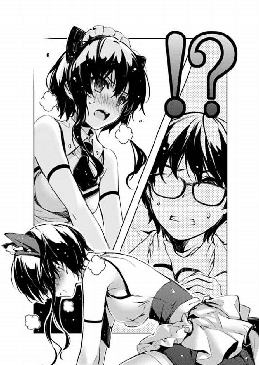
「あ、あの、それで......これは一体？」
とりあえず状況はわかったけれど、未だに原因というか事態が飲み込めていない加藤が、ここにきてやっと原点に立ち返った質問をする。
と、さっきから気まずそうにこの事態の推移を見守っていたバンドの三人が、ようやく我に返り、冷静に今の状況を解説......
「ええっと、それはですね、その......なに？」
「あ～、実は、彼氏が彼女の晴れの舞台に、あろうことか浮気相手を呼んじゃって～」
「............しかも三人も」
「お前ら裏切ったなぁ⁉」
してくれなかった。
※ ※ ※
『ちなみにさ、あたしが一番ドキドキしたのって、いつだと思う？』
『正解はね、みんなと初めて出会った日』
それは、ちょうど一年ほど前の、高一の秋のこと。
将来を嘱望されたバスケットの道も〝なんとなく〟諦め、日々を無為に過ごしていた一人の不良っぽい少女。
彼女がいつも通り、放課後の教室で居眠りから目覚め、校舎を出ようとしたとき......
その、なんだか懐かしい旋律は、音楽室の窓から聞こえてきた。
『ねぇねぇ、今の曲、なに？』
『へ～、そうなんだぁ。全然聞いたことなかったけど、すっごくいい曲だね！』
『あ、やめないで！ ね、お願い......もう一度、弾いてみてくれないかな？』
音楽室には三人の同級生がいて、それぞれがとても上手に、そして楽しそうに楽器を弾いていて。
さらに、彼女たちの弾く曲は、どれもこれも、激しく少女の琴線に触れた。
その日から、名なしの放課後ガールズバンドのメンバーは四人となり......
さらにその数日後、めきめきと上達する新メンバーの名前にちなんで、『icy tail』というバンド名がついた。
それからも、四人は毎日のように放課後の音楽室で遊び、いくつもの音を奏でた。
そのうち新参者の少女は、皆が用意してくる既存の曲では飽き足らなくなり、今まで弾いた曲たちの感性に合わせて、自分で曲を作るようになった。
それらの曲は、メンバーの絶賛を浴び、だから調子に乗って学園祭で披露すると、今度は同級生たちの絶賛を浴び。
そして彼女たち『icy tail』は、学園祭の一週間後、女子校の放課後バンドを卒業した。
新進気鋭のインディーズバンドへと、自らを進化させるために......
※ ※ ※
......さて、そんな感動的なエピソードの陰に、もう一つの物語があった。
それは、少女の物語と同じ時間、同じ場所で紡がれたもの。
そして、少女の視点ではなく、少女に注がれる視点から描かれたもの。
ではここからはマルチサイト形式でお送りします。
最初から音楽室にいた放課後ガールズバンドの......いや、アニソン同好会の活動記録を。
『ねぇねぇ、今の曲、なに？』
『え？ あ、ええと、ちょっと古いけど、「ジライヤーズ」のＯＰで......』
『へ～、そうなんだぁ。「ジライヤーズ」って言うんだ、この曲』
『あ～違う違う、そっちは作品の名前で～、曲名はさぁ......』
『作品？ アルバム名ってこと？』
『............？』
『全然聞いたことなかったけど、すっごくいい曲だね！』
音楽とアニメという、二つの共通の趣味で意気投合した三人は、放課後に集まっては、お気に入りの懐アニソングを弾いては歌うという、他の同級生たちにはなかなか理解されにくい内向的な活動を楽しんでいた。
しかしある日、そこに異分子が紛れ込む。
バスケ部の元一年生エース。
校内人気ナンバーワン（但し女子校）。
そんな（女子校的）リア充の象徴たる氷堂美智留。
『ね、ねぇ、ホントに氷堂さんメンバーに入れるの？』
『あの人絶対わかってないよね～、あたしらのやってる曲がなんなのか』
『............』
美智留との距離感がわからなかった三人は、とりあえず自分たちの趣味を隠したまま、今まで通りの活動を続けた。
自分たちが気に入ったアニメやゲームの曲を持ち寄り、気に入ったら練習して、マスターしたらまた次の曲を探す。
その間、美智留は一度も曲の元ネタに気づかなかったけれど、ただ、それらの曲にはどんどん傾倒し、影響を受け、とうとう作曲まで始めるに至った。
だから美智留の作る曲には、時には九○年代アニメとＪ‐ＰＯＰの融合の香りが、時には○○年代泣きゲーのセンチメンタルな響きが、時にはガ○ダムやＢ○ＳＡ○ＡのＴ○Ｒっぽさが垣間見えたりして。
その旋律には、オタクを魅了するには十分すぎるほどの作法と文化が宿っていた。
そう、本人のまったくあずかり知らぬところで、そのオタク系作曲家＆プレイヤーとしての才能を開花させていた美智留であった。
※ ※ ※
「............」
「............」
「いや、『美智留であった』とか言われても」
俺の渾身のマルチサイト回想語りに、美智留の全身の力が緩む。
助かった、特に首まわり。もう少しでオちてるところだった。下手すりゃ一生。
「噓でしょ......？」
けれど、そんな危機的状態にあった俺の方より、美智留の顔の方が青ざめていて。
そりゃもう、この世の終わりかと思える表情で、呆然と見つめている。
......俺ではなく、同朋と信じていた三人を。
「噓でしょ⁉ ねぇ、トキ！ エチカ！ ランコ！」
「............」
「............」
「............」
問いかけられた方の三人は、みんな一様にうつむいて、気まずそうに黙り込む。
いや、一人はいつも通りのリアクションだけど。
「あ、あの～、『icy tail』さん、そろそろスタンバイお願いしたいんですけど～」
と、そこに空気を読まず......というか、空気を読む訳にはいかないライブハウスのスタッフが、俺たちを呼びに来た。
そう、こんな大騒動をよそに、ライブ開始の時間は刻々と迫っていた。
秋葉原『CLUB G‐MINE』毎月恒例の、アニソン・ゲーソンライブ開始の時間が......
「い、いやいやいや！ 衝撃の事実だったねミッチー！」
トキが、はっと我に返ったように、いつもの早口でまくしたてる。
サイドポニーで、メンバーの中で一番背が小さくて、『icy tail』のマスコット的存在......にして声オタ。声優ライブの常連。ギターからオタ芸までそつなくこなすマルチプレイヤー。将来の夢は水○奈○のバックバンド......ちょっと遅いだろ。
「あんたがさ～、アニメの話とかになると機嫌悪くなるから言い出せなくってさ～」
エチカが、いつものだら～っとした喋りでフォローする。
ショートカットにそばかす顔の、『icy tail』一のお調子者......にしてニコ厨。付き合っている彼氏はボカロＰという噂。なお彼女の本当の野望は、美智留を歌い手デビューさせることだったとかなんとか......
「............ごめん」
「今さらごめんじゃないっての⁉」
あ、紹介する前に美智留のツッコミが入ってしまったけど、最後にランコがいつも通りたった一言だけ言葉を発した。
常に冷静で無口で無表情な『icy tail』のリーダー......にして普通のアニメオタク。とあるバンドものアニメにハマったとき、一押しキャラがドラマーだったことからスティックを握ったという、ちょっぴりにわかチックな女のコ。
「美智留......お前の周りの世界は、お前が思うより、ちょっとだけオタクっぽいんだよ」
「全然ちょっとだけと違うわ！」
あまりの衝撃に、美智留のツッコミがちょっと関西っぽくなっている。
でも、信じられないのも無理はないな、こんなご都合主義......じゃなくて小説よりも奇なりな事実。
だって、かくいう俺も、加藤の助言がなければわからなかった。
美智留の紡ぐ旋律が、どうして俺をこんなにも感動させるのか。
なんで俺の作るゲームに合うはずだと信じられたのか。
その疑問が氷解したきっかけは、美智留の曲を初めて聴かせたときの、加藤の何気ない一言だった。
『なんか本当、すごい懐かしい感じなんだよ。まるで昔のアニメとか、ＰＳギャルゲーのテーマ曲みたいな安心感があってさ......』
『......ねぇ、安芸くん』
『ん？』
『わたしこれ聴いたことあるかも』
『......なに？』
結論を先に言ってしまえば、それは加藤の勘違いだった。
その後俺たちは、加藤の記憶を頼りにキーワードを抽出し、俺のライブラリから色んなアニソンやゲーム音楽を拾いまくった。
そして一時間後、加藤が『あ、これこれ』と指し示した曲は、美智留の曲とは全然メロディラインが違ってて、これをパクリとかトレスと言うには作者に失礼なレベルだった。
いや曲関係でトレスとは言わないけど。
ただ、その時加藤が見つけた元曲は、確かに違うものではあったけれど、雰囲気や思想が似ているのだけは間違いないってことも確信できた。
それでその時、ピンと来たんだ。
美智留の曲作りに影響を与えたバンド仲間のうち、きっと誰か一人はオタクがいるに違いないって。
......まさか全員だとは夢にも思わなかったけど。
それからの俺の動きは、自分で言うのもなんだけど速かった。
『icy tail』メンバーとの顔合わせの日、美智留がちょっと席を立った隙に、思い切ってオタクネタを振ってみたときの皆の食いつきっぷりの凄さに、俺は勝利を確信した。
何しろ彼女たち、柏木エリも霞詩子も知っているとか、かなり有望なレベルで深かったから。
まぁ、実は今ここに二人ともいるなんてことはわざわざ言わないけど。
それからは、美智留に隠れて、毎日のように彼女たちと話した。
彼女たちが本当はどこに行きたいのか、毎日夜遅くまで激論した。
このまま普通にインディーズロックバンドを目指したいのか。
それとも三人でバンドを始めた頃のように、自分たちの好きなジャンルに進みたいのか。
そして、美智留をどうしたいのか。
これからも、あいつに隠したまま一緒にやっていきたいのか。
全てを打ち明けて解散するしかないのか。
それとも、全てを打ち明けた上で、それでも一緒にやっていきたいのか。
いつものようなゴリ押しはせず、ちゃんと相手の意見も聞いて、もちろん俺の意見も正直に言って。
ただ、自分の都合のいい方に誘導するんじゃなく、誰もが一番幸せになれる道がどれなのか、一生懸命になって考えて。
だって、それでも俺に都合のいい結論が出るって信じてたから。
彼女たちの胸の奥に眠るオタクの血は、そんなに簡単に消えないと思っていたから。
そして、美智留のソウルが、あいつの音楽の原点が、どこにあるのかも......
そして彼女たちは決心した。
自分たちの進む道を、最初に目指した方向に戻すことを。
それでも美智留を手放さないことを。
一緒に、アニソンライブに、出ることを。
結論が出たのは、実はギリギリ昨夜だった。
だから、事前に美智留を説得する時間がなかった。
今日、このライブ会場で、出たとこ勝負するしかなかった。
※ ※ ※
「......相変わらず無茶するわね倫理君」
久々に聞く詩羽先輩のツッコミが懐かしい。
なんか、俺が何をやらかしても『もうしょうがないなぁ』と苦笑してくれそうで。
「ホント、それで女の子のコミュニティ崩壊させたら取り返しのつかない大悪人よ？」
久々に聞く英梨々の叱責が嬉しい。
なんか、味方が他に誰もいなくなっても、一人だけさり気なく残っていてくれそうで。
「それでもやるしかないだろ、だって......」
「だって、なに？」
そして、加藤の問いかける目も......まぁなんとなくいいんじゃないかと。
「だってほら、『将を射んとせばまず城を落とせ』って言うだろ？」
「言わないから」
「言わないわね」
「言わないよぅ」
「あれぇ？」
けれど、そんな優しい三人も故事の用法間違いには厳しいみたいだった。
まぁ、けど、そんな微笑ましいエピソードはともかく......
「そんなわけで美智留、あとはお前が選べ......その衣装のままステージに上がるか、それとも、着替えてさっさとここを後にするか」
「っ......」
美智留は相変わらず、俺の上に馬乗りになったままだった。
だから俺は、仰向けのまま美智留を真上に見上げ、その瞳と、天井のライトを見つめながら声を絞り出す。
「さっきも言ったけど、降りても大丈夫だ。その時はすぐに謝りに行くからそこをどけ」
「トモ......」
「けどな美智留......トキや、エチカや、ランコは、ステージでお前を待ってるぞ？」
「え......」
その言葉に弾かれるように、美智留がもう一度、仲間たちの方を見つめる。
そして彼女たちも......
「ごめん、ごめんねミッチー！ 隠してて、本当にゴメン！」
美智留の視線を受けて、トキがぺこりと頭を下げる。
「今まではさ、ミッチーの望む通り、ロックのふりするのも楽しかったし、このままでもいいかなって思ってた......」
「けどさぁ、結局、それってあたしたちにとって噓でしかないんだよ......」
さらにその想いを、エチカが継ぐ。
「ううん、あんたにとってだって、噓だったんだよ......わかるだろ？」
「............ミッチー、やろうよ？」
そして、ランコがたった一言、だからこそ凝縮された最後の想いを絞り出す。
それは、霞詩子みたいに洗練されたテキストじゃなかったけれど......
それでも、キャラクターの生の声がそのまま湧いてきたみたいに、強い力を持っているように、俺には感じられた。
だからきっとその想いは、美智留に届いたはず......
「けど、けどさぁ......相手はオタクだよ？」
「お前、まだそんな......っ！」
「だからそういう意味じゃなくってさぁ......あたし、好きとか嫌いとかじゃなくて、オタクのこと全然わかんないんだよ！」
そのとき、美智留の顔に浮かんでいたのは、嫌悪じゃなくて、戸惑いだった。
美智留の『わかんない』って気持ちは、多分、自分の中では本物なんだろう。
だからこそ、隠れオタク三人の正体も見抜けなかった。
秋葉原のライブハウスに連れてこられても、俺たちの狙いに気づけなかった。
「ああいう人たち、今まで全然理解しようとしてなかったから......やっぱ、自信ないよ」
「でも、俺のことは理解してくれただろ？」
「それはトモだからだよ！ 他のオタクなんか知らないよ！」
......美智留がその言葉を放った瞬間、ある方面から『ひゅ～ひゅ～』みたいな囃し立てる声と、別の方面から『ぶちっ』と何かがキレる音がしたような気がしたけれど、俺はどちらの発信源も確かめようとしなかった。意地でも。
だって今は、ほら、それよりも大事なことがだなぁ。
「お前の本気ってのは、その程度のモノだったのか？ ちょっと衣装が萌え萌えだからって、そんなんで歌えなくなるくらい弱い想いだったのか⁉」
「まぁ、私だったら心折れるけどね。あんな恥ずかしい格好させられたら」
「誰も見たがらないから。乳牛のコスプレなんか」
「鶏ガラよりはマシだと思うのだけど。生きている分」
確かめない、確かめないぞ......容易に特定できるけど。
「大丈夫......できるよ、美智留なら」
「トモ......」
なかなか消えない不安の表情を意地でもかき消してやりたくて、今度は微笑んでみせる。
「だってお前には、アニソンやゲーム音楽を『いい曲』だと認めて、それをリスペクトする感性がとっくに備わってるんだ」
けれどそれは、まるっきり根拠のないお世辞なんかじゃない。
本気で、心の底から美智留を信じているからこそできる表情で、言える言葉だ。
「だから、きっと伝わるはずだ......お前の曲は、必ずオタクの耳に届く！」
「あ、フォローしとくと、今回のセトリは相当媚びてるから爆受け間違いないよ？」
「ま～、ミッチーにバレないように最新アニソン埋め込むの大変だったけどね～」
いや、だから確かめるつもりはないけど......
さっきカッコいいこと言ったくせに台無しだろこいつら......
「これからもずっと、バンドのマネジメントもする、ゲームも作る、何もかも成功させる。だから今は、俺についてきてくれ......」
「トモ......だけど」
「美智留！」
「う、うん？」
「一緒に、幸せになろうぜっ！」
「な......っ⁉」
「ちょっ」
「あ～あ」
「く......っ」
「うっひゃ～」
「............」
「あわわわ」
「いや！ みんなでな！ みんなで！」
さて問題です。誰がどの台詞を言ったでしょう？
正解は......もちろん、確かめません。
※ ※ ※
オールスタンディングで一五○人入るか入らないかの客席に、今入っているのはだいたい五〇～六○人くらい。
これから、後半に出てくる人気バンド目当てで徐々に増えていくんだろうけど、そもそも告知すらされていない前座の出番では、これくらいの数が限界か。
俺は、そんなハコの、余裕のある後ろの方の壁際に陣取って、ステージの上を見上げる。
薄暗い舞台には、すでに『icy tail』の四人が上がり、セッティングをしている。
俺の横で、加藤は初めて見るライブハウスが物珍しいのか、室内をきょろきょろと見回し、詩羽先輩はタブレットで読書、英梨々は暇そうにスマホをいじっている。
おいライブハウスの中では携帯の電源切れよ。
とはいえ、俺たち以外の客もおおむねそんな感じで、別にテンションが上がっていることもなく、それぞれ適当に雑談したりして時間を潰している。
まぁ、始まる前からテンションマックスの客なんてそれこそいるわけないんだけどな。
一番手って、こういうスタートの微妙な時間帯が結構プレッシャーだ。
なにしろ場が全然暖まってないから、初見のバンドだとまず最初の曲はノってくれない。
この、出だしの洗礼をどう乗り越えるかが、『icy tail』に課された一番最初のハードルだ。
果たして、この試練を見事超えることができるか......
と、そのとき、ようやくステージ上の照明がつき、美智留たちを明るく照らした。
瞬間、ステージ上にどよめきのような歓声が上がる。
まずは一つ、このバンドが持っているアドバンテージが功を奏した。
それは......まぁ身内びいきで申し訳ないが、ステージ中央に立つ美智留のビジュアルだ。
女のコにしては長身で、手足がすらりと長くて、元々体育会系だから均整も取れてて、顔もぶっちゃけカッコいい。
そんな、女子校で大人気を得るほどのビジュアル系女子が、ヒラヒラのメイド服を身にまとい恥ずかしそうにステージ上に立つ姿は、狙い通り初見のオタクの心も摑んでくれたみたいだった。
奴ら（俺を含め）ギャップに弱いからなぁ......
というわけで、とりあえず第一段階の摑みは成功した。
続いて第二段階......ここからが本当の、ライブとしての戦いだ。
アニソンライブの一曲目は難しい。
特に、さっきから言っているように、一番手の一曲目ともなればなおさらだ。
もちろん、もっとも効果的なタマは、今期の覇権アニメの主題歌に決まってる。
そんな旬な曲を演らせてくれるなら、最初だろうがトリだろうがアンコールだろうが、ニコニコの弾幕張りレベルで盛り上がってくれる。
ま、けどそういう曲を選ぶ権利が、一番手の前座バンドに与えられる訳がない。
というか、うちがセトリを出す前から他のバンドにガッツリ押さえられてた。
だから、一曲目の選曲は難航を極めた。
絶対外せない。けれど新鮮なネタは使えない。
そしてこれが一番重要なこと......『icy tail』らしく、美智留らしくなくちゃいけない。
だから、俺たちが出した結論は......
ランコのスティックが四回打ち鳴らされる。
トキのギターが唸り、エチカのベースが続く。
美智留......ミッチーは、まだギターには手を掛けず、マイクへと口を寄せる。
「うわぁ、『ジライヤーズ』～」
「いつの曲だよ！」
客席から、感嘆とも呆れとも取れるツッコミが入る。
そう、これが俺たちの出した結論。
流行なんて知るか。
いい曲はいいんだ。
面白いものは面白いんだ。
だって『ジライヤーズ』今見ても面白いじゃん！
オープニング見るだけでテンション上がるじゃん！
「わ～、安芸くん、わたしこれ見てたよ再放送で～」
ほら、加藤にすら伝わるんだぞ......最強じゃないか！
ステージ上の美智留は、やっぱ、カッコ良かった。
そして......多分衣装のせいで、かなり萌えた。
始まる前に色々あったから心配してたけど、全部杞憂だった。
最初から思いっきり声出てた。客にノせられるんじゃなくて、客をノせていた。
ちゃんと引っ張って行けていた。
だから、そんな美智留のシャウトに引っ張られるように、最初は戸惑っていた観客も、演奏が進むにつれだんだんと当時のノリを思い出していく。
サビにたどり着く頃にはすっかり合いの手もついてきて。
間奏になると、作中に出てきた必殺呪文の詠唱とか始める奴がいて。
そうそう、あの頃、誰もがあの長い呪文覚えてたよな～。
うん、やっぱ、この曲にして正解だった。
だってこれは、美智留と三人を......
『icy tail』を結びつけた、出逢いの曲なんだから。
※ ※ ※
「ありがとうございま～す！」
一曲目が終わり、美智留が客席に向けて最初の挨拶をかましたとき......
そこから返ってきた熱い反応に、美智留はほんのちょっとびっくりしたように目を見開き、しばらく黙り込んでしまう。
本来なら、ここは客席いじったり、呼びかけたりして一体感を醸成していくのがライブの醍醐味なんだけど、この辺はまだまだデビューしたてのバンドらしくて初々しい。
まぁでも、とりあえず、今までは十分すぎるほど成功してる。
さあ、ここからが第三段階。
ライブとしての戦いから、アニソンライブとしての戦いへと、戦場は移行する。
アニソンライブのＭＣは、普通のライブよりもちょっと難しい。
なにしろ歌だけでなく、キャラでも売らないといけないのがオタク向けバンド。
けれど、オタクの心を摑むのは、ただ媚びればいいってものじゃない。
あからさまな萌えで媚びるなら、自分自身、心の底から萌えて徹底的に媚びないとファンはついてこない。
キャバ嬢くずれが腰掛けでやってるぼったくりメイド喫茶なんて言語道断だ。
いや行ったことないけどな！
まぁ、それはともかく、現状の『icy tail』をその方向性でキャラ付けするのは無理がある。
なにしろ看板の美智留がオタク素人だから、そこまで要求するのは酷ってものだ。
だったら、今はこいつの〝素〟でなんとかするしかない。
だから、俺たちが出した結論は......
「皆さんこんばんは......えっと、『icy tail』です」
美智留の、最初の挨拶は、こいつにしては緊張しまくりでちょっと滑り気味だった。
このあたりは、初ライブということだけでなく、当初想定してた客層じゃないところが未だに尾を引きずっているのかもしれない。
だからここに、意地悪な観客が必要になる。
「え～、なに～？ 聞こえな～い！」
「だから、『icy tail』だって......」
顔見知り......というか、この場に自分をさらし者にした元凶からの、いけしゃあしゃあとしたツッコミに、美智留は少しムっとした表情と口調で、ぶっきらぼうに応える。
けれど俺は、もちろんそんなことでひるむはずもなく......
「だから聞こえな～い！ もっと大きな声で～！」
「も～っ！ 『アイシテイル』って言ってるじゃん！ ......あっ」
と、美智留がはっとした瞬間、待ってましたとばかりに、他の三人がそれぞれの楽器でジングルを入れる。
と、その懐かしのコントみたいな演出に、観客の間から歓声が巻き起こる。
さらに『仕込みかよ！』とか『可愛い～』とか囃し立てる声までもが飛ぶ。
で、そんな観客の、想定外の反応に思いっきり取り残された当の美智留は......
「え？ あ、あ......ちょ、こらっ、笑うな～！」
この状況をどうしたらいいかわからず、思いっきりキョドっていた。
もちろん、観客はこんな美智留の〝素〟のリアクションに、更に沸く。
「よし、ウケた......っ！」
「え～と......こういうのをステマって言うんだっけ？」
隣で加藤が何やら不穏な独り言をつぶやいているのはこの際無視。
「っ......」
「っ......」
あと、さっきから俺の体に蹴りやゲンコツが次々と降りかかってきてるのもこの際無視。
ていうかマジで痛いからやめてください二人とも。
美智留以外のメンバーたちにしてみれば、これはもちろんバンド名を決めた時から仕込んでいたネタだった。
ただ、お約束の定番となる二回目以降と違い、今回のつかみに関してはネタ的な勝負をかけていたのもまた事実で。
結果、メンバー間の完璧な連携と、美智留の予期しない『あっ』で、期待した以上の効果を上げることができた。
言うなればほら、一度しか見ることのできないリアクションで処女厨歓喜。
このせいで、それからの美智留は後のＭＣも嚙み嚙みで散々だった。
でも、結局これが大当たりだった。
今は萌えをアピールできない美智留がオタクに受け入れられる道......それは、いじられキャラとしての地位を確立すること。
俺とメンバーたちが、何日も考えに考え抜いて達した結論だ。
......もちろんその議論の場に美智留はいなかったけどな。
※ ※ ※
その後も、彼女たち『icy tail』のステージは盛り上がった。
二曲目は、定番の泣きゲー主題歌をしっとりと歌い上げ。
三曲目に、恐る恐る出してみたオリジナル曲でもちゃんと客席と一緒に盛り上がり。
そしてラストナンバーを終え......鳴り止まぬ拍手が、彼女たちの大成功を物語っていた。
※ ※ ※
「え～と、美智留？」
「............」
そんな、伝説......とまでは言わないけど、間違いなく好評のうちに終了した『icy tail』のステージ直後。
祝福のため訪れた楽屋の床の上で、本来なら手荒い祝福をするはずの俺の方が、なぜか手荒い歓迎を受けている最中だった。
「これは一体、どういうことかな～？」
「......黙れトモ」
要するに、ステージ開幕前と同じマウントポジションに持ち込まれていた。
また、あのステージ衣装のままで。
ただ今回は、一時間前みたいに絶叫とともにオーバーアクションで押し倒されたのではなく、無言で、なんの前兆も見せず、素早く足を取られて転がされた。
こっちとしては、その電光石火の早業に、なすすべもなかった。
......いつもはプロレスなのに、ずいぶんとセメントで来やがったな、美智留。
「あ、安芸くんっ？」
「あたしやっぱ帰る」
「本当、騎乗位にこだわるわねあなた。どれだけＳなのよ」
いつも通り、的確な表現と、俺に対する無慈悲さが特徴的なサークル組。
「あ、あのあのあのっ、ミッチー」
「ま～だ根に持ってんのぉ？」
「............」
いつも通り、他人事な姿勢と、美智留に対する弱腰が特徴的なバンド組。
......つまり俺を助けてくれる勢力は、ここには誰もいないわけで。
「で、どうだった？ 初ライブの感想は？」
「............」
仕方ないから、自分で道を切り開くべく、俺は美智留へと問いかける。
見上げた先のその顔は、まだライブの余韻が残っているのか、瞳は潤み、頰は紅潮し、額には玉のような汗が浮かんでいた。
ついでに言うと、密着してるその体も、すごく熱くて、汗で湿ってて、美智留が、たった四曲のステージにどれだけエネルギーを使ったかが伝わりすぎてくる。
「本当は、感動したんだろ？」
「............」
「けど、照れくさくて喜べないんだろ？ 何しろ開演前、あれだけ嫌がってたからな」
「............っ」
いつもより全然無口で、ただ俺を睨みつける。
お前、これじゃランコとキャラ被るだろ。
「............」
「............」
しょうがないから、俺も問いかけるのをやめ、ただ美智留の瞳を見上げ、向こうから何か言ってくるのを待つ。
しばらくすると、そんな持久戦に耐えかねたのか、その瞳はますます潤み、その頰はますます紅潮していく。
そして、ようやく我慢に耐えかねて......
「............っ、熱かった」
素直な感想を、漏らしてくれた。
「そうか、それは良かったな」
「照明がだよ！」
「うん、そうだな」
本当に、熱かったんだろうな。
ほら、その証拠に......これは汗だ。
額から零れてきてるんだ。
「あんなにノってくるなんて思わなかった......学園祭のときと同じだった。ううん、それより凄かった」
「当たり前だろ、ライブに来るようなファンなんて、どんなジャンルだろうが凄いし、濃いし、キモいんだよ」
「キモいって......酷いなトモ。あたしのファンに向かって」
「安心しろ、褒め言葉だ」
「ふふっ」
やっと美智留の笑い声が漏れたおかげで、周囲にほっとした空気が流れる。
......けど皆、今のこいつの顔が見れてないからほっとしてるんだよな。
俺としては、そろそろ美智留の汗〝みたいなの〟が目にまで入ってきて痛いんですけど。
「とりあえず、これでお前の夢、叶ったな」
「想像してたのとは全然違ってたけどね！」
どうしてもさっきの騙し討ちが許せないのか、美智留はいちいち俺の言葉に悪態をつく。
でも、『叶った』ことに関しては、一言も否定しなかった。
だから......
「だから今度は......お前に俺の夢を叶えてもらうぞ？」
そんな厚かましい話を蒸し返して、ますます睨みつけられる。
「やってもらうぞ？ 俺たちのサークルの、音楽」
「そんな約束した覚えなんかないもんね」
「でも、もうお前は断れない。今日、あのオタクたちの歓声を聞いたから」
「............」
耳に残る歓声を思い出したのか、美智留がそっと目を閉じる。
だから俺は、その美智留の真っ暗な視界の中に、イメージを叩き込む。
「言っとくけどな......本物の劇伴は、もっと凄いんだぞ？」
例えば、ヒロインと主人公の別れのシーン。
笑顔で手を振るヒロイン、決意を胸に秘め、振り向かずに駆け出す主人公。
「ゲームの中で、感動的なシーンで流れると、ヤバいんだぞ？」
夕暮れの坂道。
主人公の長い影までもが、とうとうヒロインの側から離れていき。
「その曲を聴いたら、シーンを思い出してどこでも泣くんだぞ？ 電車の中でも、歩いてても、教室にいても、もちろんライブ会場でも！」
ヒロインの振る手がだんだんゆっくりになり、そして徐々に下げられて。
笑顔が、じわり、じわりと崩れ、やがて歯を食いしばり。
「お前はこれから、そういう曲を作るんだよ。たくさんのオタクを、泣かすんだよ！」
そこに流れる、渾身の挿入歌......
「それはさ、台詞と、映像と、音楽のコラボでしか為し得ない......奇跡だぞ？」
ライブ会場で聴いてしまったら、みっともなくて顔を上げられない自信あるな、俺。
「......馬鹿じゃない？ そんな大げさな」
美智留の言葉は、まだちょっとだけ強がりに満ちていたけれど。
「大げさだと思うか？」
「まぁ、今なら、ちょっとくらいは信じられるかな......あのノリを見ちゃうとね」
でもほら、そんなものは、たった一押しで、ほらこの通り。
「契約、成立だな......」
美智留の顔に、手を伸ばす。
人差し指の背で、その目尻に触れる。
これでとうとう、『blessing software』の完成だ......
「英梨々、詩羽先輩、あと、加藤......」
「今あたしに話しかけるな」
一人は安定のご機嫌斜め。
「今さら昔の女に何の用かしら？ 倫理君」
一人は暗黒のご機嫌斜め。
「ん～？ なに？」
そしてもう一人は......うわこいつ、この場面でスマホいじってた。
どんだけ今の状況に興味ないんだよ。
「最近、開店休業状態だったけど......次のサークル活動は、明後日の月曜日な」
まぁ、いいや。
それでこそ、俺たちのサークルと言えなくもないしな。
「その、だから......今日はゴメン。ちょっと寝かせて」
「......トモ？」
最後の力を振り絞り、来週以降の連絡事項だけ伝えると......
俺は、やっと安心して目を閉じる。
いや、ここ一週間、ライブの準備でほとんど寝てなかったんだよ......
「女のコにのしかかられたまま寝るとか......アッキーってば」
「これってさ～、もう何されても文句言えないよね～」
「............やっちゃえミッチー」
......いや、まだ意識までは失ってないから。
※ ※ ※
「お待たせ～......あれ澤村さん、霞ヶ丘先輩は？」
「さあ？ いつの間にかいなくなってた」
「いつの間にかって......本当にもう、団体行動できないなぁ」
「いいじゃない別に、子供じゃないんだし。それより倫也は起きた？」
「ううん、全然目が覚めないから氷堂さんがタクシーで家まで送ってったよ」
「......本当に家に向かった？ ちゃんとあの女が行き先言うのを確認した？」
「そんなに気になるなら一緒に乗っていけばよかったのに。家近いんだし」
「やよ、あの女と同じ車なんて、会話が続かない」
「あ、あはは......」
「それじゃ、あたしたちも帰ろうか？」
「うん......でも、良かったね、ライブ」
「別に、大したことない」
「わたしでも結構聴いたことある曲あったし。何より氷堂さん、歌すごく上手いし」
「だから大したことないって」
「特にラストの曲良かったね～。あれってちょっと前にやってたアニメじゃなかった？」
「『あの雪のプリズム』......」
「あ～それそれ。名作なんだってね～。周りでも涙ぐんでる人いたもん」
「あれは卑怯......っ」
「楽しみだよね、氷堂さんの音楽......彼女、本当にいい曲作るんだよ？」
「別に、曲なんかなくても、絵とシナリオだけでも泣かせてみせる」
「............」
「なによ？ あたし何か変なこと言った？」
「ううん、嬉しいことがあっただけ。それも二つも」
「なにそれ？」
「一つはさ、澤村さんが霞ヶ丘先輩のこと認めてるってわかったこと」
「もともと才能は認めてる。性根の腐った淫乱ビッチなのが気に入らないだけ」
「も一つはさ......ゲーム作り、本気になってくれてるんだね？」
「それはお互い様でしょ。素人の女の子がスクリプトなんて、倫也に毒されすぎ」
「楽しみだね冬コミ、どんなゲームができるのかなぁ」
「............」
「澤村さん？」
「あんたさ......」
「なに？」
「......なんでもない」
「え？」
「っ、いい！ もう、行く！」
「あ～、なに？ なんで急に怒るの？ 今のわたし悪くないよねぇ？」
「怒ってない！ 急いでるだけ！ ほら、もうすぐ信号変わるわよ！」
「人混みじゃなくなったら急に元気になるんだもんなぁ」
「ほら、急ぎなさい......えっと、恵！」
「え......」
「ほら！ あんたが立ち止まるから、赤になっちゃったじゃない」
「......け、けど、今」
「あ、えっと......別に言い間違えた訳じゃないから」
「それって、その」
「あ、あのさ......同級生を『さん付け』で呼ぶあたしって、偽装お嬢様キャラなのよね」
「あ、うん」
「でも本当のあたしは、お嬢様でもなんでもなくて、ただのオタクで」
「それって、安芸くんと話してるときのあなた？」
「それでさ、もうあなた......あんたには、そんなただのオタクでいいのかなって」
「澤村さん......」
「だからさ、恵......で、いいよね？」
「............」
「え、ちょっと、駄目？ うそ、人にここまで言わせといて......」
「後で地獄を......か」
「え？」
「ううん、なんでもないよ......えっと、英梨々、でいいんだよね？」
「......ん、ありがと、恵」
「そっかぁ、こういうのをツンデレっていうんだね？ 英梨々」
「だから！ あんた倫也に毒されすぎなの！」
エピローグその一
「ん、んぅ......？」
目の前に広がる真っ暗な空間に、ようやく一筋の灯りが差し。
歓喜の声とともに、その光に向かって駆け出した俺は......次の瞬間、また薄暗がりの中に放り出された。
「あれ......？」
ぼんやりとした濃い藍色が目の前をちらつく。
たださっきまでとは違い、色があるその景色を見るにつけ、ここが夢ではなく現実の、眠ってはいない覚醒した自分だということだけはわかった。
......いや起き抜けのぼうっとした頭だからこんな訳わからんこと考えてるけど、要するに今起きた。
ここ、どこだ？
確か俺、さっきまで楽屋で、ライブが終わった美智留にフルボッコにされてる最中に気を失って......
「っはよ～」
「......あれ？」
目が慣れてくると、やっぱりその視線の先に、さっきと同じ顔があった。
それも、さっきと同じ俺の真上に。
なんだ、まだライブハウスか。
「美智留......今、何時？」
「そろそろ日付が変わるかな？」
「ふあぁぁぁ～、そっか、結構寝て......ぇ？」
いや、結構寝てたどころの騒ぎじゃない。
ライブ始まったの六時で、『icy tail』の出番が終わったのは六時半。
いくらなんでも楽屋占有しすぎ......って、あれ？
「ウチか？ ここ」
「今さら気づいたんだ......」
背中に感じる、冷たい床とは異なる、慣れ親しんだベッドの感触。
薄暗がりの中、窓から差し込む淡い月の光。
その微かな灯りの中に浮かぶのは、テレビに、ＰＣに、そして愛しのフィギュアたち。
そして、そんな、ものすごくお馴染みな光景もさることながら、すぐ目の前にいる美智留の見た目と感触の、さっきまでとの違い。
「お前、またそんな格好で......」
「や～、やっぱ落ち着くわ～。この家も、この格好も」
「俺は落ち着かねえぞ......」
いつもの薄いタンクトップという安定の部屋着姿。
目の前十数センチ真上に何かが揺れてるのがはっきりわかんだね。
「だいたいお前、一度実家に帰ったはずだろ。なんでまた舞い戻ってんだよ？」
「ちょ、なに言ってるかな～、突然意識を失ったあんたを担いで家まで連れ帰ってきた大恩人に向かってさ～」
「う......」
そっか、楽屋で気を失ったって記憶はやっぱり本物だったのか。
けどあれだって、美智留のライブを成功させるために日夜奔走した結果なんだからお互い様だろと言いたかったけど、お互い様ならやっぱり文句を垂れた俺が悪いという結論になってしまうのでこれ以上の追及は避ける。
「それはそうと、そろそろどいてくれ」
「それはこっちの台詞......てか脚痺れててすぐには立てないよ」
「ん？」
そういえば......
色々と勘違いしていたけれど、ここは楽屋じゃなくて、美智留はもう着替えてて。
だとしたら、気を失う前の、美智留に馬乗りになられているシチュエーションだって、当然そのままではない可能性もある訳で......
「って、うわあああっ！ お前なにしてんだよ⁉」
ちょっとはおかしいと思ってた。
自分の体に、美智留の重さを感じないこと。
美智留の顔が、上下逆に見えること。
......つまり俺は、今まで美智留の膝枕の上でのうのうと寝こけていたことになる。
「あ～、重かった～」
「な、な......お、お前」
慌てて跳ね起きた俺に、美智留は悪びれるふうでもなく、そして照れるふうでも全然なく、いつも通りの屈託ない......こともないでもない、微妙に悪戯っぽい表情を見せた。
だから、その悪戯に見事に引っかかった俺は......
「お前せっかくの膝枕にあぐらはないだろ！」
「いや～、正座とか横座りとかムリだし～」
あんまり柔らかくなかったすねとかふくらはぎの感触に文句を言うしかなかった。
「とにかく！ お前には来週からサークルのミーティングにも参加してもらうぞ？」
「わ～ってるって、くどいなトモは」
別にくどいんじゃなくて単なる無理やりな話題転換なんだけど、それでも俺は、今、自分にとって一番重要な成果を、言葉とともに自分の胸に刻み込む。
「......ちゃんと家から通えよ？ なるべくウチには泊まるなよ？」
「時間はいいんだけど、電車賃がね～」
「......そこは出世払いということでお願いしたく」
『Blessing software』の新メンバー誕生と、新作ゲームの主題歌担当の決定という、大きな成果を。
「けどさ、ちょっとシャクだなぁ」
「何がだよ？」
「だってこれで、何もかもトモの思惑通りじゃん」
「そんなことないぞ？ 少なくともバンドのマネージャーは想定外だ」
そう、得たものは本当に大きかった。
......大きすぎて、俺の手に余ってしまうのではないかと危惧するほどに。
俺は、これからも『icy tail』のマネージャーを続ける。
最低でも年四回のライブの確保、積極的なイベント参加、それに伴うプロモーション、そして『Blessing software』との緊密なコラボレーション。
これからも、バンドとサークルの互いが高め合っていける関係を結ぼうと、ランコたちと誓い合った。
「それも含めて、トモの思惑通りだって言ってるんだよ」
「ど、どういうことだ？」
まさかこいつ、そんな表の契約に巧妙に隠された裏交渉の内容に気づいた？
サークルメンバーや美智留に内緒で、定期的に彼女たちと会い、お互いのオタクアイテムの品評会や交換会を行うという、極秘かつ重要な覚え書きを交わしたことに......
「これで、あんたのサークルのバランスは取れた」
「え......？」
「誰もが誰かのために無理して頑張る、本当のチームになった」
けれど、美智留が指摘したのは......
「全員を幸せにしようっていう、あんたの無茶のせいで」
『だって歪だよあのサークル。みんなが無理してトモに合わせてるじゃん』
それは、俺たちの一〇日間戦争の戦端の幕を切って落とした、美智留の一言。
俺たちのサークルで実質的に動けてるのは、英梨々と詩羽先輩の二人だけだって。
二人におんぶにだっこの俺は、役に立たないどころか彼女たちの重荷になってるって。
それは、サークルとして間違ってるって。
多分、成り立ちから......
「まぁ、あまりにも力業すぎて笑っちゃうけどね......この上さらに四人も抱え込むとか」
サークルのために、美術部やイベント参加を差し置いて絵を描く英梨々。
サークルのために、大学受験や自分の新作を差し置いて話を紡ぐ詩羽先輩。
そしてサークルのために......今度は作曲家とバンドを抱え込み、そんなふうに、何が何でも無理やり前に進む俺。
これで俺、少しは彼女たちに並ぶこと、できたのかな？
天才二人の無駄遣いって、言われなくても済むようになったのかな......？
あ、一人忘れてた。
サークルのために、ヒロインとして存在し続けてくれている加藤。
......いや、さすがに今回あそこまで頼っておいてそれは酷いか。まぁでも加藤だしな。
「でもさ、これで『引くも地獄、進むも地獄』になっちゃったね、トモ」
「元から引く気なんてさらさらないの！」
美智留のからかい混じりの言葉が、ほんのちょっと心臓にクリティカルに突き刺さる。
「けど結局、これってただの延命でしかないよ？」
「わかってるよぅやめてよぅみっちゃん！」
こいつ、勉強バカのくせにいちいちこういうことには鋭いからやんなっちゃう。
そうだよ、わかってるよ。
こんなドリームチーム、いつまでも保つわけがない。
たった一本のゲームを作り上げることだって奇跡なのかもしれない。
だから、もしその奇跡の一本が完成してしまったその後は......
「......その先は、春になったら、考える」
冬にゲームが完成し、しばらくは夢のような楽しい時間が続き。
あ、いや、全てはスケジュールが順調に進行したらの話だけどな？
で、春になれば、一つの転機が訪れる。
たった一人の上級生......霞ヶ丘詩羽先輩の卒業という、小さくも大きい、転機が。
「そっか、春か」
「ああ、春だ」
だから、それまでは......あともうちょっとだけは、夢を見ていたい。
ゲーム作りに、イベント参加に......寝る暇もないという、夢を。
「そうだね、あたしも春には......」
「ん？」
「......そろそろ帰るわ」
「え？ お前、ここに半年も居座る気⁉」
「いや帰るのは春じゃなくて今だから」
「あ、ああ、そういうことか」
なんだ、いつの間にかもしもの話は終わってたのか。
あまりにもシームレスに会話が続いたから何かと思った。
......けど、だったら『あたしも春には』ってどういう意味だ？
「んじゃね、トモ」
「あれ？ でも終電あるか？」
さっき美智留が言った通り、時計はそろそろ○時を指そうとしていた。
「まだギリギリ間に合うでしょ。ま、逃してもネカフェにでも入るから」
「美智留？」
それは、こいつにしては何か妙に違和感のある態度だった。
考えてみれば、今まで『家に帰れ』ってのは、いっつもこっちが使う言葉で、美智留の語彙の中には含まれていなかった。
それもこんな夜遅く、帰る手段すら危うい中でなんて。
「また、今度ね......」
と、扉の前で振り向いて、軽く手を振り微笑む美智留の表情は......
やっぱり、今までのこいつとは違う何かが含まれてるようで。
「別に、今日くらい泊まってきゃいいじゃん」
「そういうわけに......いかないんだ」
「だってお前、その服で帰るつもりか？」
だから何となく、俺の使う言葉の方も、今までと少しずつずれていく。
「客間に、この前トモにもらった服があるから、それに着替えてくよ」
「そんなのめんどくさいだろ。それに着替えてたら余計終電ヤバいし」
「やめてよトモ......引き留めるの」
「美智留？」
美智留の笑顔が、なんとなく、すごく微妙になってきた。
「悪いけど、駄目だよ」
「なんで......？」
ついでに言葉遣いも、そしてその声音も。
「もうそれ、先週までの解釈が通用しないんだよ」
そして、言葉の意味も。
「この部屋で、あたしがなんとなくギター弾いて、トモがなんとなくゲーム作ってて......そんな、ただの合宿みたいにならないんだ、もう」
......なんだろう、これ？
これって、今までより、美智留の貞操観念......というか、俺との距離感は、よっぽど常識的になってきてるはずなんだけど。
けれどなんか、今までより離れていったようには思えなくて。
というより、むしろ......
「そんなわけで、悪いけど、じゃね」
そんな、〝変わった美智留〟が、部屋から出ていこうとする。
わかりあえたはずの俺たちが、また、わからなくなっていく。
だから俺は......
「やっぱ泊まってけって」
「トモ......けど」
だから俺は、その流れを断ち切るために、美智留の手を取った。
もしかしたら、今、初めて俺からこいつに触れたかもしれない。
「俺もさ......もう、先週までの俺じゃない」
「え......」
それは、体だけじゃなく、心にも。
「何の目的もなくお前を誘えない。誘ってる訳じゃない」
「それって......」
「帰るなよ、美智留」
美智留の開けたドアを、強引に閉めた。
俺たちの長い夜を、始めるために。
※ ※ ※
「............」
「......っ、く、ぅぅ」
「......はぁ」
「うあ、すげっ」
「ね、ねぇ......」
「ちょっと黙ってて」
「い、いや、あの、さ」
「何だよ？」
「も、もう寝かせて、トモってばぁ」
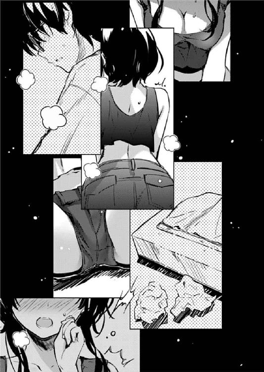
「なに言ってんだよ！ 今いちばんいいところだろ⁉」
照明を少し落とした部屋に流れるのは、耳に馴染む懐かしの音声。
そして、大画面に繰り広げられる、激しい戦闘シーン。
「わかるよ！ 確かに面白いよ？ でも今四時だよ⁉」
「それがどうした！ 明日は日曜だ！」
「いつまで拘束するつもり⁉」
「ほら！ こっからが熱いんだよ！ もう涙なしには見られないんだよ！」
「暑苦しいのはトモの方だよ！ もうティッシュ一箱分泣いてるじゃん！」
「だって、だって嬉しくって......美智留が『ジライヤーズ』のファンだったなんて！」
「曲が好きなだけだって！ アニメは見たことないんだって！」
「羨ましいっ！ この名作を新鮮な気持ちで体験できるなんて！ 俺も記憶を消して一から見直したいよ！」
「いま一から見直してるじゃんあたしまで巻き込んで！」
そう、今、俺の部屋では、往年の名作大ヒットアニメ『ジライヤーズ』の全話鑑賞会が執り行われていた。
最初に放映されたのは俺が生まれる前というくらい大昔のアニメだけど、その王道の面白さは今見返してみてもまったく色褪せることなく、俺たちを引きずり込む。
「でさ、トモ、これいつになったら終わんの？」
......引きずり込んでるよな？
「えっと、全部で五期あるからあと一○○話ちょい？ それに劇場版が数本」
「何日かける気よ⁉」
「大丈夫！ 二期の『ジライヤーズＮＥＸＴＯＮ』までにするから！ 明日の終電までには終わるから！」
「もう帰らせてぇぇぇぇ～！」
「駄目だ帰さない！ 美智留！ 今夜は俺とずっと一緒にいてくれ！」
「っ......そういう台詞は違う目的で言え！」
「ん～、何のことかな～？」
「とぼけるなこの黄昏よりも昏きヘタレ！」
「やかましい！ お前、アニメを一緒に徹夜して見てくれる友達がどれだけ大切かわかってんのかよ！」
「やっぱオタクなんて大嫌いだ～！」
エピローグその二
『お疲れ詩ちゃん～、一巻良かったよ～！』
「ごめんなさい町田さん、壮絶に遅れて」
『大丈夫だいじょぶ！ この埋め合わせは一・二巻二か月連続刊行ってことで編集長説得してあるから～！』
「......さすがにネタよね？ 本気で言ってないわよね？」
『............さすがに今回と同じことやらかしたら次はないって程度には本気よ？』
「..................二度としないから許して」
『ま～でも、そんなに心配してないよ？ だってＴＡＫＩ君の方のシナリオ終わったんでしょ』
「ん、まぁ、一応は」
『ま、詩ちゃんも若いんだから男にかまけることもあるよ。それでもこうしてきちっとケジメを付けた以上、これからは仕事が恋人ってことでよろしく！』
「......色々と言ってることが斜め方向過ぎてどこから突っ込んでいいのか」
『とにかく、向こうが終わったんだから、当分はこっち書き溜められるんでしょ？』
「............」
『詩ちゃん？』
「そのつもりだけど、まだ、その、ちょっと......直しとか、微調整とか」
『......ね、ねぇ、あなたまさか』
「なに？」
『もしかして、〝また〟やらかすつもりなの？』
「......微調整って言ったわよ？」
『ホントね？ 絶対ね？』
「あ、それより町田さん、二巻の新ヒロインの話なんだけど」
『え？ あ、ああ、なに？』
「突如現れた主人公のイトコが家に押しかけてきて同居を始めるって展開はどうかしら？ いつもセクシーな格好で家の中を歩き回って目のやり場に困るような」
『いいねいいね！ その霞詩子らしからぬすっごいベタベタな展開！ 一巻の金髪ツインテールに引き続き読者大混乱よ！』
「......やっぱりベタよねぇ、どっちも」
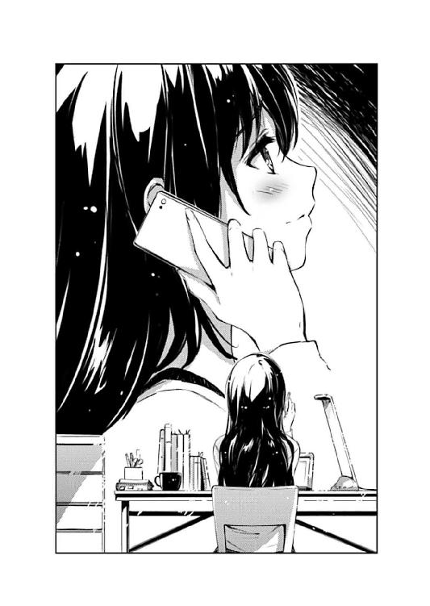
あとがき
どうも、丸戸です。
というわけで『冴えない彼女の育てかた』も四巻を数えるまでになりました。
今回で、僕がラノベ作家として作品を発表し始めてちょうど一年になります。
こうして一年もの間、同じ作品を続けられることになったのも、その間、自身の進化なのか退化なのかわからない変化や、あるいはまるで成長していない的な停滞を優しく厳しく生温かく見守ってくれた皆さんのおかげです。本当にありがとうございます（文章から全然感謝の気持ちが感じられなかったとしても、それは自分の文才のなさによるもので本当に感謝してるんですよ、いやマジで）。
さて、それでは今回の話題は新キャラ美智留の担当分野であるゲーム音楽について......は専門外なのでパスするとして、プライベート......は仕事して仕事して仕事する生活を面白おかしく書くことが能力的に不可能なのでパスするとして、あとはそう、どんどん単なる私信へと成り下がっている章タイトルの話とか......なんでチェック入らないんですかね、あれ。担当さんいつもご面倒かけてます。
というわけで、ちょっとばかり、こちらとは直接関係のないお仕事の話でも。
最近僕は『様々な創作現場に触れたい』などと高校生の職場体験学習みたいな青臭い思いを抱くようになってまして、まぁ、その一環で、こうしてラノベも書かせていただき、それに続いて今はアニメの制作に携わらせていただいております。
その現場はとてもいい雰囲気で、驚くほど楽しく仕事ができています（あ、フォローしておきますが今作の現場も担当さん、イラストレーターさん含め、ものすごくいい雰囲気でモチベーションも高く、自分は本当に運がいいと幸せを嚙み締めております。まぁその雰囲気のおかげで全員揃って仕事は増え続ける一方ですけどね）。
と、話を戻しますが、そんなこんなで仲良くさせていただいているアニメスタッフの皆さんからも、色々と楽しいお話を伺ったりしています。
やはりどこの業界でもそういう雰囲気のいい現場ばかりではないというのは当然で、アニメ界で百戦錬磨の方々から聞くちょっとアレ気味な体験談はとても刺激的で魅力的で幻想的で（ありえないだろという意味で）、自分の知識欲をほどよく刺激してくれます。
......はい、というわけで、ラノベに参入したときと同じ悪癖が身をもたげ、ただいまアニメ業界面白ネタを絶賛収集中です。
なので、いずれこの作品でも霞詩子作品のアニメ化ネタで魑魅魍魎な業界残酷物語が繰り広げられる可能性も......たとえば（ここで文字は途切れている）。
ところで、ちょうど霞詩子の名前が出てきたところでなんですが、次回五巻で、ようやくかの美少女ラノベ作家先生の刊行数に肩を並べられることになりました。
それを祝って、五巻ではふたたび彼女に大活躍してもらうことになりそうです。
......いや、まぁ、この作品で活躍するというと、今まで読んできていただいた皆さんには嫌な未来しか見えないかもしれませんが......なんの、まだ予断は許しません。
出る杭は打たれる方式により、最後まで目立たない加......いえ、ヒロインが勝つという新機軸の作品と見られがちなこの『冴えない彼女の育てかた』ですが、もしかしたら作中作『恋するメトロノーム』のように読者人気の高いヒロインが最後に逆転するという可能性も十分にあると思います。
何しろ僕はユーザーさんにウケるためならなんでもやるライターです。
なので、もしひいきのヒロインがいらっしゃる方は、今後も声高にヒロインへの愛を叫んでいただければ、嬉しく思うのと同時に、作品作りの参考とさせていただきますのでよろしくお願いします。
ただ僕はその一方で『ドＳライター』という謎の称号を得ているらしいので......あ、いや、別に深い意味はありませんので重ねて応援よろしくお願いします。
といった感じで、本編も引き続きよろしくお願いする訳ですが、実は今回、戦略的偶然が重なりまして（それは偶然とは言わない）、同時期の本作のコミカライズ作品が立て続けに単行本化されることになりました。
まずは英梨々をフィーチャーした、にぃとさんのヤングエース版『冴えない彼女の育てかた ～egoistic-lily～』一巻が現在発売中で、続いて本編をフィーチャーした、守姫武士さんのドラゴンエイジ版『冴えない彼女の育てかた』一巻が八月九日発売予定です。
......コミック版の発売日でも金髪ツインテールの後塵を拝するメインヒロインという構図になりましたが、まぁそれはともかく、どちらも原作より面白くなっていますので（問題発言）、皆さんも是非手にとっていただければ幸いです。
では、最後にお馴染みの謝辞を。
深崎さん、七章のタイトル通り今回は（も？）本当にすいません。にしても美智留のデザインはヤバいっすね。四巻でこのビジュアルのヒロインが出るというのは作品のパワーバランス的にどうなんだとも思わないでもないですが、まぁその時はその時で初心を忘れて適当に行きましょう。
萩原さん、最近打ち合わせのたびに『あ、この話もまた本編のネタとして使われるんだろうなぁ』と言いつつ勉強になる話をありがとうございます。そうですよね、担当編集さんだけなら胸の奥にしまっておけばいいけど、編集長とか営業さんに見られたら庇いきれませんよね？ 僕もソーシャルメディアでの発言には気をつけることにします。
そんなこんなで、自分としても、こんな焼畑農業みたいな創作活動を続けていてこの先大丈夫なのかと思い悩むこともありますが、いえすいません噓ついてました悩んだことなんかありません今が楽しければいいよね（刹那的）。てなわけで次は五巻で。
二○一三年、初夏
丸戸 史明
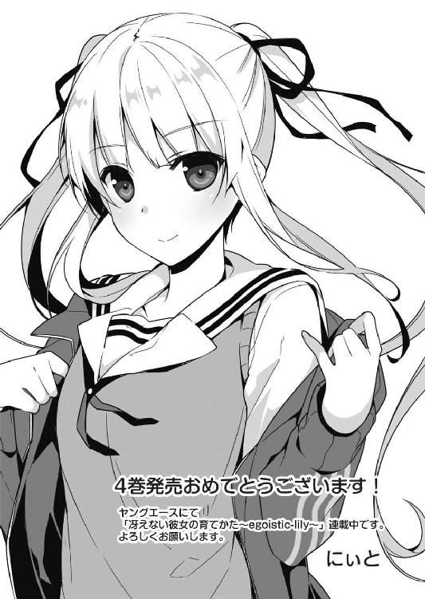
冴えない彼女の育てかた４
丸戸史明
平成25年7月25日 発行
発行者 山下直久
発行所 株式会社 富士見書房
〒102-8144 東京都千代田区富士見1-12-14
http://www.fujimishobo.co.jp/
(C) 2013 Fumiaki Maruto, Kurehito Misaki/Fujimishobo